1. SE 423: Introduction to MechatronicsLecture 24: SLAM, Simultaneous Localization and MappingMarius Juston
Monday, April 20th, 2026
Lecture notes
This title slide shows the University of Illinois Urbana-Champaign logo above the course title, SE 423: Introduction to Mechatronics, and the lecture title, Lecture 24: SLAM, Simultaneous Localization and Mapping. The presenter is Marius Juston, and the date is Monday, April 20th, 2026. The dark blue background has faint sketches of equations and diagrams.
SLAM is the problem of building a map of the world while working out where the robot is in that map. Before you start on it, you spend five minutes discussing your projects with a partner.
2. Review – 5-minute partner discussion
Talk to the person next to you and answer these questions.
- How far are they in their personal project?
-
- What has their biggest challenge been? (other than just having the time to work on it)
- What is their plan for the final project?
-
- If you are talking to someone in the same group, talk to another group!
Lecture notes
This slide, titled "Review – 5-minute partner discussion," asks you to talk with the person next to you for five minutes. Ask them two things. First, how far along are they in their personal project, and what has their biggest challenge been, other than finding the time to work on it? Second, what is their plan for the final project? If your partner is in your own final project group, find someone from another group instead.
The point is to swap ideas and debugging lessons across teams before the semester's final push. After the discussion, the reminders slide covers office hours, the last lab, and homework due dates, and then we start on SLAM.
3. Reminders
Office Hours:
- Monday: 4-6 PM, Neel
- Tuesday: 11-1 PM, Lakshmi
- Tuesday: 1-3 PM, Samuel
- Tuesday: 2-5 PM, Dan & Marius
Lab: Finishing Lab 7 this week. This a 2-week lab! This is the final lab! Afterwards you will just be working on your final project in your teams.
Homeworks:
- Remainder of homework 5 due on Gradescope on April 21, 5PM
- Next homework is primarily the personal project due on April 22, 9AM.
Lecture notes
This slide lists the week's reminders in three sections: office hours, lab, and homework.
Office hours this week are Monday 4 to 6 PM with Neel; Tuesday 11 AM to 1 PM with Lakshmi; Tuesday 1 to 3 PM with Samuel; and Tuesday 2 to 5 PM with Dan and Marius.
For lab, you are finishing Lab 7 this week. Lab 7 is a two-week lab, and it is the final lab of the course. After it, your lab time goes entirely to the final project with your team.
For homework, the remainder of homework 5 is due on Gradescope on April 21 at 5 PM. On the slide, "homework 5" is a link to the assignment. The next homework is primarily the personal project, due April 22 at 9 AM. Notice that the two deadlines are less than a day apart, and the personal project is due in the morning.
If the partner discussion you just had showed that your personal project is behind, the Tuesday office hours fall right before both deadlines and are a good time to get help. Next, there is a chance to ask questions about homework, lab, or LabVIEW before the lecture moves on to SLAM.
4. Questions? (1/2)
Homework, Lab, LabVIEW?
Lecture notes
This slide has the word "Questions?" in large white letters on the dark blue Illinois background, with faint hand-drawn equations and diagrams behind it. Below an orange line, the subtitle asks: "Homework, Lab, LabVIEW?"
This is your chance to ask about homework 5, the personal project, Lab 7 (the final lab), or LabVIEW before we move on. Once the questions are answered, we start today's main topic: SLAM, simultaneous localization and mapping, for our robot's 2D LiDAR.
5. SLAM (1/18)
There are a couple of steps to understand SLAM, these will be split into 5 parts focused on 2D LiDAR SLAM (since that is the most important one for our robot):
- The robot turning on, in a completely unknown environment. Why is this hard?
- Localization, “where am I?” (ICP)
- Mapping, from the LiDAR, generate occupancy grids
- The back-end, pose graphs, factor graphs, and loop closure
- Real world situations, dynamic obstacles, ghost obstacles, robust SLAM
Lecture notes
This slide is the roadmap for the SLAM lectures. SLAM stands for Simultaneous Localization and Mapping. The text says the topic splits into five parts, all focused on 2D LiDAR SLAM because that is the sensor that matters most for our robot.
First, the robot turns on in a completely unknown environment, and we ask why that is hard. Second, localization, "where am I?", using ICP (Iterative Closest Point). Third, mapping: building occupancy grids from the LiDAR. Fourth, the back-end: pose graphs, factor graphs and loop closure. Fifth, real-world problems such as dynamic obstacles, ghost obstacles and making SLAM robust.
Next, we look at the components these parts are built from.
6. SLAM (2/18)
There will be multiple components that will be used in the SLAM:
- Wheel odometry:
-
- Fast, low-latency, but drifts
- 2D LiDAR
-
- High-resolution geometric ground truth, but it is only one slice of the world
- The Front-End:
-
- Converts the raw sequential scans into short-term motion estimates
- The Back-End:
-
- Optimizes the entire history when loops close (loop closure)
- The Map:
-
- A dynamic-aware model the planner can trust
Lecture notes
This slide, titled SLAM, is a text list of the five components that work together in our SLAM system. Each component has a one-line description of its strength or its role.
Wheel odometry is fast and low-latency, but it drifts. On our robot this comes from the wheel encoders read by the Red Board. You get a pose update every control period. Small errors from wheel slip and wheel-radius mismatch add up without bound, so the pose estimate slowly walks away from the truth.
The 2D LiDAR gives high-resolution geometric ground truth, but only one slice of the world. It measures distances to walls and obstacles accurately, yet it sees a single horizontal plane. A table edge above or below that plane is invisible to it.
The front-end converts the raw sequential scans into short-term motion estimates. It compares each new scan to the previous one, using methods like ICP that you see shortly, to work out how far the robot moved.
The back-end optimizes the entire history of poses when a loop closes. Loop closure means the robot recognizes a place it has visited before. That recognition lets the back-end spread the accumulated drift back across the whole trajectory.
The map is the final product: a dynamic-aware model that the path planner can trust.
The key idea is complementarity. Odometry is fast but drifts, and the LiDAR is accurate but limited, so SLAM fuses them. As a quick check, ask yourself which component fixes the drift that the front-end alone cannot.
Next, you start where every robot starts: powered on with no map at all.
7. Robot startup
Lecture notes
This is a section title slide that reads "Robot startup." It has the course's dark blue background with faint hand-drawn sketches of equations and diagrams, and an orange accent line under the title.
This opens the first of the five SLAM parts from the roadmap: your robot turns on in a completely unknown environment. Before you see any algorithms, ask yourself what the robot actually knows at that moment, and why the answer makes both localization and mapping hard.
8. SLAM (3/18)
A mobile robot is powered on for the first time inside an unknown warehouse / location
What is unknown?
- No map
- No estimate of prior state (position)
Only has sensor streams! The LiDAR, IMU, Odometry
However, there are 2 questions that must be answered at every time-step to function properly and perform safe planning. What are they?
- Where am I right now? (Localization)
- What does the world around me look like (Mapping)
Lecture notes
This slide sets up the problem that SLAM solves. The text describes a scenario: a mobile robot is powered on for the first time inside an unknown warehouse or other location. It then asks what is unknown, and lists two things: there is no map, and there is no estimate of the robot's prior state, meaning its position. All the robot has are its sensor streams: the LiDAR, the IMU, and wheel odometry. The slide then poses a question: two questions must be answered at every time-step for the robot to function properly and plan safely. What are they? The answers are "Where am I right now?", which is localization, and "What does the world around me look like?", which is mapping.
Before revealing the answers, pause and let the class guess. The key insight is that the two questions depend on each other. To place a LiDAR scan correctly into a map, you need to know where the robot was when it took the scan. To figure out where you are, you need a map to compare the scan against. Neither exists at power-on, so the robot has to estimate both at the same time. That is the "simultaneous" in Simultaneous Localization and Mapping.
Notice the phrase "every time-step." This is not a one-time calibration. The robot keeps moving, odometry keeps drifting, and the world keeps changing, so both estimates must be updated continuously.
A quick check: if you had a perfect map, which question would remain? Only localization. The next two slides ask why we can't simply get position from GPS, or a map from a CAD drawing.
9. SLAM (4/18)
For localization, why not just use GPS?
- GPS needs line-of-sight to 4+ orbiting satellites, buildings block this completely
- Civilian GPS accuracy is ~3-5 m, useless when aisles are 1.5 m wide
- Underground environments (mines, subways, basements) receive zero signal
- Indoor RTK and UWB beacons work, but require expensive pre-installed infrastructure
Lecture notes
This slide is titled SLAM and asks one question: for localization, why not just use GPS? Four bullets answer it. GPS needs line-of-sight to four or more orbiting satellites, and buildings block this completely. Civilian GPS accuracy is about 3 to 5 meters, which is useless when aisles are 1.5 meters wide. Underground environments such as mines, subways and basements receive zero signal. Indoor RTK and UWB beacons work, but they require expensive pre-installed infrastructure.
On the last slide you saw the two questions a robot must answer at every time step: where am I, and what does the world look like. This slide tackles the first question by ruling out the obvious shortcut.
GPS needs at least four satellites because the receiver solves for four unknowns: x, y, z, and its own clock error. The satellite signals are weak, so a roof or concrete walls block them.
Even with a clear sky, the numbers do not work. An error of 3 to 5 meters is two to three times the width of a 1.5 meter aisle. In that case GPS cannot tell you which aisle you are in, let alone keep you off the shelves.
Two terms on the slide may be new. RTK, or Real-Time Kinematic positioning, uses a fixed base station to correct GPS down to centimeters. UWB, or ultra-wideband, uses radio beacons that you mount around a room and range against. Both give good accuracy, but only after someone installs and surveys hardware in that specific building. Our robot is powered on in an unknown warehouse, so it cannot count on that.
The conclusion is that the robot must localize using only its own sensors: the LiDAR, the IMU and the wheel odometry. Next, you ask the same question about mapping: why not just download a CAD model?
10. SLAM (5/18)
For mapping why not just download a CAD model?
CAD drawings model the specific intended structure; however, not what the actual room is like today!
Furniture, people, tables, drift daily! Just think about this room!
A single misplaced chair renders a pre-programmed path to be unsafe ( as you saw in lab adding an obstacle, we try to go point to point and even in the wall following sometimes it fails)
We need a map that reflects reality now!
When is it okay though to have a predefined map?
Lecture notes
This slide is text only, under the title SLAM. It asks why a robot can't simply download a CAD model of the building for its map. The answer: CAD drawings show the intended structure, not what the room is like today. Furniture, people and tables move daily, so think about this room. A single misplaced chair can make a pre-programmed path unsafe, as you saw in lab when an obstacle was added, the robot tried to drive point to point, and even wall following sometimes failed. The slide concludes that we need a map that reflects reality now, and ends with a question: when is it okay to have a predefined map?
The previous slide showed that GPS cannot solve the "where am I" question indoors. This slide shows that a stored drawing cannot solve the "what does the world look like" question either. A CAD model captures the static skeleton of walls, columns and doorways. It misses everything that changes, and those changing objects are exactly what your robot collides with. When your planner trusts an outdated map, it commands a path through space that is no longer free.
Back to the question. A predefined map is reasonable when the environment is controlled and mostly static, for example a factory cell with fixed fixtures, a warehouse with bolted shelving, or a track you laid out yourself. In those cases the robot only needs to localize against the known map. Even then, many systems treat the stored map as a starting prior and update it with live sensor data.
The next slide puts the two problems together. Localization needs a map, and mapping needs a location, which is the chicken-and-egg problem that SLAM solves.
11. SLAM (6/18)
SLAM, which stands for Simultaneous Localization and Mapping, tries to solve both at the same time.
There is a paradox though. Think about the chicken-and-egg trap…
- To build an accurate map you need to know your exact location at every scan
- To know your exact location, you need an already-existing map to compare against!
Classical robotics solves this separately; SLAM does both at the same time!
Every millisecond:
- Estimate motion
- Predict where the world should be
- Refine both!
Lecture notes
This slide defines SLAM, which stands for Simultaneous Localization and Mapping, and presents the chicken-and-egg problem at its core. It is all text: a definition, two bullets stating the paradox, a line contrasting classical robotics with SLAM, and a three-step loop labeled "Every millisecond": estimate motion, predict where the world should be, refine both.
The last two slides showed why you cannot simply borrow the answers. GPS fails indoors and is too coarse for narrow aisles, and a CAD model describes the building as designed, not the room as it is today. So the robot has to work out both its position and its map on its own.
Here is the trap. To build an accurate map, you need to know exactly where you were at every LiDAR scan, or the walls smear and double. But to know exactly where you are, you need an existing map to compare your scan against. Each problem needs the other already solved.
Classical robotics breaks the loop by solving one half separately. It either localizes in a known map or maps from a known pose. SLAM refuses that shortcut and estimates both together. In every update cycle, the robot first estimates its motion from odometry or the encoders you used in lab. It then predicts where the world should appear from that new pose. Finally, it compares the prediction with the new scan and refines both its pose and the map.
Quick check: if the pose estimate drifts by 10 cm, what happens to the next walls added to the map? Next, we write this loop as a single probability the robot tries to maximize.
12. SLAM (7/18)
Essentially SLAM is trying to maximize the following probability:
In a single iteration, which do you think that the robot updates first? It’s pose estimate or the map?
maximize
Find the most likely trajectory x and map m given all observations z and controls u
Lecture notes
This slide turns the chicken-and-egg idea from the last slide into one probability statement. A highlighted box in the center reads: maximize P(x_(1:t), m | z_(1:t), u_(1:t)). In words: maximize the probability of the trajectory x from time 1 to t, and the map m, given all observations z from time 1 to t and all controls u from time 1 to t. The caption underneath says: find the most likely trajectory x and map m given all observations z and controls u.
Here is what each symbol means. x_(1:t) is the whole sequence of robot poses, so on our robot that is x, y and heading at every step. m is the map, for example an occupancy grid. z_(1:t) is every sensor measurement, such as LiDAR scans. u_(1:t) is every control input or odometry reading, such as wheel encoder motion. The vertical bar means "given." The key point is that the pose and the map sit together on the left side, so SLAM estimates them jointly instead of assuming one is already known.
The slide ends with a question: in a single iteration, does the robot update its pose estimate or the map first? Pause and let the class commit to an answer. In most systems the pose comes first. The robot predicts its motion from u_t, then refines that pose by matching the new scan z_t against the current map. Only then does it insert the scan into the map at that refined pose. If you added the scan first, at a wrong pose, you would corrupt the very map you localize against.
Next, we look at why SLAM is needed at all, with real-world examples.
13. SLAM (8/18)
Why do we need SLAM at all?
What some robotics examples where we want to map and plan trajectories in unknown / updating environments?
- Robot vacuums must map the unknown living room the first time they're switched on
- Self-driving cars use SLAM to reconcile HD maps with new construction, detours, and snow
- Mars rovers have no GPS and no human cartographer - everything is SLAM by necessity!
- Search-and-rescue drones enter collapsed buildings no person has ever mapped before
Lecture notes
This slide asks a motivating question: why do we need SLAM at all? Its second prompt invites you to name robotics examples where a robot must map and plan trajectories in unknown or changing environments. Four answers follow as a bulleted list.
First, a robot vacuum must map an unknown living room the first time it is switched on. Second, self-driving cars use SLAM to reconcile their prebuilt HD maps, meaning high-definition maps, with new construction, detours and snow. Third, Mars rovers have no GPS and no human cartographer, so everything is SLAM by necessity. Fourth, search-and-rescue drones enter collapsed buildings that no person has ever mapped.
Before reading the list, take a moment to come up with your own examples. Then look for what the four cases share. In each one, either no map exists yet, or the map that exists is out of date. In most of them, external positioning such as GPS is also missing or unreliable. Indoors, on Mars, and inside rubble, the robot can rely only on its own sensors, such as wheel encoders, an IMU, cameras or LiDAR. That is exactly the situation the probability on the previous slide describes. The robot must estimate both its trajectory x and the map m from observations z and controls u alone.
Notice that the self-driving car case is not a blank slate. SLAM is also valuable when a map exists but the world has changed since it was made.
Quick check: does a warehouse robot running on a fixed, painted floor grid need SLAM? Why or why not?
Next, we ask what separates a good SLAM system from a poor one.
14. SLAM (9/18)
What makes a good SLAM system?
- Real-time: the pose estimate must arrive before the robot crashes into the wall
- Globally consistent: no double walls, bent corridors, or duplicate rooms in the final map
- Robust to noise, to moving people, to sensor dropouts, to wheel slip on tile floors
- Memory-bounded: a $50 embedded CPU must hold a 10,000 m² facility's map
- Lifelong: the map must stay valid for weeks as the environment slowly evolves
Which of these five requirements do you think was the hardest to solve historically? Why?
Lecture notes
This slide asks what makes a good SLAM system and lists five requirements as bullets, then poses a discussion question. After the previous slide's examples of robot vacuums, self-driving cars, Mars rovers and rescue drones, it moves from why we need SLAM to what a SLAM system has to deliver to be useful.
Real-time: the pose estimate must arrive before the robot crashes into the wall. A perfect estimate that shows up half a second late is useless to a feedback controller, just as a late encoder reading would be in your lab control loops.
Globally consistent: the final map has no double walls, bent corridors or duplicate rooms. Each local piece of the map can look fine while the whole map is warped.
Robust: the system tolerates sensor noise, moving people, sensor dropouts and wheel slip on tile floors. Your robot's wheel odometry slips on smooth floors in exactly this way.
Memory-bounded: a $50 embedded CPU must hold the map of a 10,000 square meter facility. A naive fine-grained grid or an ever-growing list of scans quickly exceeds that budget.
Lifelong: the map must stay valid for weeks as furniture moves and the environment slowly changes.
The slide closes with a question: which of these five requirements was historically the hardest to solve, and why? Take a minute with a partner before the next slide gives the answer. A useful hint is to think about which requirement gets worse the longer and farther the robot drives, because small errors accumulate over time.
15. SLAM (10/18)
Global Consistency is the hardest to solve.
In early SLAM, robots relied primarily on Dead Reckoning or incremental scan-matching. Because every sensor measurement has a non-zero covariance, these small errors integrate over time.
The hardest part of global consistency is Loop Closure. Imagine a robot traveling a 1-kilometer loop. Even a tiny error of 0.5° in orientation can result in the robot returning to its starting point and perceiving the wall to be several meters away from where it "should" be.
The system must recognize a previously visited location using only sensor data (often called Place Recognition or Appearance-based SLAM).
Lecture notes
This slide answers the question from the previous slide: of the five requirements for a good SLAM system, global consistency was historically the hardest to solve. The slide is text only, with four short statements.
First, early SLAM relied mainly on dead reckoning or incremental scan-matching. Dead reckoning means estimating your current pose by adding up motion measurements, such as wheel encoder counts, starting from a known start. Incremental scan-matching aligns each new LiDAR scan only against the previous one. Every measurement has a non-zero covariance, meaning some uncertainty, and because each new pose is built on the last one, those small errors integrate over time and never cancel out.
Second, the hardest part of global consistency is loop closure. The slide's example is a robot driving a 1-kilometer loop with only a 0.5 degree error in orientation. Heading error is especially damaging because it bends every later step. As a rough check, sin(0.5 degrees) is about 0.0087, so after 500 meters on a wrong heading the position is off by about 500 * 0.0087, roughly 4.4 meters. When the robot returns to its start, it sees the wall several meters from where the map says it should be. The result is the double walls and bent corridors from the previous slide.
Third, the fix requires the robot to recognize a place it has already visited using only sensor data. This is called place recognition, or appearance-based SLAM.
You have seen this drift on your own robot. Wheel slip on tile makes the encoder-only pose wander. Next, we define exactly what SLAM optimizes: the robot's pose triple of x, y, and theta.
16. SLAM (11/18)
The pose that the SLAM is optimizing for,
Every SLAM algorithm optimizes some collection of these pose triples over time. Since again we are optimizing the robot’s position / trajectory that it has taken.
Lecture notes
This slide defines exactly what a SLAM system estimates. The top line reads "The pose that the SLAM is optimizing for," followed by two equations. The first is the pose vector: X_t = [x_t, y_t, theta_t], read as "X at time t equals x at t, y at t, theta at t." The second is the same pose written as a three-by-three homogeneous transformation matrix T_t. Its first row is cos(theta), -sin(theta), x. Its second row is sin(theta), cos(theta), y. Its third row is 0, 0, 1. Below the equations the slide says that every SLAM algorithm optimizes some collection of these pose triples over time, because what you are really estimating is the trajectory the robot has taken.
The triple is the compact form: position in meters and heading in radians in the world frame. The matrix is the working form. Its upper-left two-by-two block rotates by theta, and its right column translates by (x, y). Multiplying T_t by a LiDAR point written as [p_x, p_y, 1] converts that point from robot coordinates into world coordinates. Chaining poses is just matrix multiplication, and the relative motion between two poses is inv(T_i)*T_j. This is exactly what scan matching and the pose graph produce later in the lecture.
Quick check: suppose the robot is at (2, 1) with theta = 90 degrees, and it sees a point 1 m straight ahead. Where is that point in the world? The answer is (2, 2).
A common mistake is to add headings directly without wrapping them to the range -pi to pi.
On the previous slide, a small heading error broke loop closure. That is why theta matters so much here. Next, you see the loop that updates these poses.
17. SLAM (12/18)
The SLAM Loop:
- Read odometry: produce fast prior estimate of new pose
- Read LiDAR: capture current snapshot of the world
- Scan-match the snapshot again recent scans: refine the pose estimate
- Fuse LiDAR correction with odometry prior: publish the best pose
- Updating the map using the newly confirmed pose: repeat
Lecture notes
This slide lists "The SLAM Loop" as five steps, each written as an action followed by its purpose. First, read odometry to produce a fast prior estimate of the new pose. Second, read the LiDAR to capture the current snapshot of the world. Third, scan-match that snapshot against recent scans to refine the pose estimate. Fourth, fuse the LiDAR correction with the odometry prior and publish the best pose. Fifth, update the map using the newly confirmed pose, then repeat.
On the last slide we said SLAM optimizes the pose triple (x, y, theta) over time. This loop is how each new triple gets produced. A "prior" is your best guess before the new measurement arrives. Odometry from the wheel encoders is fast and smooth, but it drifts, because every small error integrates over time. For example, x_(t+1) = x_t + v_t*cos(theta_t)*dt accumulates any error in theta_t. The LiDAR scan cannot drift, but it is slower and needs a starting guess. Scan matching asks which small shift and rotation best line up this scan with the scans you already have, and the odometry prior is the starting point for that search.
Notice the ordering in the last two steps. You update the map only after the pose is confirmed. If you insert a scan using a bad pose, you corrupt the map, and every later match inherits that error.
Quick check: why not skip odometry and use only scan matching? Without a good initial guess, the matcher can lock onto the wrong alignment, especially in long, featureless hallways.
The next slide expands this same loop into a full flowchart that separates the fast front-end from the slower back-end.
18. SLAM (13/18)
![Flowchart: LiDAR-inertial SLAM pipeline split into a high-frequency front-end and a low-frequency back-end. Front-end: IMU or odometry interrupts at 100 Hz or more feed IMU preintegration (delta v, delta p, delta R), then motion model prediction, x sub t equals f of x sub t minus 1, u sub t, which publishes a fast pose to the local planner and control. A check asks whether a 10 Hz LiDAR scan is ready; if not, the loop returns to the next IMU interrupt. If so, the back-end runs: point cloud deskewing and voxel filtering (using the motion estimate for un-distortion), scan-to-local-map matching by ICP or NDT, then factor graph optimization with iSAM2 or GTSAM using odometry factors. A map manager handles the local window and global map, feeding the local map back to matching and loop closure factors back to the optimizer. It publishes the global map and a corrected pose, which feeds back to the motion model as drift correction.](L24-25_files/9cebf6684d12.svg)
Lecture notes
This slide shows the SLAM loop from the previous slide as a full flowchart of a LiDAR-inertial SLAM pipeline. A dashed box at the top is labeled Front-End (High Freq Tracking), and a dashed box at the bottom is labeled Back-End (Low Freq Mapping).
The front-end starts with an interrupt from the IMU or wheel odometry at 100 Hz or more. That feeds IMU preintegration, which accumulates the change in velocity, position and rotation (delta v, delta p, delta R) between LiDAR scans. Next comes a motion model prediction, x_t = f(x_(t-1), u_t): the new state is a function of the previous state and the current input. This fast pose is published straight to the local planner and controller. This is the same interrupt-driven idea you used on the Red Board: fast sensor reads feed a fast control loop.
A diamond then asks whether a 10 Hz LiDAR scan is ready. If not, the loop returns to wait for the next IMU interrupt. If so, the back-end runs. First it deskews the point cloud, using the front-end motion estimate to undo the distortion caused by the robot moving during the sweep, and it voxel-filters the cloud to thin out the points. Then it matches the scan to the local map with ICP or NDT, which produces an odometry factor. That factor goes into factor graph optimization using iSAM2 or GTSAM. A map manager keeps a local window and the global map. It feeds the local map back to the matcher and loop closure factors back to the optimizer.
Finally, the back-end publishes the global map and a corrected pose. That corrected pose is injected back into the motion model as drift correction.
The key point is that the two halves run at different rates: fast but drifting prediction, and slow but accurate correction. The rest of this lecture fills in each box, starting with scan matching.
19. Where am I?
Lecture notes
This section slide shows the question "Where am I?" in large white text, underlined by a thin orange line, on the dark blue Grainger Engineering background with faint hand-drawn equations and diagrams.
You have just seen the full SLAM loop and the front-end/back-end pipeline. Now we zoom in on the localization half: how the robot uses LiDAR to work out exactly how it moved. Next, we frame every scan-match as finding one rigid transformation between two point clouds.
20. SLAM (14/18)
We need to perform localization, specifically with LiDAR, we are aligning, the newly provided scan with the previous scan centimeters at a time.
Every scan-match boils down to finding one rigid transformation
- Given a source point cloud P (current scan) and a target Q (previous scan or map)
- Find the rotation R and translation t that best overlays P onto Q
- "Best" = minimizes a chosen error metric over all matched point pairs
If we know how the world moved relative to the robot, we know how the robot moved
Lecture notes
This slide answers the "Where am I?" question from the previous slide for a LiDAR robot. The text says localization with LiDAR means aligning each newly arrived scan with the previous scan, a few centimeters of motion at a time, and that every scan match boils down to finding one rigid transformation. Three bullets define the problem: you are given a source point cloud P, the current scan, and a target Q, the previous scan or the map. You find the rotation R and translation t that best overlay P onto Q. "Best" means minimizing a chosen error metric over all matched point pairs. The slide concludes: if we know how the world moved relative to the robot, we know how the robot moved.
At the bottom is the equation T* = (R*, t*) = argmin over R, t of sum over i of error(R*p_i + t, q_i). In words: the optimal transform T star, made of the optimal rotation and translation, is the R and t that minimize the total error between each rotated and shifted source point and its matched target point.
"Rigid" means only rotation and translation, with no scaling or stretching, because walls do not change size between scans. For our planar robot, R rotates by one angle theta and t is an (x, y) shift, so you solve for three numbers per scan.
A common mistake is the direction of the result. The scan appears to move opposite to the robot, so the transform that aligns the scans encodes the robot's motion between them.
Notice that the slide assumes you already know which p_i matches which q_i. ICP, coming shortly, handles that. Next, a 1D hallway example makes this concrete.
21. SLAM (15/18)
The 1D wall example,
Imagine your robot is in a 1D hallway facing a wall,
Time step 1: The target ,
- The robot is at global position 0
- The wall is 5 meters ahead
- The LiDAR records a point at . This is our prior scan
Time step 2: The Source ,
- The robot drives forward 2 meters.
- The wall has not moved, but because the robot is closer the LiDAR measures the wall as being only 3 meters away
- The LiDAR records a new point at , this is the new scan
Lecture notes
This slide sets up a one-dimensional wall example. It takes the scan-matching idea from the previous slide, finding the rigid transformation that overlays the source scan P onto the target scan Q, and makes it concrete enough to do in your head.
The slide describes your robot in a 1D hallway, facing a wall. It has two time steps, each with three bullet points.
Time step 1 produces the target, Q. The robot sits at global position 0, and the wall is 5 meters ahead. The LiDAR records a single point at q = 5. This is the prior scan, the reference we will align against. Because the robot starts at the origin, its local frame and the global frame are the same.
Time step 2 produces the source, P. The robot drives forward 2 meters. The wall has not moved. The robot is closer, though, so the LiDAR now measures the wall at only 3 meters. The new point is p = 3, and this is the new scan.
The key idea is that LiDAR measurements are always expressed in the robot's own local frame. The wall stayed put, but its measured position changed from 5 to 3. That change was caused entirely by the robot's own motion. This is the sentence from the last slide in action: if we know how the world moved relative to the robot, we know how the robot moved.
A common confusion is to think the wall "moved" from 5 to 3. It didn't. Only the frame you measure from moved.
Before the next slide, try a quick check. If you put p = 3 and q = 5 in the same frame, what single shift t makes them line up? How does that number relate to how far the robot drove? Next, we write this as an objective function and solve for t.
22. SLAM (16/18)
If we just blindly drop the new point and the old point into the same local coordinate space without moving them, they do not align!
The algorithm sees a point at 3 and a point at 5!
Now we apply our objective function to find the transformation (ignoring rotation for this 1D example):
The algorithm thus asks: “How much do I need to shift the new point (), so it sits as best it can on top of the old point ()”
What is the optimal in this case?
Lecture notes
This slide continues the 1D hallway example from the previous slide. The text says that if you simply drop the new point P and the old point Q into the same local coordinate frame without moving either one, they do not line up: the algorithm sees one point at 3 and another at 5, even though both are the same physical wall.
To fix this, the slide applies the scan-matching objective, ignoring rotation R because the example is one-dimensional. The centered equation reads: t-star equals the argument that minimizes, over t, the sum of (p plus t minus q) squared. In plain text: t* = argmin_t sum (p + t - q)^2. In words, the algorithm asks how far it must shift the new point, p = 3, so that it sits as closely as possible on top of the old point, q = 5. The slide ends with the question: what is the optimal t?
Pause here and work it out before reading on. With a single matched pair, the cost is (3 + t - 5)^2. Take the derivative with respect to t and set it to zero: 2*(3 + t - 5) = 0, so t = q - p = 2 meters. The cost then drops to exactly zero. With many matched pairs, the same calculation gives the average of (q - p) over all the pairs. That is why least squares is such a convenient choice of error metric: the best translation has a simple closed-form answer.
A common slip is getting the sign backwards and answering t = p - q = -2. Remember that t is the shift applied to the new scan to move it onto the old one.
The next slide draws this as a three-step picture and shows that this t is exactly the robot's motion.
23. SLAM (17/18)
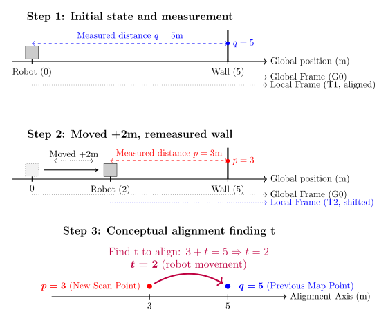
Lecture notes
This slide answers the question from the previous slide with a three-step diagram of the 1D wall example.
Step 1, "Initial state and measurement": a gray box representing the robot sits at global position 0 on a horizontal axis labeled "Global position (m)". A thick vertical line marks the wall at 5. A blue dashed arrow labeled "Measured distance q = 5m" spans the gap, and a blue dot marks q = 5 on the wall. Two dotted lines below show the global frame G0 and the local frame T1 lying on top of each other, because at startup the robot's frame is the world frame.
Step 2, "Moved +2m, remeasured wall": a faded box at 0 shows where the robot started, and an arrow labeled "Moved +2m" points to the robot's new position at 2. A red dashed arrow labeled "Measured distance p = 3m" reaches the wall, now marked with a red dot at p = 3. The local frame T2, drawn in blue, has shifted right with the robot.
Step 3, "Conceptual alignment finding t": on a single "Alignment Axis", a red dot at 3 is labeled "New Scan Point" and a blue dot at 5 is labeled "Previous Map Point". A curved arrow carries the red dot onto the blue one, with the text "Find t to align: 3 + t = 5, so t = 2", and below it "t = 2 (robot movement)".
In error terms, the algorithm minimizes (p + t − q)^2, which is zero when t = q − p = 5 − 3 = 2.
Notice that the shift needed to align the scans equals the distance the robot drove. The next slide develops that idea: scan matching is localization.
Quick check: if the robot had driven 1.5 m instead, what would p and t be?
24. SLAM (18/18)
The algorithm tells you that to align the scans, you must apply a translation of +2 meters to the new scan.
That +2 meters is exactly the distance the robot drove forward!
The matches are indeed close to each other in the physical world, but they are offset in the sensors by the exact inverse of the robot's motion.
By finding the transformation () that shifts the new local scan () to overlay perfectly onto the global map (), you are simultaneously calculating the robot's current pose in the world!
Lecture notes
This slide is text only, under the title SLAM. It answers the question from the last slide: what is the optimal shift t in our one-dimensional example? It makes four points. First, to align the scans, the algorithm says to apply a translation of plus 2 meters to the new scan. Second, that plus 2 meters is exactly the distance the robot drove forward. Third, the matched points are close together in the physical world, but in the sensor readings they are offset by the exact inverse of the robot's motion. Fourth, finding the transformation (R, t), a rotation R and translation t, that makes the new local scan P overlay the global map Q also gives you the robot's current pose in the world.
Recall the numbers. The wall is at q = 5 in the global frame. After the robot drives forward 2 meters, it measures the same wall at p = 3. Solving 3 + t = 5 gives t = 2. The wall did not move. It only looks 2 meters closer because the sensor moved 2 meters toward it. The scan shifts by minus 2 because the robot moved by plus 2, so undoing that apparent shift recovers the motion.
This is the core insight of scan matching. Aligning the scan and localizing the robot are the same computation, which is why the "localization" half of SLAM can come straight out of the LiDAR.
A common mistake is getting the sign backwards. The scan offset is the negative of the robot's motion, and the correction t you apply to P is the robot's motion.
Quick check: if the robot backed up 1 meter instead, where would the wall appear, and what would t be? The wall would appear at 6, and t would be minus 1.
Next, you see three families of methods that build on this idea in different ways.
25. Three Families of Localization Methods
They differ in how many hypotheses (position estimates) they track and how they correct errors
- Modern SLAM combine all three: ICP for the front-end, filters for relocalization, graphs for the backend
1
Scan Matching (ICP)
- Maintains ONE best guess.
- Iteratively refines it by aligning the latest LiDAR scan to the map.
- Fast, deterministic, fragile at initialization.
2
Particle Filter (MCL)
- Tracks HUNDREDS of weighted hypotheses in parallel.
- Probabilistic, handles kidnapping, but memory-heavy for large maps.
3
Graph Optimization
- Maintains a graph of every past pose + constraints.
- Solves them all simultaneously.
- Today's gold standard for global consistency.
Lecture notes
This slide is a roadmap for the rest of the lecture. The title is "Three Families of Localization Methods," and the subtitle says they differ in how many hypotheses, meaning candidate position estimates, they track and how they correct errors. Below are three side-by-side numbered cards, followed by one summary bullet.
Card 1 is Scan Matching, using ICP (Iterative Closest Point). It keeps ONE best guess of the robot's pose and refines it by aligning the latest LiDAR scan to the map. That is what you just saw in one dimension: solving 3 + t = 5 gave t = 2 meters of motion. It is fast and deterministic, meaning the same inputs always give the same answer. However, it is fragile at initialization: if the starting guess is far off, it can lock onto the wrong alignment.
Card 2 is the Particle Filter, Monte Carlo Localization or MCL. It tracks HUNDREDS of weighted hypotheses, called particles, in parallel. Because it is probabilistic, it can handle the "kidnapped robot" problem, where the robot is moved without knowing it and must relocalize. The cost is memory and computation, which grow with large maps.
Card 3 is Graph Optimization. It keeps a graph of every past pose plus the constraints between them, such as odometry and scan matches, and solves for all the poses simultaneously. It is today's gold standard for global consistency.
The bottom bullet says modern SLAM combines all three: ICP for the front-end, filters for relocalization, and graphs for the back-end.
Quick check: which family would you pick if your robot is switched on with no idea where it is? Next, we start with family 1 and build the ICP algorithm step by step.
26. ICP (1/4)
Lecture notes
This is a section title slide. It shows the single word "ICP" in large white letters on the dark blue Illinois background, with an orange accent line beneath it. Faint hand-drawn equations and diagrams decorate the background and carry no content.
ICP is the first of the three localization families from the previous slide: scan matching, which keeps one best guess of the robot's pose. Next, you see what the acronym stands for and the four steps that ICP repeats until the alignment converges.
27. ICP (2/4)
ICP stands for Iterative Closest Point:
Repeat the following 4 steps until the transformation stops changing:
- Data Association: pair each source point with its nearest target point
- Transformation: solve for the that best aligns the matched pairs
- Apply: move the source cloud by that transformation
- Check: if the error has dropped below a threshold stop. Otherwise loop.
Lecture notes
This slide defines ICP, which stands for Iterative Closest Point, and lists the loop it runs. The heading says to repeat four steps until the transformation stops changing. Step one, data association: pair each source point with its nearest target point. Step two, transformation: solve for the R, t (rotation R and translation t) that best aligns the matched pairs. Step three, apply: move the source cloud by that transformation. Step four, check: if the error has dropped below a threshold, stop; otherwise loop.
This is the first of the three localization families from the last slide, the scan matcher that keeps one best guess. The source cloud is your latest LiDAR scan. The target is the map, or the previous scan. The R and t you recover are the robot's change in pose. On a planar robot, that is a 2 by 2 rotation by angle theta plus a translation (t_x, t_y).
Notice the trick. We don't know the true correspondences, so we guess them with nearest neighbors. Once pairs are fixed, finding the best R, t is an easy least-squares problem. Moving the cloud then gives better pairs on the next pass.
A common mistake is to assume the first pairing is correct. Early on it usually isn't, and several source points can grab the same target point. That is why ICP needs a decent initial guess, for example from wheel odometry.
The next slide shows a three-panel picture of these iterations in action.
28. ICP (3/4)
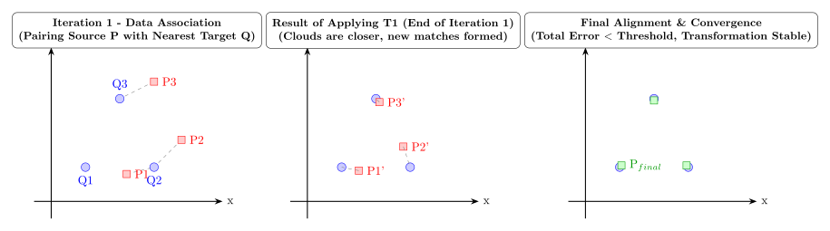
Lecture notes
This slide turns the four ICP steps from the previous slide into a picture. It has three panels side by side, each showing an x-y plane. Blue circles are the target points Q1, Q2 and Q3, the reference cloud or map. Red squares are the source points P1, P2 and P3, the new scan you want to align.
The left panel is titled "Iteration 1, Data Association: pairing source P with nearest target Q." Dashed lines connect each source point to its closest target. P3, up and to the right of Q3, pairs with Q3. P2, above and to the right of Q2, pairs with Q2. P1 also lands closest to Q2, so Q1 gets no partner. These first matches are imperfect, and that is normal. ICP does not need correct pairs on the first pass, only pairs good enough to move the cloud in roughly the right direction.
The middle panel is titled "Result of applying T1, end of iteration 1: clouds are closer, new matches formed." After the transform T1 is applied, the moved points P1', P2' and P3' sit much closer to the targets. Because the association is recomputed every iteration, they now pair one to one: P1' with Q1, P2' with Q2, and P3' with Q3.
The right panel is titled "Final alignment and convergence: total error less than threshold, transformation stable." Green squares labeled P_final sit on top of the blue circles.
Quick check: why does re-pairing every iteration matter? Next, we formalize this exact picture as point-to-point ICP.
29. Variant 1: Point-to-Point ICP (“Vanilla”) (1/21)
The starting point of the ICP methods,
- Match each source point to its geometrically nearest target point
- Measure the straight-line Euclidean distance between each matched pair
- Sum the squared distances and minimize over
This is exactly what is illustrated in the figure.
What happens if you start the initial guess very wrong, say 90 degree off?
Works very well when two-point clouds start near each other and have clear features.
Falls apart in featureless or repetitive environments (more on that soon)
Lecture notes
This slide introduces the first and simplest ICP variant, point-to-point ICP, often called "vanilla" ICP. It is text only and lists three steps. First, match each source point p_i to its geometrically nearest target point q_i. Second, measure the straight-line Euclidean distance between each matched pair. Third, sum the squared distances and minimize that sum over R and t. Written out, the cost is E(R, t) = sum over i of || R*p_i + t - q_i ||^2. In words: rotate each source point by R, shift it by t, find its distance to its matched target point, square it, and add these up over all pairs. R is the rotation and t is the translation.
The slide says this is exactly the procedure in the three-panel figure from the previous slide, which returns on the next slide. In that figure, P1 and P2 first both pair with Q2. After one transform, the moved points re-pair one-to-one with Q1, Q2 and Q3 and then converge onto the targets.
The slide then asks: what happens if your initial guess is very wrong, say 90 degrees off? Think about it before reading on. The nearest-neighbor pairings are then mostly wrong, and minimizing over wrong pairs pulls the cloud toward a wrong answer. ICP only finds a local minimum, so it can converge confidently to the wrong alignment.
That is why the slide says ICP works very well when the two point clouds start near each other and have clear features. On your robot, wheel odometry supplies that good initial guess for LiDAR scan matching. The slide also notes that ICP falls apart in featureless or repetitive environments, such as long hallways; the lecture returns to this soon. Next, you see why this squared-distance form has a closed-form solution.
30. ICP (4/4)
Lecture notes
This slide brings back the three-panel ICP picture, now that you have the point-to-point definition, so you can read it as vanilla ICP in action. Each panel is an x-y plot with blue circles as the target points Q1, Q2, Q3 (the reference scan) and red squares as the source points P1, P2, P3 (the new scan).
The left panel is titled "Iteration 1, Data Association: pairing source P with nearest target Q." Dashed lines join each red point to its closest blue point. P3, up and to the right of Q3, pairs with Q3. P2, above and right of Q2, pairs with Q2. P1 also sits nearest Q2, so Q1 gets no partner. Two of the three pairings are wrong, and that is normal in the first iteration.
The middle panel, "Result of applying T1, end of iteration 1: clouds are closer, new matches formed," shows the moved points P1', P2', P3'. P3' nearly overlaps Q3. P1' now sits beside Q1, and P2' sits just above Q2, so the matches are one-to-one. The transform T1 was computed from imperfect pairs, yet it still moved the clouds closer, and re-matching corrected the pairs.
The right panel, "Final alignment and convergence: total error below threshold, transformation stable," shows green squares, labelled P_final, sitting on the blue circles. ICP stops when the summed squared error drops below a threshold or when T barely changes between iterations.
A common mistake is to treat the first correspondences as truth. ICP works because it alternates between matching and solving. Recall the earlier question: with a 90 degree initial error, the nearest neighbours are so wrong that ICP can converge to a wrong local minimum. On your robot, odometry supplies the initial guess. Next, you will write the residual for each pair and see why the least-squares solve has a closed form.
31. Variant 1: Point-to-Point ICP (“Vanilla”) (2/21)
For every matched pair , the residual is the 3D (or 2D) vector from to the transformed
The objective function is the sum of the squared residual magnitudes, a least-squares problem!
Given that this is a least-squares problem what is the advantage?
There is a closed-form solution via Singular Value Decomposition (SVD)
No iterative non-linear solver needed for each inner step!
Lecture notes
This slide turns the picture from the last slide into an equation. You match each source point p_i to a target point q_i, and for every matched pair (p_i, q_i) the residual is the 2D or 3D vector separating the two once the transform is applied. The equation at the bottom of the slide reads: E of R and t equals the sum over i of the squared norm of R times p_i plus t minus q_i, written E(R, t) = sum_i ||R*p_i + t - q_i||^2. Here R is the rotation matrix, t is the translation vector, and the transform moves the source point p_i onto the target q_i. Because the term is squared, its sign does not matter.
The objective is a sum of squared residual magnitudes, so this is a least-squares problem. The slide then asks what that buys you. Pause here and think before reading on.
The answer is that point-to-point ICP has a closed-form solution through the Singular Value Decomposition, or SVD. With the correspondences held fixed, you compute the best R and t directly in one step, with no iterative nonlinear solver such as Gauss-Newton inside each ICP iteration. ICP as a whole still iterates: re-match nearest neighbors, solve exactly, and repeat. Only the inner alignment step is exact.
A common mistake is to think "closed form" means ICP converges in one shot. The correspondences can still be wrong, which is why a bad initial guess, like the 90 degree case from earlier, still fails.
Next, you see the four SVD steps that produce R and t.
32. Variant 1: Point-to-Point ICP (“Vanilla”) (3/21)
The P2P ICP can be solved in 4 steps:
- Compute the centroids and of both point clouds
- Build the 2×2 cross-covariance matrix
- Decompose using Singular Value Decomposition
- Rotation: Translation:
- Done!
Lecture notes
This slide gives the recipe for the closed-form solution promised on the previous slide. It says the point-to-point ICP step "can be solved in 4 steps," then lists five numbered items, the last of which is simply "Done!"
Step 1: compute the centroids p-bar and q-bar of both point clouds. A centroid is the average position of the points, its center of mass.
Step 2: build the 2×2 cross-covariance matrix H = sum over i of (p_i − p-bar)(q_i − q-bar)^T. In words, for each matched pair you subtract each point's centroid, multiply the source column vector by the transposed target vector, and add up all those outer products. H is 2×2 because our robot's LiDAR scans are planar. In 3D it would be 3×3.
Step 3: decompose H = U·Σ·V^T using Singular Value Decomposition. This means H equals U times Sigma times V transpose, where U and V are orthogonal matrices and Sigma is diagonal.
Step 4: the rotation is R = V·U^T (R equals V times U transpose), and the translation is t = q-bar − R·p-bar (the target centroid minus the rotated source centroid).
Notice that this solves one inner iteration exactly, given the correspondences from the nearest-neighbor matching you saw on slide 30. ICP still repeats matching and solving until the error drops below a threshold.
Common mistake: with noisy or nearly degenerate data, V·U^T can come out with determinant −1. That is a reflection, not a rotation. Check det(R), and if it is negative, flip the sign of the last column of V and recompute.
Next, we look at why this works exactly even though rotations involve sines and cosines.
33. Variant 1: Point-to-Point ICP (“Vanilla”) (4/21)
Why is this equation quadratic (and therefore solvable exactly) despite containing rotations?
Rotations involve non-linear trigonometry (sines/cosines), which usually require iterative guessing. How do we solve for it exactly in one step?
After shifting both point clouds to their center of mass, the translation becomes zero.
Lecture notes
This slide asks the question behind the four-step SVD recipe from the previous slide: why can point-to-point ICP be solved exactly, in one step, when it contains a rotation?
At the top is the objective: E(R, t) = sum over i of ||R*p_i + t - q_i||^2. In words, the error as a function of rotation R and translation t is the sum, over every matched pair, of the squared length of the vector from target point q_i to the transformed source point R*p_i + t. Below it, the slide poses two questions. Why is this equation quadratic, and therefore solvable exactly, despite containing rotations? And since rotations involve sines and cosines, which usually require iterative guessing, how do we solve for R exactly in one step?
The first move is to remove the translation. If you set the derivative of E with respect to t to zero, you get t = q_bar - R*p_bar, where p_bar and q_bar are the centroids, or centers of mass, of the two point clouds. Now shift every point by its cloud's centroid: p_i' = p_i - p_bar and q_i' = q_i - q_bar. Both centered clouds sit at the origin, so the best translation between them is zero. The slide states this result directly and shows the reduced objective: E(R) = sum over i of ||R*p_i' - q_i'||^2, which depends only on rotation.
This is why the recipe computes centroids first and recovers translation last. Translation and rotation decouple, so you solve for R alone and then compute t from the centroids.
Check yourself: what is the optimal t if both clouds already share the same centroid? It is not automatically zero. With p_bar = q_bar = c, the formula gives t = c - R*c, which is zero only when c is at the origin or R is the identity.
The next slides expand this squared norm and show how the orthonormality of R makes the nonlinear part cancel.
34. Variant 1: Point-to-Point ICP (“Vanilla”) (5/21)
We must find the Rotation matrix that minimizes the Sum of Squared Errors (SSE) between the centered source points () and target points ().
The geometric properties of rotation matrices cause the non-linear parts of the equation to self-destruct.
Lecture notes
This slide continues the derivation of point-to-point ICP. With both point clouds already centered, the problem reduces to one unknown: the rotation matrix R. The slide says that we must find the rotation R that minimizes the Sum of Squared Errors, or SSE, between the centered source points p_i prime and the centered target points q_i prime.
The centered equation reads: E of R equals the sum, from i equals 1 to N, of the squared norm of R times p_i prime minus q_i prime. In plain text, E(R) = sum_(i=1)^N ||R*p_i' - q_i'||^2. A final sentence states that the geometric properties of rotation matrices cause the non-linear parts of this equation to "self-destruct."
Recall from the last slide what "centered" means. You subtract each cloud's centroid from its points, so p_i' = p_i - p_bar and q_i' = q_i - q_bar. With both clouds centered at the origin, the best translation is zero, and that is why t no longer appears in E(R). Each term in the sum is the squared distance between a rotated source point and its matched target point. N is the number of matched pairs from the correspondence step.
Why is this hard at first glance? R is built from cos(theta) and sin(theta), so minimizing over theta looks like a non-linear problem that needs iterative guessing. The claim on this slide is that it does not. On the next slide you expand the square and use the fact that R^T*R = I, meaning that rotating a vector does not change its length. The term that contains R twice then becomes a constant, and what remains depends on R only linearly.
Quick check before moving on: which term in the expansion do you expect to contain R twice?
35. Variant 1: Point-to-Point ICP (“Vanilla”) (6/21)
Expand the Quadratic: Since , we expand the error function:
The Cancellation: is a valid rotation matrix, meaning it is orthonormal (). Rotating a vector does not change its length.
Applying the Property:
The Result: The quadratic term completely vanishes, leaving only a linear relationship!
Lecture notes
This slide carries out the algebra promised on the previous slide: it shows how the rotation's nonlinear part cancels out of the point-to-point ICP error.
It starts with the identity "the squared norm of v equals v transpose v," written ||v||^2 = v^T v. Applying it to the error between each rotated, centered source point and its centered target point expands the error function into three terms:
E(R) = sum from i = 1 to N of [ (p'_i)^T R^T R p'_i - 2 (q'_i)^T R p'_i + (q'_i)^T q'_i ]
Here p'_i is the i-th centered source point, q'_i is its matched centered target point, and R is the rotation we want.
The slide skips one step. Expanding (R p'_i - q'_i)^T (R p'_i - q'_i) gives two cross terms, (R p'_i)^T q'_i and (q'_i)^T R p'_i. Each is a scalar, and a scalar equals its own transpose, so the two are identical and combine into the single -2 (q'_i)^T R p'_i.
Next comes the key property. R is a valid rotation matrix, so it is orthonormal: R transpose times R equals the identity, R^T R = I. Physically, rotating a vector does not change its length.
The slide applies this to the first term: (p'_i)^T R^T R p'_i becomes (p'_i)^T I p'_i, which is just ||p'_i||^2. That is the squared length of the source point, and R no longer appears in it.
The result is that the term quadratic in R vanishes completely. The only term left that depends on R is linear in R.
A common mistake is to drop this term while forgetting why that is allowed. It only works because R is constrained to be a true rotation. A general matrix would not cancel.
As a quick check, ask yourself which two terms are now constants that do not affect the optimal R. The next slide removes exactly those.
36. Variant 1: Point-to-Point ICP (“Vanilla”) (7/21)
We can remove the constant terms from the error function!
Lecture notes
This slide finishes the cancellation from the previous slide and shows the error function collapsing into something simple. It has three equations stacked vertically, plus the line "We can remove the constant terms from the error function!"
The first equation is the expanded error: E(R) = sum from i = 1 to N of ( (p_i')^T R^T R p_i' - 2 (q_i')^T R p_i' + (q_i')^T q_i' ). In words, the error as a function of the rotation R is the sum over all N matched point pairs of three terms. The first is the squared length of the rotated source point. The second is minus two times the dot product of the target point with the rotated source point. The third is the squared length of the target point. Here p_i' and q_i' are the centered source and target points.
The second equation applies R^T R = I. The first term becomes (p_i')^T p_i', which is just the squared length of the source point. Rotation never changes length.
The third equation regroups everything: E(R) = c - sum of (q_i')^T R p_i'. The squared lengths of the p_i' and the q_i' never depend on R, so together they become a single constant c. Strictly, the cross term carries a factor of 2. Multiplying by a positive constant does not change which R minimizes the error, so the slide drops it.
A common mistake is thinking you can also drop the cross term. It is the only part that depends on R, so it holds the entire problem.
Quick check: why is (p_i')^T R^T R p_i' constant? Next, minimizing E means maximizing that remaining sum.
37. Variant 1: Point-to-Point ICP (“Vanilla”) (8/21)
With the quadratic term gone, the problem reduces to straightforward linear algebra.
Simplify: The equation is now just the static size of the point clouds (constants) minus a linear term.
To minimize the total error, we must maximize the negative term:
Lecture notes
This slide shows the simplified error function for point-to-point ICP. At the top is the equation E(R) = c - sum from i = 1 to N of (q_i')^T R p_i'. In words: the error as a function of the rotation R equals a constant c minus the sum, over all N matched point pairs, of q_i prime transpose times R times p_i prime. Below it, the slide says that with the quadratic term gone, the problem reduces to straightforward linear algebra. The equation is now just the static size of the point clouds, which is constant, minus a linear term. To minimize the total error you must maximize the subtracted term. At the bottom is the goal: maximize the sum from i = 1 to N of (q_i')^T R p_i'.
Recall where this comes from. The primed points are centered, meaning each cloud's centroid has been subtracted. When you expanded the squared distance between q_i' and R p_i', the lengths of q_i' and p_i' did not depend on R, because a rotation never changes a vector's length. Those terms became the constant c. The cross term carries a factor of 2. That factor only scales the term, so it cannot change which R is best, and the slide folds it away.
The key insight is a sign flip. The sum enters with a minus sign, so making it as large as possible makes E as small as possible. Each term is a dot product between q_i' and the rotated p_i', so it is largest when the rotation lines the points up.
A common mistake is to drop the minus sign and try to minimize this sum. That would push the clouds toward opposite orientations.
Next, the trace trick rewrites this sum as one matrix expression that SVD can solve directly.
38. Variant 1: Point-to-Point ICP (“Vanilla”) (9/21)
Using a rule of linear algebra (the cyclic property of the Trace operator), we can rewrite the sum of these vector dot products as the Trace (sum of the diagonal) of a matrix multiplication:
The Trace Trick: We can rewrite this sum of vectors as the Trace of a matrix multiplication using the cross-covariance matrix ():
Lecture notes
This slide takes the linear term from the previous slide, the one we must maximize, and rewrites it in a compact matrix form.
The slide shows one equation. In words: the sum, for i from 1 to N, of q prime i transpose times R times p prime i equals the trace of R times the sum, for i from 1 to N, of p prime i times q prime i transpose. In plain text: sum_(i=1..N) (q'_i)^T R p'_i = Tr( R * sum_(i=1..N) p'_i (q'_i)^T ). Below it, under the label "The Trace Trick," the slide defines that inner sum as the cross-covariance matrix H. The goal then reads: maximize Tr(R * H).
The primes mean the points have had their centroids subtracted, so p'_i and q'_i are centered source and target points. The trace of a square matrix is the sum of its diagonal entries. Here are the steps the slide skips. Each term (q'_i)^T R p'_i is a single number, a 1-by-1 matrix, so it equals its own trace. The trace is cyclic: Tr(ABC) = Tr(CAB). Moving q'^T to the end gives Tr(R p'_i q'_i^T). The trace is also linear, so the sum moves inside it.
The payoff is that all N points collapse into one small matrix H, which is 2-by-2 for our planar LiDAR scans. The whole rotation search now depends only on H.
A common mistake is building H as sum q'_i p'_i^T. That is the transpose, and it gives you R^T, the inverse rotation. Check yourself: why is Tr(R*H) easier to optimize than the original sum? Next, SVD solves this maximization directly.
39. Variant 1: Point-to-Point ICP (“Vanilla”) (10/21)
The SVD Algorithm: Singular Value Decomposition is explicitly designed to maximize this matrix trace!
We decompose and perfectly extract :
We can ignore , because represents scaling /stretching and we want our rotation matrix to maintain it’s validity.
Lecture notes
This slide finishes the derivation from the last two slides. There we turned point-to-point ICP into one goal: choose the rotation R that maximizes trace(R*H), where H is the cross-covariance matrix of the centered point clouds. In bold, the slide says Singular Value Decomposition is exactly the tool for maximizing this trace. It then shows one equation: H = U*Sigma*V^T, which implies R = V*U^T. Read aloud: "H equals U times Sigma times V transpose, therefore R equals V times U transpose." The last line says you can ignore Sigma, because Sigma represents scaling or stretching, and you want the rotation matrix to remain a valid rotation.
Here is the step the slide skips. SVD writes any matrix H as a rotation U, then a diagonal matrix Sigma of nonnegative singular values, then another rotation V^T. Substitute this into the objective and use the cyclic property of the trace: trace(R*U*Sigma*V^T) = trace(M*Sigma), where M = V^T*R*U. M is a product of orthogonal matrices, so it is orthogonal and none of its diagonal entries can exceed 1. That means trace(M*Sigma) is at most the sum of the singular values. The maximum is reached when M is the identity, which gives R = V*U^T.
That is why Sigma drops out. It sets how large the score can get, but it does not change which rotation achieves the maximum. If you kept Sigma in R, the result would stretch your scan instead of rotating it.
A common mistake: V*U^T can come out as a reflection, with determinant -1, instead of a rotation. The code two slides ahead checks det(R) < 0 and fixes this case. Next, the slide after this one collects the whole method into four steps.
40. Variant 1: Point-to-Point ICP (“Vanilla”) (11/21)
The P2P ICP can be solved in 4 steps:
- Compute the centroids and of both point clouds
- Build the 2×2 cross-covariance matrix
- Decompose using Singular Value Decomposition
- Rotation: Translation:
- Done!
Lecture notes
This slide is the recipe version of the derivation from the last few slides. It says "The P2P ICP can be solved in 4 steps," then lists five numbered items, the fifth being simply "Done!"
Step 1: compute the centroids p bar and q bar of both point clouds. Each centroid is the average of the points in its cloud.
Step 2: build the 2 by 2 cross-covariance matrix H = sum over i of (p_i − p bar)(q_i − q bar)^T. Read that as: H equals the sum over all matched pairs of the centered source point times the transpose of the centered target point. It is 2 by 2 because our LiDAR scans are planar.
Step 3: decompose H = U * Sigma * V^T using the Singular Value Decomposition.
Step 4: the rotation is R = V * U^T, and the translation is t = q bar − R * p bar.
Step 5: done.
Why does this work? Centering both clouds removes translation from the problem, leaving only rotation. The trace trick then turned the best-fit rotation into maximizing trace(R*H), and SVD solves that maximization in closed form. We drop Sigma because it only describes stretching, and a rotation must not scale. Once you know R, the translation is whatever moves the rotated source centroid onto the target centroid.
Watch out for one thing. V*U^T can come out as a reflection instead of a rotation, which you can detect because its determinant is −1. The code on the next slide checks det(R) < 0 and flips the last row of V^T to fix it.
Also remember that this closed-form solve assumes you already know which p_i matches which q_i. Full ICP repeats it: find nearest-neighbor matches, solve, transform, and repeat.
Next, you see how few lines of Python this takes.
41. Variant 1: Point-to-Point ICP (“Vanilla”) (12/21)
Very simple to implement in code as well!
def p2p_icp(A, B):
"""
Calculates the P2P ICP Closest Point Transformation
Input:
A: Nxm numpy array of source points
B: Nxm numpy array of destination points
Output:
T: (m+1)x(m+1) homogeneous transformation matrix
"""
m = A.shape[1]
# --- Step 1: Compute the centroids ---
centroid_A = np.mean(A, axis=0)
centroid_B = np.mean(B, axis=0)
# --------------------------------------
# --- Step 2: Build cross-covariance matrix -
AA = A - centroid_A
BB = B - centroid_B
H = np.dot(AA.T, BB)
# -------------------------------------------
# -- Step 3: SVD Decomposition ------
U, S, Vt = np.linalg.svd(H)
# -----------------------------------
# --- Step 4: Extract R and t, from SVD ----
R = np.dot(Vt.T, U.T)
if np.linalg.det(R) < 0:
Vt[m - 1, :] *= -1
R = np.dot(Vt.T, U.T)
t = centroid_B.reshape(-1, 1) - np.dot(R, centroid_A.reshape(-1, 1))
#--------------------------------------------
T = np.eye(m + 1)
T[:m, :m] = R
T[:m, -1] = t.ravel()
return T
Lecture notes
This slide turns the four-step recipe from the previous slide into about twenty lines of Python. The heading reads "Very simple to implement in code as well!" Below it is a single function, p2p_icp(A, B). Its docstring says A is an N by m NumPy array of source points and B is an N by m array of destination points. Each row is one point, and m is the dimension, 2 for our planar LiDAR. The function returns T, an (m+1) by (m+1) homogeneous transformation matrix.
The code follows the steps in order, each one marked by a comment banner.
In Step 1, np.mean with axis=0 averages down the rows. That gives the centroids p bar and q bar.
In Step 2, the code subtracts each centroid from its own cloud, giving AA and BB. It then forms H = AA transpose times BB, which is the m by m cross-covariance matrix. This is the same as H = sum over i of (p_i minus p bar) times (q_i minus q bar) transpose.
In Step 3, np.linalg.svd(H) returns U, the singular values S, and Vt. Watch out here: NumPy returns V transpose, not V.
In Step 4, the rotation is R = V times U transpose, computed in the code as Vt.T times U.T. The code then checks for a reflection. If det(R) < 0, the result is a mirror image, not a valid rotation. The fix flips the sign of the last row of Vt, which is the last column of V, and recomputes R. The translation is t = q bar minus R times p bar. Finally, T starts as an identity matrix. R goes in the top-left m by m block, and t goes in the last column.
Two common mistakes are using Vt as if it were V and leaving out the determinant check.
Also notice that this function assumes row i of A already corresponds to row i of B. Full ICP wraps it in a loop: it finds nearest-neighbor matches, calls this function, applies T, and repeats until the change becomes small.
Next, we run this exact code on two triangles, one step at a time.
42. Variant 1: Point-to-Point ICP (“Vanilla”) (13/21)
- Initial Point Clouds P (blue, offset triangle) and Q (red, offset and rotated triangle), with their calculated centroids and marked and vectors from the origin shown
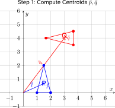
Lecture notes
This slide begins a worked example of the four-step point-to-point ICP recipe from slide 40, starting with Step 1: compute the centroids p bar and q bar.
The plot shows x-y axes from minus 1 to 6. The blue source cloud P is a small triangle with vertices at (1, 0), (2, 0) and (1.5, 2). The red target cloud Q is the same triangle, rotated and moved up and to the right, with vertices near (1.67, 4), (3.67, 4.5) and (3.67, 3.5). A blue arrow runs from the origin to p bar and a red arrow from the origin to q bar. The red arrow happens to pass through P's top vertex at (1.5, 2), but that point is not on Q.
The centroid is the average of the points: p bar = (1/N) * sum of p_i, which is exactly np.mean(A, axis=0) in the code on slide 41. For P, p bar = ((1+2+1.5)/3, (0+0+2)/3) = (1.5, 0.67). For Q, q bar = ((1.67+3.67+3.67)/3, (4+4.5+3.5)/3) = (3, 4).
The centroids matter because they separate translation from rotation. Once you know where each cloud's "center of mass" is, you can subtract it. What remains is a pure rotation problem, and the translation follows at the end from t = q bar - R*p bar.
Keep in mind that vanilla ICP assumes the correspondences are known: P's apex (1.5, 2) matches Q's left vertex (1.67, 4), and so on. In real LiDAR scans, you estimate these pairs with nearest neighbors, and a wrong pairing corrupts the centroids.
Next, you subtract these centroids to center both triangles at the origin.
43. Variant 1: Point-to-Point ICP (“Vanilla”) (14/21)
- Visualization of Step 2 conceptually centering both point clouds at the global origin to compute the cross-covariance matrix H using the relative positions of points to their respective centroids
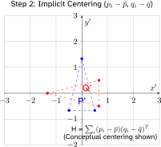
Lecture notes
This slide visualizes Step 2 of point-to-point ICP: centering both point clouds before building the cross-covariance matrix H. The plot uses centered axes x prime and y prime from minus 3 to 3. Both triangles from the previous slide now have their centroids at the origin. Blue P prime points up, with vertices near (0, 1.33), (minus 0.5, minus 0.67) and (0.5, minus 0.67). Red Q prime points left, with vertices near (minus 1.33, 0), (0.67, 0.5) and (0.67, minus 0.5). The caption reads H = sum_i (p_i − p_bar)(q_i − q_bar)^T, "H equals the sum over all point pairs of p sub i minus p bar, times the transpose of q sub i minus q bar," marked as conceptual centering.
Subtracting each centroid removes the translation entirely, so only rotation is left. You can check this here: rotating P prime 90 degrees counterclockwise maps (x, y) to (−y, x), and that lands exactly on Q prime. The centering is "implicit" because the code never moves the clouds. It only computes AA = A − centroid_A and BB = B − centroid_B, then H = AA.T @ BB. Each pair adds an outer product, a 2 by 2 matrix in 2D. For this triangle H works out to [[0, 0.5], [−8/3, 0]], which encodes how the two shapes are rotated relative to each other.
A common mistake is letting the order of p_i and q_i drift apart, or swapping the transpose. H depends on correct correspondences, and reversing it flips the rotation you recover.
Next, you take the SVD of H to extract that rotation.
44. Variant 1: Point-to-Point ICP (“Vanilla”) (15/21)
- Visualization of Step 3 SVD decomposition , showing the orthogonal singular vectors U and V as principal axes in the centered frames of reference for P and Q respectively, with illustrative singular values indicating the scale of variance along these directions.
![Two side-by-side plots of centered triangles. In P-space, a tall triangle with its apex at about (0, 1.3) and base vertices near (±0.5, −0.65) has u sub 1 (sigma sub 1) pointing up the y sub P axis, along its long dimension, and the shorter u sub 2 (sigma sub 2) pointing along positive x sub P. In Q-space, the same triangle appears rotated about 90 degrees, with its apex at about (−1.3, 0). v sub 1 points along negative x sub Q toward that apex, and v sub 2 points along negative y sub Q, so the matching axes reveal the rotation between frames.](L24-25_files/9fa5dccb0fef.svg)
Lecture notes
This slide shows Step 3 of point-to-point ICP: taking the singular value decomposition of the cross-covariance matrix H that you built on the previous slide. In words, H equals U times Sigma times V transpose, written H = U*Sigma*V^T.
There are two plots side by side. On the left, P-space shows the centered blue triangle pointing up, with its apex near (0, 1.3) and its base corners near (plus or minus 0.5, minus 0.65). A long black arrow, u_1 with singular value sigma_1, points up the y_P axis along the triangle's long dimension. A shorter arrow, u_2 with sigma_2, points along positive x_P. On the right, Q-space shows the same red triangle rotated about 90 degrees, with its apex near (minus 1.3, 0). There, v_1 points along negative x_Q toward that apex, and v_2 points along negative y_Q.
The key idea is that U holds the principal axes of the source cloud and V holds the matching axes of the target cloud. The singular values sigma_1 and sigma_2 measure how strongly the two clouds co-vary along each pair of axes. They tell you which direction is "long," but they do not enter the rotation. Matching u_1 to v_1 and u_2 to v_2 shows you the rotation between frames: "up" in P became "left" in Q.
One caution applies here. Singular vectors are only defined up to sign. If you multiply out the arrows exactly as drawn, V*U^T has determinant minus 1, which is a reflection, not a rotation. Your code must therefore check det(V*U^T). If it is minus 1, flip the sign of the last column of V before forming R.
Next, you use these axes to build the rotation R = V*U^T and apply it.
45. Variant 1: Point-to-Point ICP (“Vanilla”) (16/21)
- Visualizing Step 4 rotation part, showing how the rotation matrix R is conceptually applied to the centered point cloud P' to align its principal axes with those of centered Q', resulting in the rotated, centered shape P''.

Lecture notes
This slide shows the rotation half of Step 4 in point-to-point ICP. The plot is titled "Step 4: Rotation R, R = V U^T", read "R equals V times U transpose." The axes are x double prime and y double prime, running from minus 2 to 2, so we are still working in the centered frame from Step 2.
A faint purple triangle is the centered source P'. It points up, with its apex near (0, 1.33) and its base corners near (minus 0.5, minus 0.67) and (0.5, minus 0.67). A curved cyan arrow labeled "R (on centered)" sweeps 90 degrees counterclockwise. It ends at a cyan triangle labeled P'' = R(P'), read "P double prime equals R applied to P prime." That triangle now points left, with its apex near (minus 1.33, 0) and corners near (0.67, plus or minus 0.5). This is exactly the centered target Q' from slide 43.
Here is where R comes from. In Step 3 we took the SVD of the cross-covariance H, giving H = U * Sigma * V^T. U holds the principal axes of P', and V holds the matching axes of Q'. The product V U^T maps each source axis onto its target axis. For this example, R = [[0, -1], [1, 0]], which is a 90 degree counterclockwise rotation. You can check it: (0, 1.33) maps to (minus 1.33, 0).
A common mistake is the order of the product. With H defined as the sum of (p_i - p_bar)(q_i - q_bar)^T, the rotation is V U^T, not U V^T. Also check that det(R) = +1. If det(R) = -1, the SVD has produced a reflection, and you fix it by flipping the sign of the last column of V.
Because we rotated about the origin of the centered frames, the shapes now agree but sit in the wrong place. The next slide computes the translation t that fixes this.
46. Variant 1: Point-to-Point ICP (“Vanilla”) (17/21)
- Visualizing the Step 4 translation vector calculation . The vector t shifts the rotated source centroid directly to the target centroid . Conceptual perfect shape alignment (cyan filled triangle) is shown centered on , aligning with the original Q shape.
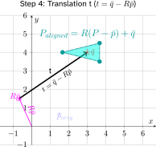
Lecture notes
This slide completes Step 4 of point-to-point ICP: after finding the rotation R on the previous slide, you now compute the translation t. The title reads "Step 4: Translation t, t = q_bar - R*p_bar," that is, t equals the target centroid q bar minus R times the source centroid p bar.
The plot shows x and y axes from about minus 1 to 6. A faint purple star marks the original source centroid, p bar orig, near (1.5, 0.6). A magenta arrow runs from the origin to R*p_bar at about (-0.6, 1.5). This is where the source centroid lands when the 90 degree counterclockwise rotation is applied about the origin. A black arrow labeled t then runs from the tip of R*p_bar to the target centroid q bar, marked with a red star at (3, 4). A cyan filled triangle with vertices near (1.7, 4), (3.7, 4.5) and (3.7, 3.5) is centered on q bar. It is labeled P_aligned = R*(P - p_bar) + q_bar, the source shape perfectly overlaid on the original Q shape.
Here is why t is not simply q_bar minus p_bar. R rotates points about the origin, not about the centroid, so rotating the whole cloud also swings its centroid to R*p_bar. The translation has to start from that rotated position. In numbers, t = (3, 4) - (-0.6, 1.5) = (3.6, 2.5). Expanding the label gives P_aligned = R*P + t, the familiar rigid transform.
A common mistake is to use q_bar - p_bar in code. That aligns the centroids only when R is the identity.
Quick check: if R were the identity, what would t reduce to?
Next, you see that the hidden cost of ICP is not this math at all but the correspondence search in Step 1.
47. Variant 1: Point-to-Point ICP (“Vanilla”) (18/21)
The hidden costs the biggest problem is actually the first step!
- For N source points and M target points, naïve nearest-neighbor search is
-
- Just check for each points between each point
- Solution:
-
- Preprocess the target cloud into a k-d tree, binary space portioning structure construction time
- K-d nearest-neighbor lookup drops to per query! A major speedup!
- Almost every ICP implementation in ROS, PCL and Open3D uses K-D trees internally!
Lecture notes
This slide steps back from the math of the last few slides and asks where point-to-point ICP actually spends its time. The headline reads: the hidden cost, and the biggest problem, is actually the first step. That first step is finding correspondences, matching every source point to its nearest target point.
The slide's first bullet: for N source points and M target points, naive nearest-neighbor search is O(N times M), read "order N times M." You simply compare every source point against every target point. The rotation and translation from the SVD step are cheap by comparison. As a concrete example, if both scans have 10,000 points, that is 100 million distance checks, and ICP repeats this every iteration.
The solution on the slide is to preprocess the target cloud into a k-d tree. A k-d tree is a binary space-partitioning structure: it recursively splits space in half along one coordinate axis at a time, so the points end up organized into nested regions. Building it costs O(M log M). After that, each nearest-neighbor lookup drops to O(log base 2 of M) per query, so one correspondence pass costs about N log M instead of N times M. For our 10,000-point example, log base 2 of 10,000 is about 14, giving roughly 140,000 operations instead of 100 million. That log M figure is the typical case; very unevenly distributed points can make queries slower.
A detail that makes this work well: the target cloud never moves during ICP, only the source does. So you build the tree once and reuse it for every iteration.
The slide closes by noting that almost every ICP implementation in ROS, PCL and Open3D uses k-d trees internally. The next slide is a short video showing how a k-d tree is built and searched.
48. Variant 1: Point-to-Point ICP (“Vanilla”) (19/21)
YouTube video: KD Tree (Marius Juston)
Lecture notes
This slide plays a short YouTube video, "KD Tree" by Marius Juston, that animates the k-d tree from the previous slide. On the right, a square of colored points is split again and again by vertical and horizontal lines into smaller cells. A yellow query point sits near the bottom, with its current cell outlined in yellow. On the left, the search path runs down the tree through nodes labeled R, D, L, D, R, with the best distance so far shown as min d = 0.96.
As you watch, notice that the search only visits the cells that could hold a closer point. That pruning is why each nearest-neighbor query costs about O(log M) instead of checking all M target points.
Next, we see where point-to-point ICP still fails, even with fast correspondences.
49. Variant 1: Point-to-Point ICP (“Vanilla”) (20/21)
Imagine a robot driving straight down a long, flat, featureless corridor!
- The left and right walls look geometrically identical at timestep and timestep
- P2P matches each source point to its nearest target point - but that's sideways, not forward!
What does the algorithm conclude?
'I haven't moved forward at all' and locks the map in place
The fundamental problem: P2P cannot distinguish 'slide along a wall' from 'did not move'
Lecture notes
This slide is all text and poses a thought experiment. The title is "Variant 1: Point-to-Point ICP ('Vanilla')." It reads: imagine a robot driving straight down a long, flat, featureless corridor. The left and right walls look geometrically identical at timestep t and timestep t+1. Point-to-point ICP, or P2P, matches each source point to its nearest target point, but that match is sideways, not forward. The slide then asks what the algorithm concludes, and answers: "I haven't moved forward at all," so it locks the map in place. The final line states the fundamental problem: P2P cannot distinguish "slide along a wall" from "did not move."
On the last slides you made the nearest-neighbor step fast with a k-d tree. Fast is not the same as correct, though. In a corridor the LiDAR samples each wall as a row of evenly spaced points. When you drive forward by delta x, the new scan is another row of points on the same straight wall. For each new point, the closest old point is simply the neighbouring sample directly beside it, roughly perpendicular to the wall, not the true point delta x behind it. So the residuals carry almost no information along the corridor. The least-squares solution then puts the forward translation near zero, and the scan snaps back onto the old points.
This kind of geometry is called degenerate: the environment does not constrain one degree of freedom. If you trusted ICP alone here, your robot's pose would stall while the wheels keep turning, and the map would smear.
Quick check: would a doorway or a box on one wall fix this? Partly, because any feature that breaks the symmetry adds a forward constraint. The next slide shows this failure as a figure, and Variant 2 fixes it by matching to lines.
50. Variant 1: Point-to-Point ICP (“Vanilla”) (21/21)
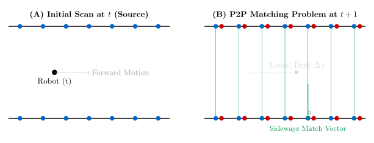
Lecture notes
This slide turns the corridor thought experiment from the previous slide into a picture. It has two panels side by side.
Panel A, "Initial Scan at t (Source)", shows two horizontal black lines for the corridor walls. Each wall carries seven evenly spaced blue dots, the LiDAR scan points at time t. A black dot labeled "Robot (t)" sits midway between the walls, with a gray arrow pointing right labeled "Forward Motion".
Panel B, "P2P Matching Problem at t+1", shows the same two walls. Each blue point now has a red point just to its right: the new scan, shifted along the wall by the robot's true motion. A dashed gray arrow labeled "Actual Drift delta x" points right, along the corridor. Thin green vertical lines cross the corridor at every point pair. One is highlighted with a right-angle marker where it meets the bottom wall and is labeled "Sideways Match Vector".
The green lines carry the key idea. The only direction point-to-point ICP can measure reliably is perpendicular to the walls. Along the wall, every point looks like every other point, so the forward error is ambiguous. In a real featureless corridor, the new scan looks essentially identical to the old one, and the lowest-error answer is delta x = 0. ICP then concludes "I didn't move" even though the robot drove forward by delta x. Forward translation is unconstrained, not merely noisy.
A common mistake is to blame the KD-tree search from the earlier video. The nearest-neighbor search works fine. The problem is the cost function, which treats a point sliding along the wall as an error to be removed.
Quick check: which direction does ICP still constrain well in this corridor? The answer is the sideways direction, which sets up point-to-line ICP next.
51. Variant 2: Point-to-Line ICP (PL-ICP) (1/3)
The key insight is this, in 2D the world is mostly made of line segments (wall, doors, edges of boxes)
Instead of matching a source point to a single target point, match it to the nearest target LINE
For each target line segment, compute the unit normal , (perpendicular to the near wall)
Only the component of the error PERPENDICULAR to the wall is penalized
A robot can now slide freely along a smooth corridor with the algorithm resisting it!
Lecture notes
This slide is text only, with five statements that introduce the second ICP variant, Point-to-Line ICP, or PL-ICP. First, in 2D the world is mostly made of line segments: walls, doors, and the edges of boxes. Second, instead of matching a source point to a single target point, you match it to the nearest target line. Third, for each target line segment you compute the unit normal n_i, a vector of length one perpendicular to the nearby wall. Fourth, only the component of the error perpendicular to the wall is penalized. Fifth, the robot can now slide freely along a smooth corridor. The slide reads "with the algorithm resisting it," but the intended meaning is without the algorithm resisting that sliding, as the next slide states explicitly.
This directly fixes the corridor failure from the last two slides. Point-to-point ICP pulled each scan point toward a specific wall point, so the match vectors ran sideways and forward motion looked like "no motion." Point-to-line ICP asks only how far each point is from the wall surface, not from a particular point on it. Measuring along the normal, the error for source point p_i matched to target point q_i becomes n_i dot (R*p_i + t - q_i). Here R is the rotation and t is the translation being estimated. Any displacement along the wall is perpendicular to n_i, so it adds zero error and no longer drags the estimate backward.
A common mistake is to think PL-ICP measures forward motion in a featureless corridor. It does not. It simply stops fighting the true motion, and odometry or other features still supply the along-wall information.
Next, you see how this residual is linearized into ordinary least squares.
52. Variant 2: Point-to-Line ICP (PL-ICP) (2/3)
- Residual = projection of onto the surface normal nᵢ
- Motion parallel to the wall contributes ZERO error - the algorithm doesn't resist it, it just slides on the line
- For high-frequency LiDAR, the angle between consecutive scans is tiny, so we linearize, based on
- This turns a hard non-linear problem into ordinary linear least squares!
Parallel motion = zero error,
Perpendicular motion = penalty,
Lecture notes
This slide turns the point-to-line idea from the previous slide into math. Text at the top says the residual is the projection of R*p_i + t - q_i onto the surface normal n_i. Motion parallel to the wall contributes zero error: the algorithm does not resist it, it just slides along the line. For high-frequency LiDAR the rotation between consecutive scans is tiny, so we linearize, and this turns a hard nonlinear problem into ordinary linear least squares. The centered equation reads: E of R and t equals the sum over i of the squared quantity (R*p_i + t - q_i) dot n_i, or E(R,t) = sum_i ((R*p_i + t - q_i) · n_i)^2. Below it: parallel motion gives zero error, x · n_i = 0; perpendicular motion is penalized, x · n_i = x.
Here p_i is a source point, q_i is its matched target point, and n_i is the unit normal of the target line at q_i. The dot product keeps only the part of the error that points straight out of the wall. That is exactly why the corridor failure from vanilla ICP goes away: points no longer get dragged sideways toward specific wall points.
A note on the slide's linearization line: the correct small-angle approximation is sin(theta) ≈ theta and cos(theta) ≈ 1. Setting sin(theta) = 1 would be wrong. With this approximation, R*p_i ≈ p_i + theta*[-p_iy, p_ix]. Each residual becomes linear in the three unknowns t_x, t_y and theta. You stack the residuals into A*x = b and solve once with the normal equations, then re-match and repeat.
Quick check: in a long, featureless corridor, which component of motion does PL-ICP still fail to constrain? Next we walk through these steps on a worked plot.
53. Variant 2: Point-to-Line ICP (PL-ICP) (3/3)
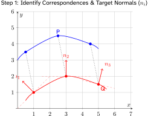
![Plot, Step 5 of point-to-line ICP, apply transform and update, then iterate. The scan's original position, a faint blue curve between y equals 3 and 4.5, has been transformed down onto the red reference curve, whose points are at (1, 1), (3, 2) and (5, 1.5) with faint tangent lines through them. The aligned cyan scan, P sub aligned, has points near (0.5, 0.5), (2.5, 2) and (4.5, 1.6) that lie on those tangent lines but not on the red points. A note reads: points align to structure, not necessarily exact pairs.](L24-25_files/2ac7952f21dd.svg)
Lecture notes
This slide shows point-to-line ICP as two plots side by side, the first and last steps of one iteration.
The left plot is Step 1: identify correspondences and target normals, n sub i. A blue source scan, labeled P, sits above a red target curve, labeled Q. Dotted gray lines pair each source point with its nearest target point: (0.5, 3.5) with (1, 1), (2.5, 4.5) with (3, 2), and (4.5, 4) with (5, 1.5). Each red target point has a faint dashed tangent line, the local "wall" segment. A red arrow perpendicular to that tangent marks its normal. n_1 points up and to the left, n_2 points straight up at the peak, and n_3 points up and slightly right.
The right plot is Step 5: apply the transform and update, then iterate. The original scan is now a faint blue ghost. The aligned scan, P_aligned, is drawn in cyan on top of the red curve, with points near (0.5, 0.5), (2.5, 2) and (4.5, 1.6). An orange note reads: "Points align to structure, not necessarily exact pairs."
The slide skips steps 2 to 4, which are the math from the previous slide. You compute each residual r_i = n_i^T * (R*p_i + t - q_i), the error projected onto the normal. You linearize the small rotation angle. Then you solve the resulting linear least-squares problem for R and t.
A common mistake is expecting the cyan points to land on the red dots. They don't need to. The point near (0.5, 0.5) lies on the tangent line through (1, 1), so its perpendicular error is zero even though it sits half a unit away from its partner.
Quick check: why does that offset along the tangent cost nothing?
Next, you take this idea from lines in 2D to planes in 3D.
54. Variant 3: Point-to-Plane ICP
How do you think this generalizes in 3D?
- In 3D, a plane is the natural generalization of a line (floor, ceiling, wall surface)
- Every target point qᵢ gets a surface-normal vector nᵢ computed from its local neighbors
- Error is projected onto nᵢ exactly as in PL-ICP, motion along the plane is free
- Converges in far fewer iterations than P2P in structured indoor environments (given that 3D structures provide more constraints / unique presentations)
Lecture notes
This slide is text only. It opens with a question for you: "How do you think this generalizes in 3D?" Four bullets answer it, extending the point-to-line idea from the last two slides into three dimensions.
Take a moment with the question first. In a 2D LiDAR scan, a wall shows up as a line. In a 3D point cloud, that same wall, along with the floor and the ceiling, is a surface. So the natural generalization of a line is a plane.
Each target point q_i gets a surface normal n_i, estimated from its neighboring points. A common method fits a plane to the nearest few points and takes the direction of least spread as the normal.
The error is then projected onto that normal, exactly as in PL-ICP. The residual for one pair is e_i = n_i dot (R*p_i + t - q_i), meaning the normal dotted with the transformed source point minus the target point. ICP minimizes the sum of e_i squared. Sliding along the plane costs nothing, and only motion off the surface is penalized. With the small-angle linearization you saw before, this again becomes ordinary linear least squares, now with six unknowns: three rotations and three translations.
The slide's last claim is that point-to-plane converges in far fewer iterations than point-to-point in structured indoor spaces. Walls, floors and corners provide many well-defined constraints.
Watch for one common mistake. Normals estimated from too few or noisy neighbors make the method unstable. Also, a single flat plane, or a long featureless corridor, leaves directions unconstrained.
Quick check: if every point lies on the floor, which motions can point-to-plane not detect?
Notice that this method trusts the target surface completely, which leads directly to Generalized ICP next.
55. Variant 4: Generalized ICP (GICP) (1/2)
What if BOTH clouds are noisy? We need uncertainty-aware matching.
- P2P assumes source points are perfect, P2Plane assumes target surfaces are perfect
- Reality: both clouds carry uncertainty - laser range noise, quantization, timing jitter
- GICP attaches a 2×2 (or 3×3) covariance matrix to every point in both clouds
- A point on a flat wall has a 'pancake' covariance: certain perpendicular, uncertain along the wall
- Alignment is now done in probability space, not distance space
Lecture notes
This slide is text only. The title is "Variant 4: Generalized ICP (GICP)," and the opening line asks: what if both clouds are noisy? We need uncertainty-aware matching. Five bullets follow.
Look back at the variants so far. Point-to-point ICP treats every point as exact and matches it to another exact point. Point-to-plane ICP trusts the target surface completely and only penalizes error along its normal. Neither is quite true. Both the source scan and the target scan come from a real LiDAR, so both carry laser range noise, quantization from finite angular and range resolution, and timing jitter while the robot moves during a sweep.
GICP handles this by attaching a covariance matrix to every point in both clouds. The matrix is 2 by 2 for a planar scan like ours and 3 by 3 in 3D. A covariance describes the shape of a point's uncertainty, not just its size.
Take a point on a flat wall. You are quite sure how far it is from the wall, so the uncertainty perpendicular to the wall is small. You have no real idea where along the wall that sample landed, so the uncertainty along the wall is large. That gives a "pancake" covariance: a thin, elongated ellipse in 2D or a flat disk in 3D.
Once every point is a small probability distribution, alignment is done in probability space rather than distance space. You look for the transform that makes the two sets of distributions agree best.
Quick check: what would a covariance for a point in the corner of a room look like? The next slide shows how the two covariances combine into one cost.
56. Variant 4: Generalized ICP (GICP) (2/2)
- Both source and target have covariances and - we combine them into a weighting matrix
- The resulting form unifies P2P (isotropic noise) and P2Plane (degenerate planar noise)!
- One framework, tunable for the specific sensor and environment you have
We minimize the “Mahalanobis distance” (just look it up, but it’s just the equation above).
![Two-panel figure. (A) Probabilistic surface modeling: a red source curve and a blue target curve, each with a point p sub i or q sub i surrounded by a thin ellipse elongated along the curve, its covariance C sub i sup p or C sub i sup q. (B) Plane-to-plane alignment: the transformed point T times p sub i is joined to q sub i by d sub i equals q sub i minus T p sub i. A larger combined ellipse shows the cost to minimize: d sub i transpose times the inverse of C sub i sup q plus R C sub i sup p R transpose, times d sub i.](L24-25_files/30d3b83396ad.svg)
Lecture notes
This slide completes Generalized ICP by giving its cost function. The text says both source and target have covariances, C_p and C_q, combined into one weighting matrix. The result unifies point-to-point and point-to-plane in one framework that you tune for your sensor and environment. The equation reads: E of R and t equals the sum over i of d_i transpose, times the inverse of (C_q_i plus R times C_p_i times R transpose), times d_i. In plain text, E(R,t) = sum_i d_i^T (C_q_i + R*C_p_i*R^T)^(-1) d_i, where the residual is d_i = q_i - (R*p_i + t). This quantity is the Mahalanobis distance: a squared distance measured in units of uncertainty.
The figure has two panels. Panel A, probabilistic surface modeling, shows a red source curve and a blue target curve. Each point carries a thin ellipse stretched along its curve, which is its covariance from the local neighborhood. Panel B, plane-to-plane alignment, shows the transformed source point T*p_i joined to q_i by the residual d_i, inside a larger combined ellipse. Because both ellipses are long along the surfaces, error along the planes costs little and the clouds can slide along each other.
Notice that the source covariance is rotated by R before it is added. Its orientation changes with the current pose estimate, so you recompute the combined covariance every iteration.
Check your understanding: set C_p = 0 and C_q = I. The cost becomes the sum of |d_i|^2, which is point-to-point ICP. Now keep C_p = 0 but make C_q tiny along the normal and huge along the plane. The cost approaches point-to-plane.
Next, NDT takes the covariance idea further and drops individual points altogether.
57. Variant 5: Normal Distributions Transform (NDT) (1/7)
Throw away points, keep distributions!
ICP spends most of its time on k-d tree nearest-neighbor lookups
NDT eliminates this entirely, no point-to-point matching ever happens
- Step 1: divide the target map into a regular 2D grid of voxels
- Step 2: for each voxel, compute a Gaussian (mean μ, covariance Σ) over its resident points
Scan matching becomes find the transformation that MAXIMIZES the scan's probability under this field
Lecture notes
This slide introduces the fifth and final variant in our scan-matching family: the Normal Distributions Transform, or NDT. The headline is "Throw away points, keep distributions!" It is text only, with no figure.
The motivation comes first. Every ICP variant we have seen, from vanilla point-to-point through GICP, spends most of its run time on nearest-neighbor lookups in a k-d tree, a data structure for finding the closest stored point to a query point. NDT removes that step entirely. No point is ever matched to another point.
The slide gives two steps. Step 1: divide the target map into a regular 2D grid of cells. The slide calls them voxels; in 2D they are just squares. Step 2: for each cell, fit a Gaussian to the points inside it. The mean is mu = (1/n) * sum of q_k, the average of the cell's points. The covariance is Sigma = (1/n) * sum of (q_k - mu)*(q_k - mu)^T, which describes how those points spread. A cell covering a straight wall gets a long, thin ellipse, much like GICP's "pancake" covariance on the last slide. The difference is that NDT stores one covariance per cell, not one per point.
The result is a smooth probability field laid over the map. Scan matching then becomes an optimization problem: find the rotation and translation that maximize the probability of the new scan's points under this field.
A common mistake is to build the grid from the incoming scan. The grid is built once, from the target (the map). The scan's points are only evaluated against it.
Quick check: why is looking up a point's cell cheaper than a k-d tree search? Next, we see how the score is computed and optimized.
58. Variant 5: Normal Distributions Transform (NDT) (2/7)
- For each source point pᵢ, evaluate the Gaussian of the cell it falls into
- Sum the log-probabilities (or negative probabilities) across all source points
- Use Newton's method to find the that maximizes this score
Advantage: no neighbor search.
Disadvantage: heavily tuned by the voxel size you choose.
Minimizing negative likelihood = maximizing the match probability
Lecture notes
This slide completes the NDT recipe. The previous slide built the target side: divide the map into a grid of cells and fit a Gaussian, with a mean mu and a covariance Sigma, to the points in each cell. Here you score the source scan against that field of Gaussians.
The slide lists three steps. First, for each source point p_i, evaluate the Gaussian of the cell it falls into. Second, sum the log-probabilities (or negative probabilities) across all source points. Third, use Newton's method to find the rotation R and translation t that maximize this score. The advantage is that there is no neighbor search. The disadvantage is that the result depends heavily on the voxel size you choose.
The centered equation reads: score of R, t equals minus the sum over i of e raised to the power of minus one half times (R*p_i + t - mu_i) transpose, times Sigma_i inverse, times (R*p_i + t - mu_i). In plain text: score(R,t) = -Σ_i exp(-1/2 * (R*p_i + t - mu_i)^T * Sigma_i^(-1) * (R*p_i + t - mu_i)).
The exponent is the same Mahalanobis distance you saw in GICP, but now it is measured to a cell's mean instead of to a matched point. Note that mu_i and Sigma_i belong to whichever cell the transformed point R*p_i + t lands in. Finding that cell is a simple index lookup, not a k-d tree search, and that is where NDT saves its time. Each exponential term is near 1 when the point sits on its cell's distribution and near 0 when it does not. The bottom line on the slide states it: minimizing negative likelihood is the same as maximizing the match probability.
Newton's method uses the gradient and the Hessian of this score with respect to R and t. Both can be derived analytically, so convergence is fast.
A common mistake is picking cells that are too small. They hold too few points, and the covariance becomes singular. Cells that are too large blur walls and corners together.
The next slides walk through these steps on a concrete 2D example.
59. Variant 5: Normal Distributions Transform (NDT) (3/7)
- The target point cloud (Q) is placed into a regular spatial grid (voxels in 3D, squares in 2D). Cells with fewer than a minimum number of points (e.g., 3 points) are usually ignored to prevent mathematical instability

Lecture notes
This slide is Step 1 of NDT: space subdivision, or voxelization. The plot shows a 2D x-y plane from 0 to 6, cut by dashed lines into a 3 by 3 grid of squares, each 2 units on a side. The red target point cloud Q, which is the map or reference scan you are matching against, forms a line. It rises diagonally from about (2.3, 2.3) to (3.7, 3.7), then runs roughly level near y = 2.8 from x = 4.3 to 5.7. The square spanning x 2 to 4, y 2 to 4 holds five points and is labeled Active Cell. The square to its right also holds five points. The bottom-left square has no points and is labeled Empty Cell.
The idea is that you never search for nearest neighbors. Instead, you first bin every target point into a regular grid: squares in 2D, cubes called voxels in 3D. Each cell is processed independently. Finding which cell a point belongs to is just integer division of its coordinates by the cell size, so it is very cheap.
Why ignore cells with too few points, for example fewer than 3? In the next step you fit a Gaussian to each cell, and scoring requires the inverse of its covariance matrix, Sigma^(-1). With one or two points in 2D, the covariance is singular, meaning it has zero spread in some direction, so it cannot be inverted. The same problem appears when points are nearly collinear, like the diagonal line here. Practical implementations therefore also inflate small eigenvalues of Sigma.
Recall from the last slide that the cell size heavily tunes NDT. With 2-unit cells, this diagonal fits neatly in one cell. Next, you compute each active cell's mean and covariance.
60. Variant 5: Normal Distributions Transform (NDT) (4/7)
- For every active cell, the sample mean and covariance matrix of the target points are calculated. This transforms the discrete point cloud into a piecewise continuous set of multi-variate Gaussian probability distributions (represented here by covariance ellipses).
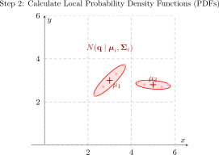
Lecture notes
Step 2 of NDT turns the occupied grid cells from the previous slide into local probability density functions. The plot shows the same x-y grid, 0 to 6 with 2-unit cells, and the target points Q drawn faintly. In the cell from x 2 to 4, y 2 to 4, the points run diagonally from about (2.3, 2.3) to (3.7, 3.7). Their mean, mu_1, is marked with a cross near (3, 3), and a tilted ellipse surrounds them along that diagonal. In the cell from x 4 to 6, the points lie nearly level around y = 2.8. Their mean, mu_2, sits near (5, 2.8), and their ellipse is flat and horizontal. The label above reads N(q | mu_i, Sigma_i), "the normal distribution of q given mean mu_i and covariance Sigma_i."
For each active cell with n points q_k, you compute the sample mean mu_i = (1/n) * sum of q_k. You then compute the sample covariance Sigma_i = (1/(n-1)) * sum of (q_k - mu_i)*(q_k - mu_i)^T. In 2D, Sigma_i is a 2 by 2 matrix. Its eigenvectors give the ellipse's axis directions, and its eigenvalues set how stretched the ellipse is along each axis. A wall segment therefore becomes a long, thin ellipse: it is confident across the wall and loose along it.
The point of this step is that you replace hundreds of discrete points with a smooth, differentiable surface. That is why NDT needs no nearest-neighbor search. This is also why the previous slide dropped cells with too few points. With fewer than three points, or with perfectly collinear ones, Sigma_i is singular and cannot be inverted. Real implementations often add a small regularization term to Sigma_i for the same reason.
Quick check: what would the ellipse look like for points scattered evenly across a cell?
Next, you project the source cloud P into this grid and score it against these Gaussians.
61. Variant 5: Normal Distributions Transform (NDT) (5/7)
- The source point cloud (P) is projected into the voxel grid using its initial, unoptimized transformation. We determine which spatial cell each source point falls into (or its nearest neighbors if using smoothed NDT).
![Plot of the NDT voxel grid, x and y from 0 to 6 with 2-unit cells. Six blue source points P form a shallow arc between y equals 4 and 5, from x equals 1.5 to 4.8. About two units below, two pink Gaussian ellipses mark the target distributions: one tilted diagonally in the cell x 2 to 4, y 2 to 4, and one flat and horizontal in the cell x 4 to 6, y 2 to 4. The point p sub k, at about (2.5, 5), is circled, with an arrow to the tilted ellipse labeled "Evaluate p of p sub k based" on that distribution. The initial pose leaves the source cloud misaligned above the target.](L24-25_files/ab8c79e39b85.svg)
Lecture notes
Step 3 of NDT, the Normal Distributions Transform: overlay the source cloud at its initial pose. The plot uses the same 0 to 6 grid of 2-unit cells as before, with the two pink Gaussian ellipses from Step 2 in the cells spanning y from 2 to 4. The left ellipse is tilted diagonally in the cell x 2 to 4, and the right one is flat and horizontal in the cell x 4 to 6. About two units above them, six blue source points P form a shallow arc from roughly (1.5, 4) up to (2.5, 5) and across to (4.8, 4.6). One point, p_k at about (2.5, 5), is circled. A dashed arrow runs from it down to the tilted ellipse, labeled "Evaluate p(p_k) based" on that distribution.
The initial pose is our best guess before any optimization, usually from wheel odometry, an IMU, or the previous scan-match result. We apply that rigid transform to every source point, then ask which target cell each point lands in. This is the NDT replacement for ICP's nearest-neighbor correspondence search. Instead of pairing points with points, each point is looked up in a grid, which is fast because finding a cell is just a division and a floor operation.
Notice that p_k actually sits in the cell x 2 to 4, y 4 to 6, which contains no target points. In basic NDT, that point would contribute nothing to the score. This is why smoothed NDT also evaluates the neighboring cells' Gaussians, giving the optimizer a useful pull even when the initial guess is off.
Quick check: what happens to NDT if the initial pose is so poor that most points land in empty cells? Next, we turn each lookup into a probability score.
62. Variant 5: Normal Distributions Transform (NDT) (6/7)
- NDT entirely drops discrete pairs. Instead, it evaluates the probability density of the target cell at the location of the transformed source point . The objective function is to maximize the sum of these probabilities for all source points across the grid.
![Plot of NDT score evaluation, zoomed on cell 1 (x and y from about 2 to 4). Nested red ellipses show the cell's Gaussian, centered at mean mu sub i at (3, 3) and elongated diagonally from lower left to upper right. The transformed point x prime sub i equals T of p sub i comma u sits near (2.4, 3.8), linked to the mean by the vector x prime sub i minus mu sub i. It lies across the narrow axis, outside the contours, so its density is low. Score: s of p sub i is proportional to exp of minus one half times (x prime sub i minus mu sub i) transpose times Sigma sub i inverse times (x prime sub i minus mu sub i).](L24-25_files/9fce9f2c8681.svg)
Lecture notes
This slide shows Step 4 of NDT, score evaluation, zoomed in on cell 1, the square from about x = 2 to 4 and y = 2 to 4. Nested red ellipses show that cell's Gaussian. It is centered at the mean mu_i at (3, 3) and stretched diagonally from lower left to upper right. A blue dot near (2.4, 3.8) is the transformed source point, x'_i = T(p_i, u): source point p_i moved by the current transformation guess u. A blue arrow from the dot to the mean is labeled x'_i minus mu_i. A box gives the score contribution: s(p_i) is proportional to exp of minus one half times (x'_i - mu_i) transpose times Sigma_i inverse times (x'_i - mu_i).
On the last slide you dropped each source point into a cell. Now you score it. NDT drops discrete point pairs entirely. There is no nearest-neighbour search. Instead, you read the target cell's probability density at the point's location. The quadratic term in the exponent is the squared Mahalanobis distance, a distance scaled by the covariance. Being off along the ellipse's long axis costs little. Being off across the narrow axis costs a lot.
That is exactly the situation here. The point's ordinary Euclidean distance from the mean is only about 1.0, the square root of 0.6^2 + 0.8^2. But it sits across the narrow axis, outside every contour, so its score is low. A common mistake is to assume that a closer point always scores higher. The orientation of the ellipse matters.
The objective adds these scores over all source points across the grid and maximizes the sum with respect to u. A quick check: which way could this point move to raise its score fastest? Next, Newton's method uses the gradient and Hessian of this smooth sum to make that update.
63. Variant 5: Normal Distributions Transform (NDT) (7/7)
- An optimization algorithm (typically Newton's Method) calculates the Hessian and gradient of the objective function to update the transformation parameters (rotation and translation). The source cloud "falls" into the high-probability valleys defined by the target's Gaussian mixture.
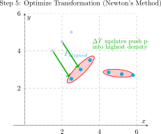
Lecture notes
This is Step 5 of the Normal Distributions Transform, or NDT: optimize the transformation with Newton's method. The plot uses the same x–y grid from 0 to 6. Faint source points sit up and to the left at about (1.5, 4), (2, 4.5) and (2.5, 5). Green arrows labeled delta T carry them down and to the right into the tilted red Gaussian ellipse, which runs from about (2.5, 2.5) to (3.5, 3.5). The aligned points, labeled P sub aligned, now sit on that ellipse. The second, nearly horizontal ellipse holds target points near y = 2.7, between x = 4.5 and 5.8. The green caption says the delta T updates push points into the highest density.
On the last slide you built the score: the sum over all source points of exp(-1/2 * (x'_i - mu_i)^T * Sigma_i^(-1) * (x'_i - mu_i)). Here you maximize it over the pose parameters u. In 2D, u = (t_x, t_y, theta). Because every term is a smooth Gaussian, you can write the gradient g and the Hessian H of the score analytically, with no nearest-neighbor search.
Each Newton iteration solves H * delta_u = -g and then updates u = u + delta_u. You re-transform the points, re-check which cells they fall in, and repeat until delta_u is tiny.
Watch the wording: the slide says "valleys" because solvers usually minimize the negative score. Valleys of the cost are the peaks of the probability density.
Quick check: why does the smooth density give NDT a wider basin of attraction than ICP's discrete pairs? Hold that thought, because the next slide compares when to use NDT and when to use ICP.
64. NDT vs ICP - when to use which
- Cartographer (2D indoor) uses ICP-style. Autoware (3D outdoor) uses NDT. The sensor determines the algorithm.
ICP FAMILY
- Best for small point clouds (< 5,000 pts)
- Very accurate when features are strong
- Needs a good initial guess
- k-d tree dominates runtime
- Gold standard for 2D indoor SLAM
- Struggles with smooth, flat, featureless areas
NDT
- Best for dense 3D clouds (> 50,000 pts)
- Smooth cost landscape - larger basin of attraction
- Less sensitive to a bad initial guess
- No k-d tree needed - very fast
- Common in outdoor autonomous vehicles
- Accuracy capped by voxel resolution
Lecture notes
This slide is a side-by-side comparison of the two scan-matching approaches we just covered. The title is "NDT vs ICP, when to use which." A single line across the top says that Cartographer, a 2D indoor SLAM system, uses ICP-style matching, while Autoware, a 3D outdoor autonomous-driving stack, uses NDT. The takeaway is that the sensor determines the algorithm.
The left box, ICP family, lists six traits. It is best for small point clouds, under 5,000 points. It is very accurate when features are strong. It needs a good initial guess. The k-d tree dominates its runtime. It is the gold standard for 2D indoor SLAM. It struggles with smooth, flat, featureless areas.
The right box, NDT, mirrors them. It is best for dense 3D clouds, over 50,000 points. It has a smooth cost landscape and a larger basin of attraction. It is less sensitive to a bad initial guess. It needs no k-d tree, so it is very fast. It is common in outdoor autonomous vehicles. Its accuracy is capped by the voxel resolution.
Why the split? ICP must find a nearest neighbor for every source point. That search uses a k-d tree, a space-partitioning structure for fast lookup, and with huge clouds the search dominates the cost. NDT replaces the points with one Gaussian per voxel, so evaluating a point is just a cell lookup plus the exponential score from the previous slide. Those overlapping Gaussians make the cost surface smooth. The "basin of attraction" is the range of starting guesses from which the optimizer still reaches the correct alignment, and smoother means wider. The trade-off is that detail finer than a voxel is averaged away.
Your robot carries a 2D LiDAR producing a modest number of points per scan in an indoor lab, which is squarely ICP territory. Quick check: which column's last bullet sets up the next slide on what still breaks?
65. ICP Family Failure Modes - What Still Breaks
Featureless environments (long smooth tunnels, empty parking lots)
- no geometric handle, huge amount of drift at the end, essentially just relies on odometry
Symmetric environments (hallway intersections that all look identical)
- perceptual aliasing, unknown rotation / translation
Large initial guess errors (>30°)
- any ICP will converge to a wrong local minimum
Dynamic environments with moving objects
Glass, mirrors, and retroreflectors
- The LiDAR returns the wrong values
Lecture notes
This slide is text only, with no figures. It lists five situations where the whole ICP family, including the NDT variant you just saw, still fails, each with a short explanation.
First, featureless environments, such as long smooth tunnels or empty parking lots. The scan has no geometric handle: sliding the scan along a smooth tunnel wall barely changes the matching cost. The alignment is unconstrained in that direction, so the robot essentially relies on odometry alone and accumulates a huge amount of drift by the end.
Second, symmetric environments, such as hallway intersections that all look identical. This is called perceptual aliasing: different places produce the same scan. ICP then cannot determine the true rotation or translation.
Third, large initial guess errors, roughly more than 30 degrees. The ICP cost function is not convex, so any ICP variant will converge to a wrong local minimum. This is why a good initial guess from odometry matters.
Fourth, dynamic environments with moving objects. ICP assumes the world is static. A person walking past gives points that match nothing in the map and pull the alignment off.
Fifth, glass, mirrors, and retroreflectors. The LiDAR returns wrong values here. Glass can let the beam pass through, mirrors place phantom walls behind them, and retroreflectors can return distorted ranges.
Notice the common thread: ICP commits to one best answer and cannot tell you when it is wrong. That motivates the next topic, probabilistic localization with Monte Carlo methods.
66. Monte Carlo estimates
Lecture notes
This is a section title slide reading "Monte Carlo estimates" in large white text on the dark blue Grainger Engineering background, with faint hand-drawn equation sketches behind it.
The previous slide listed where the ICP family still breaks: featureless spaces, symmetric hallways, large initial errors, and moving or reflective objects. This section answers those failures. Instead of committing to one best pose, you keep many weighted guesses, called samples or particles. That is the core of Monte Carlo localization, also known as the particle filter.
67. Why Deterministic ICP Isn’t Always Enough
ICP commits to a single best estimate, so if that estimate is wrong (wrong initialization, symmetric environment), ICP can’t tell you how wrong.
Real scenarios demand multiple simultaneous hypotheses
Given that corridors / floors look similar, a robot could be in Aisle 3 or Aisle 5 or on floor 1 vs floor 2, etc…
You also have the ‘kidnapped robot’, if you lift the robot and drop it elsewhere (like how you do it in lab, where you pick up the robot to take it out of the center area) ICP collapses!
We thus needs an algorithm that maintains and updates a full probably distribution over the available poses!
This is where the Monte Carlo Localization, also known as the Particle Filter!
Lecture notes
This slide is text only, with no figures. It argues that ICP, for all its variants, has a structural limitation: it commits to a single best estimate of the robot's pose. If that estimate is wrong, because of a bad initial guess or a symmetric environment, ICP cannot tell you how wrong it is or what the alternatives might be.
The slide then states that real scenarios demand multiple simultaneous hypotheses. Corridors and floors often look alike, so the robot could equally be in Aisle 3 or Aisle 5, or on floor 1 versus floor 2. This is the perceptual aliasing failure mode from the previous slide. A single pose estimate has to pick one answer and hope.
The slide also introduces the kidnapped robot problem. If you lift the robot and set it down somewhere else, ICP collapses. You do exactly this in lab when you pick up the robot to take it out of the center area. ICP assumes the new pose is close to the old one, so a sudden jump violates its initial guess and it converges to a wrong local minimum.
The conclusion is that you need an algorithm that maintains and updates a full probability distribution over possible poses, not just one point. With a distribution, you can keep several candidate locations alive until sensor data rules some out. That algorithm is Monte Carlo Localization, also called the particle filter.
Quick check: in a hallway with four identical intersections, how many peaks would you expect the pose distribution to have?
Next, you see why computing that distribution exactly is intractable, starting from the recursive Bayes filter.
68. Monte Carlo Localization – The Idea (1/13)
Given a continuous space, we want to compute the probability that we are at a specific location.
The problem?
It is intractable to generate an exact distribution of the full space for a continuous domain!
To understand where we are we make use of the recursive Bayes filter:
All this is saying is “given my previous location, I have now moved and given the sensor measurement, what is the probability I am at a location?”.
This problem of intractable integration is extremely common is lots of fields such as machine learning and robotics ( this is the underlying process of the unscented Kalman filter as well)
Lecture notes
This slide introduces the math behind Monte Carlo Localization. The goal: in a continuous space, compute the probability that the robot is at any specific location. The catch, stated on the slide, is that building an exact probability distribution over a continuous space is intractable.
The tool is the recursive Bayes filter, shown as an equation. Read aloud: the belief at time t, bel(x_t), equals the sensor likelihood p(z_t | x_t), times the integral over x_(t-1) of the motion model p(x_t | u_t, x_(t-1)) times the previous belief bel(x_(t-1)). All of that is divided by the same expression integrated over every possible x_t. In plain text: bel(x_t) = p(z_t|x_t) * ∫ p(x_t|u_t,x_(t-1)) bel(x_(t-1)) dx_(t-1) / ∫ p(z_t|x_t) ( ∫ p(x_t|u_t,x_(t-1)) bel(x_(t-1)) dx_(t-1) ) dx_t.
Red boxes and arrows link each term to a phrase in the sentence below the equation. bel(x_(t-1)) is "previous location." The motion model p(x_t | u_t, x_(t-1)), where u_t is the odometry or command, is "moved." p(z_t | x_t), where z_t is the LiDAR scan, is "sensor measurement." bel(x_t) is "probability I am at a location."
Put together, the equation says: given where I was, how I moved, and what I now see, where am I likely to be?
The difficulty is those integrals. Over x, y and theta they have no closed form for a real map. Intractable integrals like this appear throughout robotics and machine learning. The unscented Kalman filter faces the same problem and handles it by propagating a small set of sigma points.
The next slide splits this equation into prediction, correction and normalization. After that, you see how particles replace the integrals with samples.
69. Monte Carlo Localization – The Idea (2/13)
The Prediction:
This calculates where the robot thinks it is based on its last position () and the movement command (). It requires integrating over every possible state at time
The Correction:
This adjusts the prediction based on actual sensor measurements ().
The Normalization
This is the "intractable" part. It requires integrating over every possible state at time to ensure the resulting belief is a valid probability.
Lecture notes
This slide breaks the recursive Bayes filter from the previous slide into its three pieces: prediction, correction, and normalization. Each piece has one equation and a one-line explanation.
The prediction is written bel-bar(x_t) = integral of p(x_t | u_t, x_(t-1)) * bel(x_(t-1)) dx_(t-1). In words: the predicted belief at time t, written "bel with a bar over it," equals the integral, over every previous state, of the motion model times the old belief. The motion model p(x_t | u_t, x_(t-1)) is the probability of landing at x_t given that you were at x_(t-1) and applied the movement command u_t. On our robot, u_t comes from the wheel encoder odometry. Because you don't know exactly where you were, you add up every possible previous pose, weighted by how much you believed in it. That means integrating over every possible state at time t minus 1.
The correction is p(z_t | x_t) * bel-bar(x_t). This multiplies the prediction by the sensor likelihood: how probable the actual measurement z_t, such as a LiDAR scan, is if you were really at x_t. Poses that explain the scan well get boosted.
The normalization is the integral of p(z_t | x_t) * bel-bar(x_t) dx_t. You divide the corrected belief by this value so it sums to one, which gives bel(x_t). The slide flags this as the "intractable" part, because it needs an integral over every possible state at time t across a continuous space.
A common mistake is mixing up bel-bar, the belief after motion but before the measurement, with bel, the belief after the measurement.
Quick check: in a continuous space, why can't you just evaluate these integrals directly? Next, you'll see how sampling particles replaces them.
70. Monte Carlo Localization – The Idea (3/13)
Instead of doing an integration we can sample the world!
We disperse around the world a “particle”.
A “particle” is a single hypothesized pose: (xᵢ, yᵢ, θᵢ) with weight wᵢ
- Spawn 500-5000 particles randomly across the known map at startup
- Each tick: move every particle by the odometry estimate (plus noise)
- Then: weight each particle by how well its simulated LiDAR matches the real LiDAR
- Finally: resample, particles with high weight duplicate, particles with low weight die
Lecture notes
This slide gives the core idea of Monte Carlo Localization. It is text only, with three opening statements and a numbered list of four steps.
The slide opens with "Instead of doing an integration we can sample the world!" On the previous slide you saw that the recursive Bayes filter needs integrals over every possible state, and for a continuous space those are intractable. Monte Carlo methods avoid the integral. Instead of computing the full probability distribution, you represent it with many samples, and where the samples are dense, the probability is high.
Each sample is called a particle. A particle is a single hypothesized pose (x_i, y_i, theta_i), read as "x sub i, y sub i, theta sub i," with a weight w_i that says how believable that guess is.
The four steps on the slide are:
1. Spawn 500 to 5000 particles randomly across the known map at startup. This covers the case where the robot has no idea where it is.
2. Each tick, move every particle by the odometry estimate plus noise. The noise keeps the cloud honest about wheel slip and drift.
3. Weight each particle by how well the LiDAR scan simulated from its pose matches the real LiDAR scan.
4. Resample. High-weight particles duplicate and low-weight particles die, so the cloud concentrates on poses consistent with the measurements.
A common mistake is leaving out the motion noise. Without it, all the particles collapse onto identical copies and the filter cannot recover when odometry drifts.
Quick check: why does using more particles improve accuracy but cost computation?
Next, these steps are formalized as predict, update, resample and estimate.
71. Monte Carlo Localization – The Idea (4/13)
1
Predict (Motion)
Apply the odometry motion model to every particle, adding process noise to reflect drift uncertainty.
2
Update (Measurement)
For each particle, simulate what the LiDAR would see from that pose.
Compute weight wᵢ as the likelihood of the real scan given the simulated one.
3
Resample
Draw N new particles from the old set, with probability proportional to weight.
High-weight particles duplicate; low-weight particles vanish.
4
Estimate
The mean (or mode) of the surviving particles is the current best pose estimate.
The spread of the cloud is the uncertainty.
Lecture notes
This slide shows four cards in a row, numbered 1 to 4, one per step of the Monte Carlo Localization loop. Together they turn the sampling idea from the previous slide into an algorithm you run every control tick.
Card 1, Predict (Motion): apply the odometry motion model to every particle and add process noise to reflect drift uncertainty. The noise matters. Without it, every copy of a particle moves identically, and the filter cannot represent the fact that wheel odometry drifts.
Card 2, Update (Measurement): for each particle, simulate what the LiDAR would see from that hypothesized pose, using the known map. Then compute its weight, w_i, as the likelihood of the real scan given the simulated one. A particle whose predicted scan matches reality gets a large weight. This step replaces the correction term from Bayes' rule.
Card 3, Resample: draw N new particles from the old set, with probability proportional to weight. High-weight particles duplicate, and low-weight particles vanish. Before you draw, normalize the weights so they sum to one. That normalization is the cheap stand-in for the intractable normalization integral we just discussed.
Card 4, Estimate: the mean, or the mode, of the surviving particles is your best pose estimate, and the spread of the cloud is your uncertainty. A tight cluster means you are confident. A wide or split cloud means you are not.
A common mistake is to report the mean when the cloud has two clusters. The average can land between them, in a place where no particle sits.
Next, you will watch this loop run, starting from particles spread uniformly across the whole map.
72. Monte Carlo Localization – The Idea (5/13)

Lecture notes
This slide is the first frame of an animated walkthrough of Monte Carlo localization. Its plot title reads "Slide 1: Global Initialization", with the equation bel(x_0) = 1/|X|, read "the belief of the initial state x zero equals one over the size of the state space X."
The plot shows a 10 by 10 meter map with X-position and Y-position in meters. Three gold stars mark landmarks at (2, 8), (8, 8) and (8, 2). About a thousand blue particles fill the map uniformly. Each is drawn as a small arrow, because a particle is a full pose (x, y, theta) and its heading is random. An orange-red arrow near (2, 2), pointing up and to the right, is the true robot pose. A black arrow near the center, around (5, 4.5) and pointing down and to the right, is the estimated pose, computed as the mean of all particles. A legend in the lower left identifies these four symbols.
The key idea is that the robot starts with no idea where it is. A uniform belief, 1/|X|, says every position and heading on the map is equally likely. Here |X| is the total "volume" of possible poses: map area times the 2*pi range of heading. Sampling particles uniformly is how you represent that flat belief. This setup is called global localization.
Notice that the mean lands near the map center even though the robot is in a corner. When the cloud is this spread out, the mean is meaningless. A common mistake is to trust the reported pose before the particle cloud has converged, so always check the spread first.
Next, you apply the first of the four steps from the previous slide: predict, by moving every particle with odometry.
73. Monte Carlo Localization – The Idea (6/13)
![Plot titled "Action / Prediction Step" with the equation: bel bar of x sub t equals the integral of p of x sub t given u sub t and x sub t minus 1, times bel of x sub t minus 1, d x sub t minus 1. On a 10 by 10 meter map with landmark stars near (2, 8), (8, 8) and (8, 2), hundreds of particles spread uniformly in random headings each move along a gray one-second arc. The true robot pose sits near (3.3, 4) heading up-right. The particle mean, near (5.5, 4.3) heading up-left, is far from it, so prediction alone does not localize the robot.](L24-25_files/ea549070003a.svg)
Lecture notes
This slide is step 1 of the Monte Carlo Localization loop: the action, or prediction, step. The title reads "Action / Prediction Step" with the equation bel_bar(x_t) = integral of p(x_t | u_t, x_(t-1)) * bel(x_(t-1)) dx_(t-1). In words, the predicted belief at time t is the old belief, pushed through the motion model and summed over every pose the robot could have started from.
The plot is the same 10 by 10 meter map as the global initialization slide, with landmark stars at (2, 8), (8, 8) and (8, 2). A dark orange dashed line shows the true path, a one-second arc from near (2, 2) to the true robot pose near (3.3, 4), heading up and to the right. About a thousand blue particle arrows still cover the whole map. Each one has a gray trail showing the one-second arc it just drove. The black estimated mean sits near the center, around (5.5, 4.3), far from the true robot.
In a particle filter you never compute that integral directly. You sample it instead. Every particle receives the same odometry command u_t, applied in that particle's own heading frame, plus random process noise: x_t^m sampled from p(x_t | u_t, x_(t-1)^m). That is why the arcs point in every direction. The motion is identical relative to each particle, but the particles started with random headings.
The key point is that prediction alone never localizes the robot. A uniform cloud stays uniform, and the noise only makes uncertainty grow. A common bug is applying odometry in the world frame instead of each particle's frame. Another is forgetting the noise, which later causes particle depletion.
Next, the measurement update uses the landmarks to finally separate the good particles from the bad ones.
74. Monte Carlo Localization – The Idea (7/13)
![Plot of the measurement (update) step, with weight correction: w sub t superscript m equals eta times exp of the sum of log p of z sub t given x sub t superscript m. In a 10 by 10 meter map with landmarks at (2,8), (8,8) and (8,2), green range circles around the landmarks intersect near the true robot pose at about (3,3). Hundreds of particles spread across the map have near-zero weight. Only particles near the intersection score high, one at about 0.65. The estimated mean pose lies close to the true pose.](L24-25_files/6a065777e914.svg)
Lecture notes
This slide is the third frame of the Monte Carlo localization sequence, titled "Measurement / Update Step." The correction equation reads: w_t^[m] = eta * exp( sum of log p(z_t | x_t^[m]) ). In words, the weight of particle m at time t equals a normalizing constant eta times the exponential of the summed log-likelihoods of the current sensor readings given that particle's pose.
The plot is the same 10 by 10 meter map with landmarks (stars) at (2, 8), (8, 8) and (8, 2). Green dashed circles are the sensor readings z_t, one range circle around each landmark, and they intersect near (3, 3) where the true robot pose (orange-red arrow) sits. Hundreds of particles, still carrying their gray prediction arcs, are colored by weight using a scale from dark purple (0) to yellow (about 0.65). Almost every particle is dark purple, meaning near-zero weight. One yellowish particle right at the circle intersection carries about 0.65, and a teal particle near (2.6, 5) carries a little. Because the mean is weighted, the estimated pose (black arrow) now lands near the true pose.
The key idea is that the update step does not move any particle. It only asks each one, "if the robot were here, how likely is what the sensor just saw?" Each landmark reading contributes one likelihood, and assuming independent readings, they multiply. You sum logs instead of multiplying because a product of many small probabilities underflows to zero in floating point. Eta rescales the weights so they sum to 1.
Quick check: why does one landmark alone not localize the robot? Its reading only constrains the robot to a circle.
Next, resampling turns these weights into a new particle set concentrated near the robot.
75. Monte Carlo Localization – The Idea (8/13)
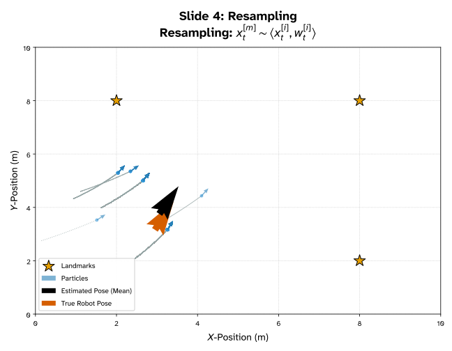
Lecture notes
This slide shows step four of the Monte Carlo localization loop, resampling. The plot title reads "Resampling: x_t^[m] ~ ⟨x_t^[i], w_t^[i]⟩", which you read as "the new particle x sub t superscript m is drawn from the weighted set of particles x sub t superscript i with weights w sub t superscript i." The map is the same 10 by 10 meter world, with landmark stars at (2, 8), (8, 8) and (8, 2). Only a handful of particle arrows remain visible, clustered between x = 1.5 and 4 m and y = 3 and 5.5 m. All of them head up and to the right, with gray trails coming from the lower left. The black estimated mean pose sits near (3.2, 4.2), close to the orange-red true robot pose near (3.1, 3.4).
Here is what happens in this step. On the last slide, the measurement update gave each particle a weight, and almost all of those weights were near zero. Resampling now draws M new particles with replacement, and each particle's chance of being picked is proportional to its weight. High-weight particles get copied many times, while low-weight particles disappear. After the draw, every weight resets to 1/M. That is why so few distinct arrows appear: many new particles are identical copies stacked on the same spot.
The reason to resample is efficiency. Without it, you would keep spending computation on particles in places the robot almost certainly is not.
A common mistake is to think resampling adds information. It does not. It only reallocates particles toward likely regions. Done too often, it also destroys diversity, a problem called particle deprivation. Low-variance (systematic) resampling helps reduce this.
On the next slide, the prediction step moves these copies with motion noise, which spreads them back out again.
76. Monte Carlo Localization – The Idea (9/13)
Lecture notes
This slide shows the second prediction step of Monte Carlo localization. The plot is again the 10 by 10 meter map with landmarks, drawn as yellow stars, at (2, 8), (8, 8) and (8, 2). The legend lists the true path over a 1 second arc as a dark orange dashed line, landmarks, particles in blue, the estimated pose (the particle mean) as a black arrow, and the true robot pose as an orange-red arrow.
Starting from the few distinct particles that survived the last resampling, every particle is pushed forward along a noisy arc, leaving gray trails. Resampling made many copies of the same good particles. Because each copy gets its own random motion noise, the copies now spread apart into blue clouds. This is the sampling step, x_t^m drawn from p(x_t | u_t, x_(t-1)^m): you apply the commanded motion u_t through the motion model and add noise that reflects wheel slip and encoder error.
The result is not one blob. The main cluster sits near (3.8, 4), matching the true robot pose at the end of the short dark orange arc. A second cluster forms near (3.4, 5.8), and a few strays head off elsewhere. The black mean, near (3.9, 4.7), lands between the clusters and slightly off the true pose. A common mistake is to trust the mean when the belief is multimodal: here it points to a place where few particles actually are.
Prediction alone only spreads the uncertainty out. On the next slide, the second measurement update uses the landmark ranges to decide which cluster is correct.
77. Monte Carlo Localization – The Idea (10/13)
![Plot: Particle filter after its second measurement update on a 10 by 10 meter map with landmarks at (2, 8), (8, 8) and (8, 2). Green range circles around each landmark intersect near (4, 4.2), where the true robot pose (orange-red arrow) and estimated mean pose (black arrow) nearly coincide, both heading up and to the right. Most particles form a dense cluster there, with a second cluster near (3.5, 5.8) and a few stragglers. Gray trails show particle paths. All particle weights fall low on the 0 to 0.005 color scale.](L24-25_files/b9382f08e525.svg)
Lecture notes
This plot, titled "Slide 6: Second Update, Second Measurement Update," shows the particle filter after it takes its second measurement. The map is 10 by 10 meters, with landmarks drawn as gold stars at (2, 8), (8, 8) and (8, 2). Dashed green circles show the sensor reading z_t: each circle is centered on a landmark, with radius equal to the measured range to that landmark. The circles intersect near (4, 4.2). There, the true robot pose (orange-red arrow) and the estimated mean pose (black arrow) nearly coincide, both heading up and to the right. Most particles sit in a dense cluster at that intersection. A second cluster sits near (3.5, 5.8), and a few stragglers are scattered around. Gray trails show where each particle traveled. A color bar on the right maps particle weight w_t from 0 to about 0.005, and every particle falls at the low, dark-purple end.
The idea here is that each particle's weight is set proportional to the measurement likelihood: w_t^i is proportional to p(z_t | x_t^i), the probability of seeing these ranges if the robot were at that particle's pose. Particles near where all three circles cross explain the measurement well and gain weight. The cluster near (3.5, 5.8) does not match the ranges, so it loses weight. That is why the weighted mean has moved back onto the true pose, compared with the previous slide where it sat between the two clusters.
Why are all the colors so dark? The weights are normalized to sum to 1. With many particles, each individual weight is tiny, even for the good ones. A small number does not mean a bad particle; what matters is a particle's weight relative to the others.
Quick check: if you skipped the measurement update and only predicted, what would the cloud look like? Next, resampling turns these weights into a tight cluster.
78. Monte Carlo Localization – The Idea (11/13)
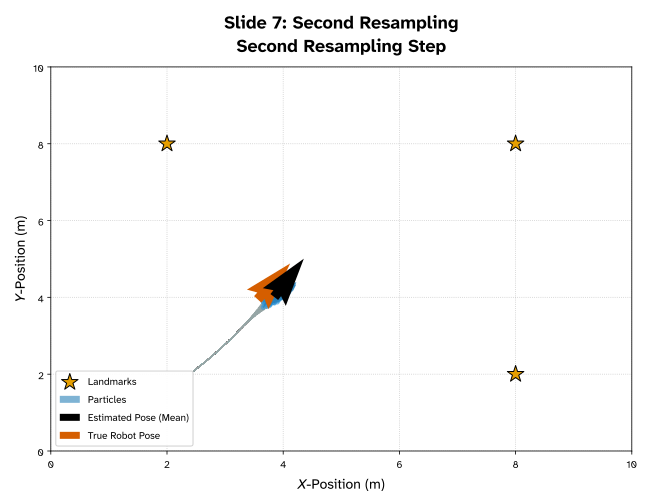
Lecture notes
This slide shows the last frame of the animated Monte Carlo localization example: the second resampling step. The plot is the same 10 by 10 meter map, with X-position and Y-position in meters on the axes and three star-shaped landmarks at (2, 8), (8, 8) and (8, 2). A thin gray trail runs from about (2.4, 2) up and to the right, tracing where the particles have travelled. At the end of the trail, near (4, 4), the blue particles have collapsed into one tight cluster. The black arrow, the estimated pose computed as the mean of the particles, sits almost on top of the orange-red arrow, the true robot pose. Both point up and to the right.
Compare this with the previous slide. After the second measurement update there were still two clusters, the main one near (4, 4.2) and a smaller one near (3.5, 5.8), plus a few stragglers. The particles in the second cluster had very low weights, because their predicted ranges to the landmarks did not match what the robot measured. Resampling draws a new set of N particles, and the chance of picking each one is proportional to its weight. High-weight particles near (4, 4) get copied many times, and the low-weight cluster and stragglers die out. The belief becomes single-peaked, which is why the mean estimate now lands on the true pose instead of between two clusters.
This is what convergence looks like: predict, weight, resample, and repeat until the cloud agrees with the sensors. Keep one question in mind, though: is a cloud this tight always good? The next slide gives the exact weighting and resampling rules and returns to that question.
79. Monte Carlo Localization – The Idea (12/13)
Each particle’s weight is proportional to the measurement likelihood at it’s hypothesized pose (how likely you would see the LiDAR measurement if you are at the current position)
then with probability
After weighting, we normalize so all weights sum to 1 - they now encode a discrete distribution! This simulates the continuous probability space! Much more computationally efficient!
Resampling draws N new indices from this distribution using a 'roulette wheel' or low-variance sampler
What happens to the filter if we sample only 10 particles in a 10,000 m² warehouse?
How can we improve the filter if we have some kind of prior knowledge of where we will be approximately?
If the particle cloud shrinks to a single tight point, is that always a good thing?
Lecture notes
This slide summarizes the math behind the weighting and resampling steps you just watched in the animation. The text says each particle's weight is proportional to the measurement likelihood at its hypothesized pose, meaning how likely you would be to see the current LiDAR scan if you really were at that particle's position.
The equation reads: w_i is proportional to P(z_t | x_(i,t), m), "the probability of measurement z at time t given particle i's pose and the map m." Then x_(i,t) ~ {x_(j,t) with probability w_j}, meaning each new particle is drawn from the old set, picking particle j with probability equal to its weight.
After weighting, you normalize so all weights sum to 1: w_i = w_i / (sum of all w_j). The weights now form a discrete probability distribution. The slide points out that this approximates the continuous belief over all possible poses at a much lower computational cost than representing that whole space directly.
Resampling then draws N new indices from this distribution. A "roulette wheel" sampler gives each particle a slice of the wheel sized by its weight and spins N times. A low-variance sampler spins once and takes N evenly spaced pointers. That keeps the selection more faithful to the weights and costs only O(N).
The slide ends with three questions to discuss.
With only 10 particles in a 10,000 m² warehouse, almost certainly no particle lands near the true pose. The filter either fails to converge or locks onto the wrong place.
If you have prior knowledge of roughly where the robot is, seed the particles around that estimate, for example with a Gaussian, instead of spreading them uniformly.
A cloud that collapses to a single tight point is not always good. The filter may be overconfident or converged to the wrong spot, and it loses the diversity it needs to recover. Common fixes are injecting random particles or adding motion noise.
That last question leads directly into the advantages and disadvantages on the next slide.
80. Monte Carlo Localization – The Idea (13/13)
Advantages:
- Handles the kidnapped-robot problem naturally (particles can be re-seeded anywhere)
- Encodes multi-modal beliefs - 'I'm in either Aisle 3 or 5' is expressible
- Requires no assumptions about Gaussian noise or linear motion models
Disadvantages:
- Computationally heavy - every particle does its own LiDAR simulation
- Degenerates over time: surviving particles cluster and you lose diversity (particle deprivation)
- Not well-suited to the mapping side of SLAM - we'll need graphs for that
- Need a initial map / initial state to be able to function appropriately
Lecture notes
This slide summarizes Monte Carlo Localization, or MCL. It has two lists of text and no figures: three advantages, then four disadvantages.
The advantages first. MCL handles the kidnapped-robot problem naturally. That is the case where the robot is picked up and moved without being told. Because the belief is just a set of particles, you can re-seed some of them anywhere on the map, for example when all the weights suddenly drop. The cloud can then rediscover the true pose.
Second, MCL encodes multi-modal beliefs. A statement like "I'm in either Aisle 3 or 5" is simply two clusters of particles. A Kalman filter cannot represent this, because it carries one Gaussian with a single peak.
Third, MCL needs no Gaussian-noise or linear-motion assumptions. The motion and sensor models can be any shape you can sample from or evaluate.
The disadvantages come next. MCL is computationally heavy, because every particle simulates its own LiDAR scan against the map. With N particles and B beams, that is roughly N*B ray casts per update.
It also degenerates over time. Resampling keeps copying the few high-weight particles until the cloud loses diversity. This is called particle deprivation, and it is one answer to the earlier question: a cloud collapsed to one tight point is not always good. If that point is wrong, nothing is left to recover.
MCL is not well suited to the mapping half of SLAM. We will use graphs for that later in the lecture.
Finally, MCL needs a map, and a sensible initial particle distribution, to work properly.
That last limitation is the bridge to the next part. Now that we can localize, we turn to how the world model itself is built.
81. The World (1/16)
Lecture notes
This is a section divider titled "The World," in white text with an orange underline on the dark blue Grainger Engineering background. Faint hand-drawn sketches of equations and diagrams fill the background as decoration.
So far you have focused on localization: ICP scan matching and Monte Carlo Localization tell you where the robot is, given a map. This section turns to the other half of SLAM, the map itself. How do you build and store a world model from LiDAR scans? Keep that question in mind for the next slides.
82. The World (2/16)
Now that we know where we are, we can focus on the mapping!
Given an accurate pose and a raw LiDAR scan , we must place that scan into a persistent world model:
- The model must survive sensor noise (robust) (one bad beam shouldn't create a wall)
- The model must be updatable (new information should refine, not overwrite, old beliefs)
- The model must be compact (we cannot afford to keep every raw scan in RAM forever)
- The model must be queryable by the path planner - "is this cell safe to drive through?"
Lecture notes
This slide, titled The World, turns from localization to mapping. The opening line reads: now that we know where we are, we can focus on the mapping. It then states the task. Given an accurate pose x_t (the robot's position and heading at time t) and a raw LiDAR scan z_t (the set of range measurements at time t), we must place that scan into a persistent world model. Four bullet points list what that model must do, each with a bolded keyword.
First, it must be robust and survive sensor noise. One bad beam should not create a wall. LiDAR returns spurious ranges from glass, reflections, or dust, so a single reading cannot be trusted on its own.
Second, it must be updatable. New information should refine old beliefs, not overwrite them. Seeing a cell as free ten times and then occupied once should nudge the estimate, not flip it.
Third, it must be compact. We cannot afford to keep every raw scan in RAM forever. A LiDAR produces hundreds of points per scan at several scans per second, so storing everything grows without bound.
Fourth, it must be queryable by the path planner. The planner needs a fast answer to the question "is this cell safe to drive through?"
Notice the assumption in "accurate pose." If the pose is wrong, every scan lands in the wrong place and the map smears. That coupling is why localization and mapping must be solved together.
Keep these four requirements in mind. On the next slide we compare three map representations against them: occupancy grids, point clouds, and feature maps.
83. The World (3/16)
1
Occupancy Grid
Divide the world into square cells. Each cell holds a probability of being occupied.
Standard for 2D indoor SLAM.
2
Point Cloud
Keep the raw (x, y) boundary points themselves.
Sparse, but requires a separate algorithm to determine free space.
3
Feature Map
Store only semantic landmarks: 'corner at (3.2, 1.7)'. Extremely compact but needs reliable feature extraction.
Lecture notes
This slide, titled The World, presents three side-by-side cards, numbered 1 to 3, that compare ways to represent the map. Card 1, Occupancy Grid: divide the world into square cells, and each cell holds a probability of being occupied; this is the standard for 2D indoor SLAM. Card 2, Point Cloud: keep the raw (x, y) boundary points themselves; it is sparse, but it needs a separate algorithm to work out free space. Card 3, Feature Map: store only semantic landmarks, for example "corner at (3.2, 1.7)"; it is extremely compact but depends on reliable feature extraction.
Judge each option against the four requirements from the last slide: robust to noise, updatable, compact, and queryable by the planner. A point cloud is what your LiDAR already gives you, but it only records where beams hit. It never records the empty space the beams passed through, so the planner cannot directly ask "is this cell safe?" A feature map is tiny, but if the corner detector misfires or a room has no clean corners, the map breaks down. The occupancy grid answers the planner's question with a single array lookup. Because each cell stores a probability, one bad beam only nudges a value instead of creating a wall, and new scans refine old beliefs rather than overwriting them.
Quick check: which representation explicitly stores free space?
That is why we use occupancy grids on the robot. The next slide defines exactly what each cell's probability means.
84. The World – Occupancy Grid Maps (OGM)
Discretize the world into a regular 2D array of cells
Each cell mᵢ holds a single number: the probability that the cell is occupied
- P(mᵢ) = 0 → free.
- P(mᵢ) = 1 → wall.
- P(mᵢ) = 0.5 → unknown, never observed.
The cells are independent by assumption (each updated separately - this is a simplification)
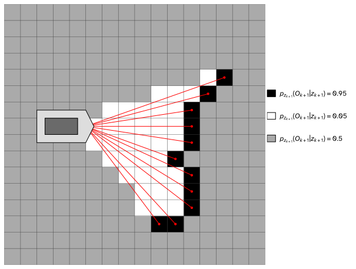
Lecture notes
This slide zooms in on the first of the three map representations from the previous slide, the occupancy grid map, or OGM. It is the standard choice for 2D indoor SLAM and the one you will build from your robot's LiDAR.
The slide says to discretize the world into a regular 2D array of square cells. Each cell, written m_i, holds a single number: the probability that the cell is occupied. P(m_i) = 0 means free space. P(m_i) = 1 means a wall. P(m_i) = 0.5 means unknown, never observed. At the bottom, the slide notes that cells are assumed independent and each is updated separately, which is a simplification.
The figure shows a robot on the left of a gray grid firing a fan of about a dozen red LiDAR rays to the right. Each ray ends in a black cell where it hit an obstacle, and together these cells trace a jagged wall. The legend gives those cells probability 0.95. Cells the rays pass through turn white at 0.05, meaning probably free. Everything unobserved stays gray at 0.5, including the cells behind the wall. The legend writes each value as p_(z_(k+1))(O_(k+1) | z_(k+1)), which reads as "the probability that the cell is occupied given the newest scan z at step k+1."
Notice the values are 0.95 and 0.05, not exactly 1 and 0. You never trust one beam completely, so one bad reading cannot permanently create or erase a wall.
Quick check: why do cells behind the wall stay at 0.5? Because the beams stopped at the wall, so you have no information about those cells.
Next you will see why the independence assumption is necessary in the first place.
85. The World (4/16)
In a perfect world we would want to compute the Full Map Posterior (used for updating map and the robot’s position for global consistency). If a map has , cells, and each cell can be either “Occupied” or “Free” there are , possible configurations for that map.
Even for a small maps , is larger than the number of atoms in the universe around ()!
To solve this, we assume that the state of one cell does not depend on the state of its neighbor . This is the "Grid Assumption.“
While this isn't strictly true (walls are continuous structures, not random dots), it allows us to treat each cell as a separate estimation problem. Mathematically, this decomposes the high-dimensional joint distribution into a product of many simple, independent marginal distributions:
Lecture notes
This slide is text only, with one equation at the bottom. It explains why we cannot estimate an occupancy grid exactly, and the simplification that makes it workable.
Ideally you would compute the full map posterior: the probability of the entire map m given every robot pose x_(1:t) and every sensor measurement z_(1:t). This joint distribution keeps the map globally consistent. The problem is size. If the map has N cells and each cell is either occupied or free, there are 2^N possible maps. A small 100 by 100 grid has 10,000 cells, so 2^10,000 configurations. The slide compares this with the number of atoms in the universe, roughly 2^266 (about 10^80). You cannot store or sum over that many hypotheses.
The fix is the grid assumption: the state of one cell m_i does not depend on its neighbor m_j. This is not really true, because walls are continuous structures, not random dots. But it turns one huge estimation problem into many small ones, one per cell. The equation reads: P(m | x_(1:t), z_(1:t)) is approximately equal to the product over all cells i of P(m_i | x_(1:t), z_(1:t)). In words, the probability of the whole map is approximated by the product of the individual cell probabilities. Each factor is a single number, so the grid stores 10,000 numbers instead of 2^10,000. This is exactly the independence the previous slide flagged as a simplification.
Quick check: how many configurations does a 10 by 10 grid have? The answer is 2^100, which is still far too many to enumerate.
Next, we look at what goes wrong when we update each cell by repeatedly multiplying probabilities.
86. The World (5/16)
What is a problem with this formulation?
Every new scan multiplies the old cell probability by a new likelihood via Bayes' rule
After 50 scans: , which creates numbers smaller than 10⁻¹⁵!
- Floating-point underflow: the CPU silently rounds these down to 0, erasing all information
- Multiplication is also slower than addition on every processor architecture
How can we transform this into a series of summations instead?
Lecture notes
This slide pauses on the factored map posterior from the previous slide and asks what goes wrong when you actually compute it. At the top is the equation P(m | x_(1:t), z_(1:t)) ≈ product over i of P(m_i | x_(1:t), z_(1:t)). In words: the probability of the whole map, given all robot poses x from time 1 to t and all measurements z from time 1 to t, is approximately the product of the individual cell probabilities. That is the grid assumption written out.
The slide asks, "What is a problem with this formulation?" The answer is repeated multiplication. Each new LiDAR scan updates a cell through Bayes' rule, which multiplies the old cell probability by a new likelihood. The slide's example after 50 scans is 0.6 × 0.55 × 0.6 × 0.55 × ..., and the slide notes that this produces numbers smaller than 10^-15.
Every factor is below 1, so each pair of scans multiplies the running value by about 0.33, and the result shrinks geometrically.
The slide lists two consequences. First, floating-point underflow: once a value falls below the smallest number the format can represent, the CPU silently rounds it to 0. Single-precision float, which the Red Board uses, runs out far sooner than double. A cell stored as 0 can never recover, because any later evidence multiplied by 0 is still 0. Second, multiplication is slower than addition on every processor architecture, and a map has thousands of cells updated on every scan.
The closing question, "How can we transform this into a series of summations instead?", is your hint: think about which function turns log(a*b) into log(a) + log(b). The next slide answers it with the log-odds trick.
87. The World (6/16)
To fix this we make use of the Log-Odds trick!
Define the odds of occupancy as the ratio of probabilities
Take the natural log of the odds - this is the log-odds value
Log-odds = 0 means 50% (unknown).
- Positive means occupied.
- Negative means free.
Range is effectively (−∞, +∞), no underflow ever
And crucially, Bayes' update becomes simple addition of log-odds increments!
Lecture notes
This slide, titled "The World," answers the question from the previous slide: how do you turn a long chain of multiplications into a series of sums? The answer is the log-odds trick.
The slide first defines the odds of occupancy as a ratio of probabilities. It then takes the natural log of the odds to get the log-odds value, written l(m_i). A centered equation reads: l of m_i equals the log of P of m_i divided by one minus P of m_i, or l(m_i) = log( P(m_i) / (1 − P(m_i)) ). Here P(m_i) is the probability that cell i is occupied, and 1 − P(m_i) is the probability that it is free.
Next comes how to read the number. A log-odds of 0 means 50 percent, which is "unknown." Positive means occupied, and negative means free. For example, P = 0.9 gives odds of 9 and a log-odds of about +2.2, while P = 0.1 gives about −2.2. Notice the symmetry: equally confident "occupied" and "free" beliefs sit the same distance from zero.
The last two lines carry the payoff. The range is effectively minus infinity to plus infinity, so there is no underflow. A cell you are very sure about simply holds a large positive or negative number instead of something like 10^-15. Crucially, the Bayes update becomes simple addition of log-odds increments. The log turns products into sums, so each new scan just adds a small increment to each cell it observes. That is cheap and numerically safe on the Raspberry Pi.
A common mistake is to treat odds as if they were probabilities. Odds of 9 mean 9 to 1, not 900 percent.
On the next slide, try the extreme cases yourself: what happens at P = 1 and at P = 0, and how do you invert l to get P back?
88. The World (7/16)
What are the values of for the following situations?
What happens when you are 100% sure there is a wall?
What about if are 100% sure there isn’t a wall?
How does one convert back to the probability ?
Lecture notes
This slide puts the log-odds definition at the top: l(m_i) = log( P(m_i) / (1 − P(m_i)) ), read as "the log-odds of cell m_i equals the natural log of the probability that the cell is occupied, divided by one minus that probability." Below it are three questions: what l(m_i) is when you are 100% sure there is a wall, what it is when you are 100% sure there is not a wall, and how to convert l(m_i) back to the probability P(m_i). The answer to the last question is at the bottom: P(m_i) = 1 / (1 + e^(−l(m_i))), "P of m_i equals one over one plus e to the minus l of m_i."
Work through the cases. If P = 0.5, the odds are 1 and log(1) = 0, so an unknown cell has log-odds zero. If P = 1, the denominator is zero and l goes to plus infinity. If P = 0, the numerator is zero and l goes to minus infinity. So certainty sits at the far ends of the real line.
For the inverse, exponentiate both sides: e^l = P / (1 − P). Solve for P to get P = e^l / (1 + e^l). Then divide the top and bottom by e^l to get P = 1 / (1 + e^(−l)). This is the logistic, or sigmoid, function.
A common mistake is letting a cell reach exactly 0 or 1. Once a cell is "certain," no later scan can change it, and in code you get infinities. Practical mappers clamp the log-odds between a minimum and a maximum so the map can still adapt.
The next slide plots both of these transformations side by side.
89. The World (8/16)
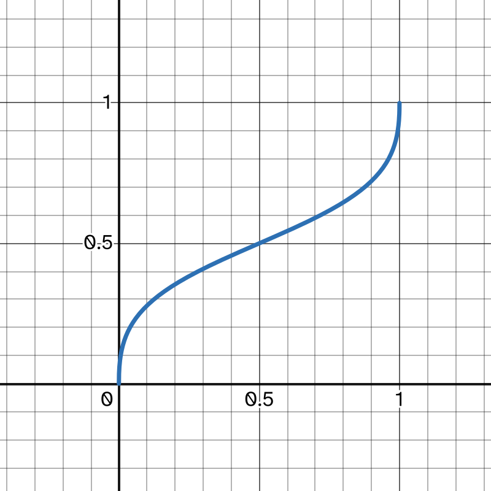
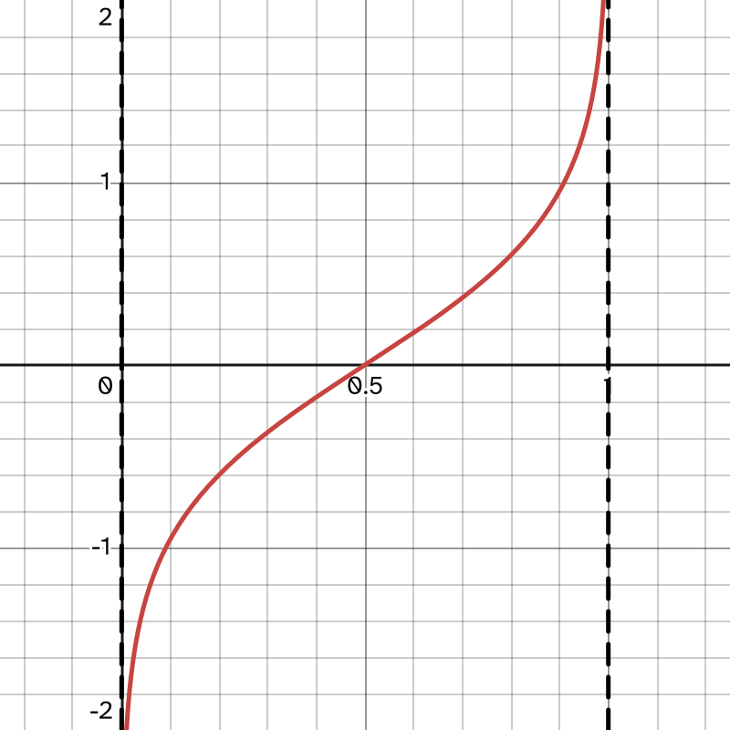
Log-Odd transformation
Log-Odd inverse transformation
Lecture notes
This slide answers the questions from the last slide with two graphs side by side.
The left graph, in red, is the log-odds transformation: l = ln(p / (1 - p)), read "l equals the natural log of p over one minus p." The horizontal axis is the occupancy probability p from 0 to 1. The vertical axis is the log-odds value, drawn from minus 2 to plus 2. The curve rises steadily and crosses zero at p = 0.5, the unknown state. It is nearly straight through the middle. Near p = 0 and p = 1 it bends sharply toward minus and plus infinity. Dashed vertical lines at 0 and 1 mark those asymptotes. So being 100% sure of a wall gives plus infinity, and being 100% sure of free space gives minus infinity. The open interval 0 to 1 maps onto the whole real line, which is why log-odds never underflows.
The right graph, in blue, is the inverse transformation back to probability: p = 1 - 1 / (1 + exp(l)), which is the same as exp(l) / (1 + exp(l)). Its output always stays between 0 and 1 and passes through 0.5 when l = 0. If you plot it against an unbounded l axis, it is the familiar sigmoid. It is steepest at l = 0 and levels off toward 0 and 1.
A common mistake is letting a cell's log-odds grow without limit. Real implementations clamp l to finite bounds, for example about plus or minus a few units. This keeps a cell able to flip if the world changes.
With these transforms in hand, the next slides show why the Bayesian occupancy update becomes a simple addition.
90. The World – Recursive Bayesian Update (1/4)
The Bayesian Update, is now a simple addition!
Wait what was the Bayesian Update again?
In its raw form, the probability that a cell is occupied at time depends on all previous observations . Using Bayes' Rule and assuming the Markov property, the update looks like this:
= the prior (what we currently believe the map to be)
= Likelihood ( given the current map, how likely is this new data?)
Lecture notes
This slide is titled "The World – Recursive Bayesian Update." It opens with the claim that the Bayesian update is now a simple addition, then asks: wait, what was the Bayesian update again? The rest of the slide reminds you of the raw form before we get to the addition.
The text says the probability that a cell is occupied at time t depends on all previous observations, z from 1 to t. Using Bayes' rule and the Markov property, the update is a centered equation: P(m_i | z_(1:t)) = P(z_t | m_i, z_(1:t-1)) * P(m_i | z_(1:t-1)) / P(z_t | z_(1:t-1)). In words, the probability that cell i is occupied given all measurements up to now equals the likelihood of the newest measurement times our previous belief, divided by the probability of the newest measurement given the past.
Two labels sit below the equation. P(m_i | z_(1:t-1)) is the prior, what we currently believe the map to be. P(z_t | m_i, z_(1:t-1)) is the likelihood: given the current map, how likely is this new data?
Here m_i is the occupancy of a single grid cell, and each cell is updated independently. The denominator does not depend on whether the cell is occupied, so it is only a normalizer. The Markov assumption says that once you know the cell's state, the new scan does not depend on older scans, so the likelihood simplifies to P(z_t | m_i). This holds only for a static world, so people walking past the LiDAR break it.
Quick check: why is this update called recursive? Because yesterday's posterior becomes today's prior.
Next, we divide the occupied case by the empty case so the normalizer cancels. Taking the log of that ratio with the log-odds from the previous slide turns the products into the promised addition.
91. The World – Recursive Bayesian Update (2/4)
To simplify, we look at the ratio of the cell being occupied vs. empty ():
Notice three distinct components here:
The Inverse Sensor Model: (What the current laser scan says).
The Prior: (The initial belief, usually , which cancels out).
The Recursive Belief: (What we already knew).
Lecture notes
This slide rewrites the recursive Bayesian update from the previous slide as a ratio: the probability that grid cell m_i is occupied divided by the probability that it is empty. "Empty" is written not m_i, meaning m_i = 0.
The equation reads: P(m_i | z_1:t) / P(not m_i | z_1:t) = [P(m_i | z_t) / P(not m_i | z_t)] * [P(not m_i) / P(m_i)] * [P(m_i | z_1:t-1) / P(not m_i | z_1:t-1)]. In words, the odds that the cell is occupied given all measurements from time 1 to t equal three factors multiplied together. The first is the odds given only the current measurement. The second is the inverse of the prior odds. The third is the odds given all measurements up to time t minus 1.
The slide skips a step. You write Bayes' rule once for "occupied" and once for "empty," then divide the two. The awkward normalizer P(z_t | z_1:t-1) appears in both, so it cancels. Next you flip the likelihood P(z_t | m_i) into P(m_i | z_t) using Bayes' rule again. That flip divides by P(m_i), and that division is why the prior shows up inverted.
The slide names the three components:
1. The inverse sensor model is what the current laser scan says about this cell.
2. The prior is the initial belief, usually 0.5. A prior of 0.5 makes this factor 1, so it cancels.
3. The recursive belief is what you already knew from earlier scans.
A common mistake is to drop the prior term when your prior is not 0.5. It only vanishes for 0.5.
To check your understanding: if a cell's odds are 3 and the scan says odds of 2, with a prior of 0.5, what are the new odds? The answer is 6.
The next slide takes the log of this equation, so these products become simple additions.
92. The World – Recursive Bayesian Update (3/4)
When we take the of the Ratio Form equation, all the multiplications turn into additions, and divisions turn into subtractions:
This yields the exact formula:
Lecture notes
This slide finishes the derivation from the previous slide by turning the ratio form of the occupancy update into log-odds, so each grid cell's update becomes a simple addition.
At the top is the ratio form equation from the last slide. In words: the probability that cell m_i is occupied given all measurements z from 1 to t, divided by the probability that it is free given those same measurements, equals three factors multiplied together. In plain text: P(m_i | z_1:t) / P(not m_i | z_1:t) = [P(m_i | z_t) / P(not m_i | z_t)] * [P(not m_i) / P(m_i)] * [P(m_i | z_1:t-1) / P(not m_i | z_1:t-1)]. The three factors are the current sensor reading, the inverted prior, and the old belief.
Taking the natural log turns the multiplications into additions: ln(Ratio_t) = ln(Sensor) + ln(Prior Ratio) + ln(Old Ratio).
We define the log-odds of a cell as l = ln(p / (1 − p)). The occupied and free probabilities are p and 1 − p, so each ratio becomes a log-odds term. The prior factor is upside down, free over occupied, so its log is minus the prior log-odds. That gives the exact formula, "New L equals Old L plus Inverse Sensor Model minus Prior." In plain text: l_t(m_i) = l_(t-1)(m_i) + l_inv-sensor(m_i, x_t, z_t) − l^0. The sensor term depends on the cell, the robot pose x_t, and the scan z_t. With a prior of 0.5, l^0 = ln(1) = 0, so the prior term drops out.
This form matters for three reasons. Each update is one addition per cell. Repeated multiplication would push probabilities toward 0 or 1 and lose floating-point precision, which log-odds avoids. You only convert back to a probability when you need one, using p = 1 − 1/(1 + exp(l)).
Quick check: if a cell's log-odds is 0, what is its probability of being occupied? (Answer: 0.5.) Next, we look at typical values for the sensor term.
93. The World – Recursive Bayesian Update (4/4)
The sensor-model term is a small positive number (for hits) or small negative number (for passes)
Typical values: +0.9 on hit, −0.4 per pass.
A ghost obstacle slowly decays (more negative), a real wall hardens (more positive)!
This is the single most-executed line of code in a running SLAM system!
Lecture notes
This slide shows the final log-odds occupancy update as one equation, followed by four short statements about what it means in practice. The equation reads: l_t(m_i) = l_(t-1)(m_i) + l_inv-sensor(m_i, x_t, z_t) - l^0. In words, the log-odds of cell m_i at time t equals its log-odds at the previous time step, plus the inverse sensor model term for that cell given the robot pose x_t and the scan z_t, minus the prior log-odds l^0.
This is where the derivation from the last two slides pays off. Taking the log turned the Bayesian product into a sum, so updating a cell is a single addition. The prior is usually p = 0.5, so l^0 = log(0.5/0.5) = 0, and that term drops out.
The sensor term is a small positive number when the beam hits the cell and a small negative number when the beam passes through it. Typical values are +0.9 per hit and −0.4 per pass. To turn log-odds back into a probability, use p = 1 - 1/(1 + exp(l)).
Here is a quick example. A real wall hit three times reaches l = 2.7, which gives p ≈ 0.94, so the wall "hardens." A ghost obstacle, such as a person who walked by, gets one hit (+0.9) and then three passes (−1.2). That leaves l = −0.3, or p ≈ 0.43, so the ghost slowly decays. Hits are weighted more than passes so that thin or briefly seen surfaces are not erased too easily.
This addition runs for every cell along every beam of every scan. That is why it is the single most-executed line of code in a running SLAM system. In practice, implementations usually clamp l between bounds so that cells can still change if the world changes.
Next, we look at where the +0.9 and −0.4 actually come from: the inverse sensor model.
94. The World – Inverse Sensor Model (1/5)
The Inverse Sensor Model tries to compute “given a laser reading, what do we believe about the cells it passed through?”
The forward model asks: “Given a map, what reading should the sensor produce?”
The inverse model asks the opposite: “Given this reading, what does the map look like?”
- Rule 1: every cell the laser beam passed through gets a free-space vote (negative log-odds)
- Rule 2: the cell where the beam terminated gets an occupied vote (positive log-odds)
- Rule 3: cells behind the termination point are unchanged - the laser cannot see through walls
Lecture notes
This slide puts a name on the middle term of the log-odds update from the last few slides. At the top is the update equation: l_t(m_i) = l_(t-1)(m_i) + l_inv-sensor(m_i, x_t, z_t) − l^0. In words, the log-odds that cell m_i is occupied at time t equals its log-odds at the previous time step, plus the inverse sensor model term for that cell given the robot pose x_t and the measurement z_t, minus the prior log-odds l^0.
The prior l^0 is usually set for a probability of 0.5, which makes l^0 = log(0.5/0.5) = 0. So in practice each scan simply adds a number to every cell it touches.
The slide contrasts two kinds of model. A forward model asks: given a map, what reading should the sensor produce? This is the model Monte Carlo localization uses to weight particles. The inverse model asks the opposite: given this reading, what does the map look like? Mapping needs the inverse direction, because the map is the unknown.
The slide then gives three rules for one laser beam:
Rule 1: every cell the beam passed through gets a free-space vote, which is negative log-odds, for example −0.4.
Rule 2: the cell where the beam terminated gets an occupied vote, which is positive log-odds, for example +0.9.
Rule 3: cells behind the termination point are left unchanged, because the laser cannot see through walls.
A common mistake is to mark the cells behind a hit as free or as occupied. Those cells receive no information at all. Leaving them unchanged keeps them at the prior, so they remain unknown.
Next, you look at what these votes look like as a probability profile along a single beam.
95. The World – Inverse Sensor Model (2/5)
We can implement this by looking along a single beam:
- From range 0 to (d - ε): probability of occupancy is LOW (clearly free space)
- Near the reported range d ± ε: probability shoots HIGH (a surface was detected here)
- Past the reported range d + ε: probability reverts to 0.5 (unknown — beam cannot see)
The width ε captures sensor range noise, typically 1-5 cm
Tuning these thresholds is a real-world engineering decision specific to your LiDAR model. Tuning these will give you different performance results.
Lecture notes
This slide is text only. It turns the three rules from the previous slide into a profile of occupancy probability along one LiDAR beam that reports a range d. Read it as a function of distance r from the sensor.
From r = 0 up to r = d minus epsilon, the probability of occupancy is low, because the beam travelled through that space unobstructed, so it is clearly free.
Within plus or minus epsilon of d, the probability jumps high, because a surface was detected there.
Beyond d plus epsilon, the probability returns to 0.5, meaning unknown, because the beam cannot see through the surface it hit.
The width epsilon, written ε on the slide, represents the sensor's range noise. It is typically 1 to 5 cm. Tying this to the log-odds update from slide 93: low probability gives a negative log-odds vote, high probability gives a positive vote, and a probability of 0.5 has log-odds log(0.5/0.5) = 0. So cells behind the wall receive no update at all, which is exactly Rule 3.
The slide stresses that these thresholds, meaning epsilon and the low and high probability values, are an engineering choice specific to your LiDAR model, and different choices give different mapping performance. A common mistake is making epsilon much smaller than your grid cell size. The hit then lands in no cell, or flickers between neighbouring cells, so walls never harden. Conversely, a very large epsilon makes walls thick and blurry.
So far this describes a continuous beam. Next, you see how the code decides which discrete grid cells that beam actually crosses.
96. The World – Inverse Sensor Model (3/5)
How does the code know exactly which cells a beam has crossed?
This is the Bresenham's algorithm! (2D ray casing algorithm!)
It's a pure-integer algorithm - no trigonometry, no floating-point in the inner loop
Given start (robot pose cell) and end (hit cell), it efficiently enumerates every cell between them to represent a discretized straight line.
Each enumerated cell gets the “FREE space” log-odds update; the final cell gets “HIT”.
At 360 beams per scan × 10 Hz × thousands of cells per beam, speed matters enormously.
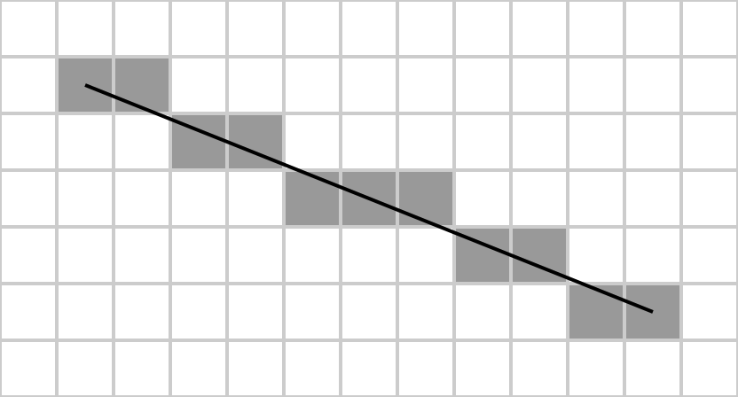
Lecture notes
This slide answers a practical question left over from the inverse sensor model: when a beam travels from the robot to a wall, how does the code know exactly which grid cells it crossed? The answer is Bresenham's line algorithm, a classic 2D ray casting algorithm. (The slide's "ray casing" means ray casting.)
The figure shows a square grid with a straight black line running from a start cell near the upper left down to an end cell near the lower right. The line drops about 4 rows over 10 columns. The 11 cells it passes through are shaded grey, exactly one per column. They form a staircase of horizontal runs two or three cells long, and each run steps down one row. This is how a continuous beam becomes a discrete set of cells.
The key property is that Bresenham uses only integers. Given the start cell, which is the robot's pose, and the end cell, which is the hit, it walks from one to the other using additions and comparisons on an integer error term. There is no trigonometry and no floating-point math in the inner loop.
Every cell it visits gets the "free space" log-odds update, and the final cell gets the "hit" update. A common bug is to apply the free update to the endpoint as well, which slowly erases your walls.
Why does speed matter so much? 360 beams per scan times 10 scans per second is 3,600 beams every second. With thousands of cells per beam, that comes to millions of cell updates per second, so the inner loop must be cheap.
The next slide shows the actual pseudocode.
97. The World – Inverse Sensor Model (4/5)
plotLine(x0, y0, x1, y1)
dx = abs(x1 - x0)
sx = x0 < x1 ? 1 : -1
dy = -abs(y1 - y0)
sy = y0 < y1 ? 1 : -1
error = dx + dy
while true
plot(x0, y0)
e2 = 2 * error
if e2 >= dy
if x0 == x1 break
error = error + dy
x0 = x0 + sx
end if
if e2 <= dx
if y0 == y1 break
error = error + dx
y0 = y0 + sy
end if
end while
YouTube video: Bresenham Line Algorithm for Occupancy Grid (Marius Juston)
Lecture notes
This slide puts the full Bresenham line algorithm next to a short video I made, "Bresenham Line Algorithm for Occupancy Grid." The video's opening frame shows a dark grid with x and y axes. A yellow line runs steeply from a red dot labeled Start, at the lower left just left of the vertical axis, up to a red dot labeled End, at the upper right. The video animates the grid cells being picked out along that line.
Reading the code: the function is plotLine(x0, y0, x1, y1). It sets dx = abs(x1 - x0) and dy = -abs(y1 - y0). Note that dy is deliberately negative. The step directions are sx = +1 if x0 < x1, otherwise -1, and sy is chosen the same way for y. The error term starts at error = dx + dy.
Inside an endless loop, it does four things:
plot the current cell (x0, y0);
compute e2 = 2 * error;
if e2 >= dy, check whether x0 has reached x1 and break if so, otherwise add dy to error and step x0 by sx;
if e2 <= dx, do the same for y: check for y0 == y1, add dx to error, and step y0 by sy.
The error term measures how far the current cell is from the ideal continuous line. The two comparisons decide whether to step in x, in y, or in both, which gives a diagonal step. Because this one version handles all eight octants, you never need special cases for steep or backward lines. The inner loop uses only integer additions and a doubling, which can be done as a bit shift.
In the occupancy grid, (x0, y0) is the robot's cell and (x1, y1) is the cell where the beam hit. Every plotted cell before the last one gets the free update, and the final cell gets the hit update. A common mistake is marking the hit cell as free too.
Quick check: trace the code from (0,0) to (3,0). How many cells does it plot?
Next, we apply those log-odds updates to a single cell over several scans.
98. The World – Inverse Sensor Model (5/5)
Initial: unobserved cell starts at log-odds = 0 (probability 0.5)
- LiDAR hits it twice: (becoming a wall)
- A passing laser slices through: (still wall, but weakening)
- After 5 clean passes: (the “ghost” has dissolved)
, where ,
Lecture notes
This slide walks one grid cell through a worked log-odds example. The cell starts unobserved at log-odds l = 0, which is probability 0.5: no idea whether it is wall or free.
Next, the LiDAR hits it twice. Each hit adds +0.9, so l = 0 + 0.9 + 0.9 = 1.8, and the probability is about 0.86. The cell is becoming a wall.
Then a laser beam passes through the cell to something farther away. On the previous slides, Bresenham's algorithm gives every cell along a beam the free-space update, so this cell gets minus 0.4. Now l = 1.8 minus 0.4 = 1.4, and the probability is about 0.80. It is still a wall, but weakening.
After 5 clean passes in total, l = 1.8 minus 5 times 0.4 = minus 0.2, and the probability is about 0.45. The "ghost" has dissolved. That ghost could be a person who walked by, or a single spurious return.
The update rule at the bottom reads: l sub t equals l sub (t minus 1) plus delta l, or l_t = l_(t-1) + Δl. Delta l for a hit is +0.9, and delta l for a free pass is minus 0.4.
To get these probabilities yourself, convert with P = 1 / (1 + exp(-l)). For example, exp(1.8) is about 6.05, so P = 6.05 / 7.05, which is about 0.86.
Notice the asymmetry. A hit is worth more than a miss, so walls form quickly but only fade after repeated contrary evidence. That makes the map robust to noise while still letting it adapt to moving objects.
A common mistake is adding probabilities directly. You add log-odds, which is why the update is a single cheap addition per cell.
Quick check: how many free passes would bring this cell back to exactly 0.5? Five passes take it to minus 0.2, so the answer is 4.5 passes. In practice, after 4 passes it is at 0.2, still slightly occupied.
Next, we look at the main weakness of grids: their dependence on resolution.
99. The World (9/16)
What is the problem with grid worlds?
They are very resolution dependent!
- For a 100 m × 100 m warehouse at 5 cm resolution: 4 million cells
- Drop to 1 cm resolution: 100 million cells - 25× more memory and 25× more update work
However, what is the problem with increase/decreasing the resolution?
- Too coarse (> 10 cm): doorways and chair legs vanish into “unknown”
- Too fine (< 2 cm): RAM explodes, scan-match speed collapses, and sensor noise dominates
Rule of thumb: pick resolution ≈ the robot's smallest obstacle dimension / 2 (Essentially Nyquist resolution but for grid size)
Lecture notes
This slide is a text-only slide titled "The World." Having built the occupancy grid with log-odds updates and Bresenham ray tracing, it now asks what the problem with grid worlds is. The answer is that they are very resolution dependent.
The slide gives two numbers for a 100 m by 100 m warehouse. At 5 cm resolution, each side has 100 / 0.05 = 2000 cells, so the map has 2000 squared, or 4 million cells. At 1 cm resolution, each side has 10,000 cells, so the map has 100 million cells. That is 25 times more memory and 25 times more update work. The factor is (5/1)^2 = 25 because the grid is two-dimensional: halving the cell size quadruples the cell count. If you store one 4-byte float of log-odds per cell, that is roughly 16 MB versus 400 MB.
The slide then asks what goes wrong when you raise or lower the resolution. If the cells are too coarse, larger than about 10 cm, small features like doorways and chair legs vanish into "unknown." If the cells are too fine, smaller than about 2 cm, three things happen. RAM explodes. Scan matching slows down badly. Sensor noise dominates, because the LiDAR's few-centimeter range error now smears each hit across several neighboring cells.
The rule of thumb is to pick resolution approximately equal to the robot's smallest obstacle dimension divided by 2. This is the Nyquist idea applied to space: sample at least twice as finely as the smallest feature you need to see. For example, a 4 cm table leg calls for about 2 cm cells.
Quick check: if your robot's smallest obstacle is 10 cm, what cell size would you choose, and how many cells would the 100 m warehouse need?
This resolution dependence motivates the next slide, which covers the alternative of storing the world as a raw point cloud.
100. The World (10/16)
The other way is to represent the world as raw point clouds.
- A point-cloud map stores only the (x, y) boundary coordinates - no cell structure, so it is less dependent on the available scale of the workspace
- Memory scales with the number of obstacles, not the area of the world
- Perfect for sparse environments (a warehouse with mostly empty aisles) or very large environment (going around a city in a car)
Downside: there is no explicit “free space” - the planner must infer it by ray-casting on-the-fly
Often combined with voxel downsampling (discretizing the point cloud into cubes / voxels) to bound memory in feature-dense regions. A bunch of point cloud coordinates are grouped up as a single voxel
Lecture notes
This slide is all text. It introduces the second way to represent the world: as a raw point cloud instead of an occupancy grid. It lists three advantages, one downside, and a common companion technique called voxel downsampling.
On the last slide you saw that grid maps depend heavily on resolution. A 100 m by 100 m warehouse at 5 cm resolution already needs 4 million cells. A point-cloud map avoids this because it has no cell structure. It stores only the (x, y) coordinates of boundaries, the points where your LiDAR beams actually hit something. Memory therefore scales with the number of obstacles, not with the area of the world. That makes point clouds a good fit for sparse spaces, such as a warehouse with mostly empty aisles, and for very large ones, such as driving a car around a city.
The downside is that the map stores no explicit "free space." Empty regions are simply absent. To know whether a path is clear, the planner must ray-cast on the fly: it traces a line from the robot outward and checks whether any stored point lies near that line. A grid answers the same question with a single cell lookup, so this is extra computation at query time.
To keep memory bounded where features are dense, point clouds are often voxel downsampled. Space is divided into cubes called voxels, and all the points inside one cube are replaced by a single representative point, typically their centroid.
Quick check: if your robot rescans the same wall a hundred times, what happens to memory with and without voxel downsampling?
Next, you see real examples of a point cloud and a voxel map.
101. The World (11/16)
https://link.springer.com/chapter/10.1007/978-3-030-20867-7_30
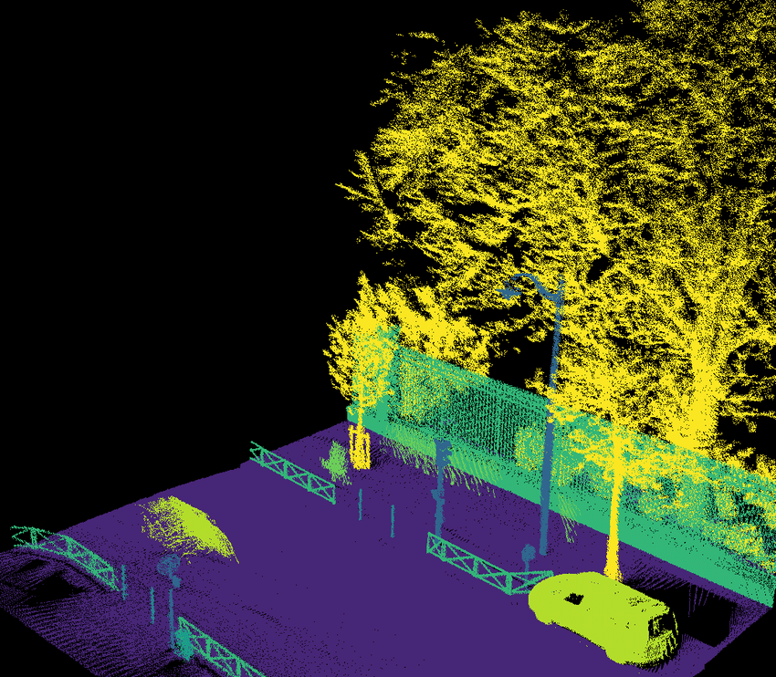
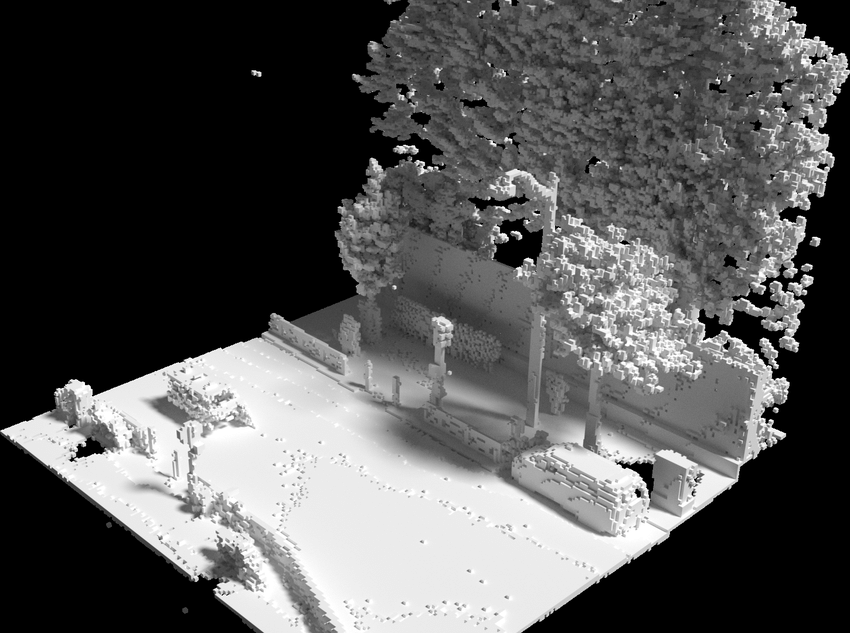
Lecture notes
This slide shows the two world representations from the last two slides side by side, using a real outdoor example. The images come from the paper linked at the bottom: https://link.springer.com/chapter/10.1007/978-3-030-20867-7_30
On the left is a 3D lidar point cloud of a city street, colored by semantic class. The road surface is purple, the tree canopies are yellow, the fences and low railings are teal, a street lamp and several poles are blue, and a parked car and a bush are light green. Every dot is one measured return, a real-valued (x, y, z) coordinate. Notice how dense the trees are and how empty the black space above the road is. The map spends memory only where something reflected the laser, which is the "memory scales with obstacles" property you just saw.
On the right is what appears to be the same kind of street turned into a voxel occupancy map. Space is cut into small cubes, and each cube is marked occupied or not. You can still recognize the flat road, two parked cars, a long wall, lamp posts, bushes, and the big tree canopies, but everything now looks blocky. That blockiness is the resolution trade-off from slide 99 made visible. Thin features such as railings and poles survive only if the voxel size is smaller than they are.
As a quick check, ask yourself which picture a path planner could query directly for free space, and what it would cost to get that answer from the other one. The next slide puts these advantages and disadvantages into a side-by-side table.
102. The World (12/16)
OCCUPANCY GRID
Advantages
- Explicit free-space representation
- Easy for the path planner to consume
- Natural decay handles dynamic objects
- Most ROS tooling expects this format
Disadvantages
- RAM scales with area, not obstacle count
- Fixed resolution limits detail
POINT CLOUD / SUBMAP
Advantages
- Memory scales with obstacles only
- Can store continuous real coordinates
- Great for outdoor or sparse indoor
- Easy to stitch multiple submaps
Disadvantages
- No explicit free space
- Planner must ray-cast at query time
Lecture notes
This slide summarizes the two map representations from the past several slides in a side-by-side comparison. The left panel is the occupancy grid, the right panel is the point cloud or submap, and each lists advantages and disadvantages.
The occupancy grid's advantages: it represents free space explicitly, it is easy for a path planner to consume, natural decay handles dynamic objects, and most ROS tooling expects this format. Its disadvantages: RAM scales with area rather than obstacle count, and the fixed resolution limits detail.
The point cloud's advantages: memory scales with obstacles only, it stores continuous real coordinates, it is great for outdoor or sparse indoor spaces, and multiple submaps are easy to stitch together. Its disadvantages: there is no explicit free space, so the planner must ray-cast at query time.
To see the memory difference concretely, a 100 m by 100 m area at 5 cm resolution is 2000 by 2000 = 4 million cells, whether the room is cluttered or empty. A point cloud of the same space stores only the points where the lidar hit something.
"Natural decay" means that because each cell holds a belief updated by the recursive Bayesian rule, a person who walks away is gradually overwritten by "free" observations. "Ray-casting" means tracing a line through the map to check whether it is blocked. A grid gives you that answer by lookup; a point cloud makes you compute it every time.
The common pattern, used by most practical systems, is to build local submaps or point clouds for scan matching and then render an occupancy grid for planning.
Quick check: for your robot in a small lab course, which representation would you choose, and why?
Whichever map you pick, it is only as good as the poses used to build it. That leads to drift, next.
103. Drift
Lecture notes
This is a section title slide with the single word "Drift" in white on the dark blue course background, above an orange accent line. The faint sketches of equations and diagrams behind it are decoration only.
You have just compared occupancy grids and point-cloud submaps as ways to store the world. Now comes the problem that breaks both: drift. Each scan match adds a small error, and those errors pile up over a long run. On the next slides you see how quickly that happens and what it does to the map.
104. The World (13/16)
Every scan match injects a tiny error - maybe 0.5 mm, maybe 0.01°, because the sensor is inaccurate
That error is added to the next pose estimate - not averaged against it
After 10,000 matches, errors compound: 0.5 mm × 10,000 = 5 meters of position drift
Rotational drift is even worse - 0.01° × 10,000 = 100° of cumulative heading error
Our carefully optimized local pose is wonderful, but our global trajectory is horrible!
Lecture notes
This slide puts numbers on the drift we just introduced. It is all text, with five statements. First, every scan match injects a tiny error, maybe 0.5 millimeters, maybe 0.01 degrees, because the sensor is inaccurate. Second, that error is added to the next pose estimate, not averaged against it. Third, after 10,000 matches the errors compound: 0.5 mm times 10,000 equals 5 meters of position drift. Fourth, rotational drift is even worse: 0.01 degrees times 10,000 equals 100 degrees of cumulative heading error. Finally: our carefully optimized local pose is wonderful, but our global trajectory is horrible.
The key idea is that scan matching, whether ICP or NDT, only estimates the relative motion between consecutive scans. You chain those relative transforms together, so the global pose is x_k = x_(k-1) composed with the match result, and each match's error rides along forever. Nothing in the chain ever pulls the estimate back toward the truth. This is the same kind of drift you see when you integrate wheel encoder odometry, just with smaller steps.
Why is heading worse? A heading error does not stay put. It rotates every future translation. Once your heading is off by a few degrees, each meter you drive adds position error sideways. A 5 degree error over 10 m of travel is already about 0.87 m of lateral error, since 10*sin(5°) is about 0.87.
Quick check: at 10 scans per second, how long does it take to reach 10,000 matches? About 17 minutes, which is a normal run for your robot. The next slide shows what this drift does to a map when the robot returns to its start.
105. The World (14/16)
Classic failure: robot maps a big circular corridor, returns to the start
The map at the end overlaps the map from the start - but the geometry doesn't match up
The walls appear doubled - the same physical wall drawn at two slightly different positions
Corridors bend, right angles become slight curves, the whole map subtly warps
The map is locally correct everywhere but globally wrong
Lecture notes
This slide, titled "The World", is text only, with five statements describing the classic failure of SLAM without correction. A robot maps a big circular corridor and returns to its starting point. The map built at the end overlaps the map built at the start, but the geometry does not match. The walls appear doubled: the same physical wall is drawn at two slightly different positions. Corridors bend, right angles become slight curves, and the whole map subtly warps. The last line, with the word "everywhere" in bold, sums it up: the map is locally correct everywhere but globally wrong.
This is what the drift numbers from the previous slide look like in practice. Each scan match adds a tiny error, maybe 0.5 mm or 0.01 degrees, and those errors are added, not averaged. Around a big loop they accumulate to meters of position error and tens of degrees of heading error. Any short stretch of the map is consistent, because each scan was aligned well to its neighbor. But when the robot comes back to the start, its pose estimate has drifted, so it draws the starting walls a second time in the wrong place.
Heading error is especially damaging. A small rotational error early in the loop swings every later scan around, which is why straight corridors curve and corners stop being 90 degrees.
A common mistake is to think a better scan matcher fixes this. It reduces the error per match, but any nonzero error still compounds.
Quick check: if every local alignment is excellent, what information is missing that could reveal the global error? The next slides show real doubled-wall maps and then answer that question with loop closure.
106. The World (15/16)
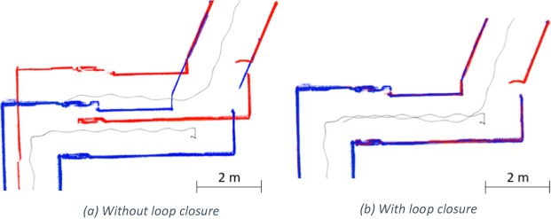
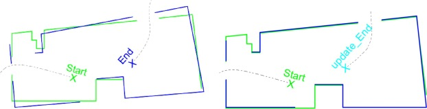
https://www.sciencedirect.com/science/article/pii/S1568494619302339 (Sorry for the horrible image quality!)
Lecture notes
This slide makes the drift problem from the last slide visible. It has two figures, from the paper at https://www.sciencedirect.com/science/article/pii/S1568494619302339 (sorry for the horrible image quality!).
The top figure has two panels showing the outline of a room. On the left, a green wall outline is scanned at the "Start" position, and a dashed gray path leads to an "End" position, where a second outline is drawn in blue. The two outlines should be the same walls, but the blue one is rotated and shifted relative to the green one, because the End pose from dead reckoning is wrong. On the right, the blue scan has been rotated and translated to match the green one. The outlines now overlap almost perfectly, and the corrected robot position is labeled "update_End".
The bottom figure shows real laser-scan maps of a corridor junction, with a 2 m scale bar and the robot's path in gray. Red and blue are two passes through the same place. In panel (a), without loop closure, the passes are offset by up to roughly a meter, so every wall appears doubled. In panel (b), with loop closure, the red and blue walls collapse into one consistent map.
Notice that each individual scan in (a) looks clean. This is the "locally correct, globally wrong" failure from the previous slide. The only clue that something is wrong is that the robot saw the same walls twice.
Before the next slide, ask yourself what information in panel (a) could tell the robot how far it has drifted.
107. The World (16/16)
If you are continuously going in a circle where every meter the wall changes color, and you end up drifting, is there something that might help you figure out if you have drifted or how to correct for that drift?
If the robot can detect that it has returned to a previously-mapped location…
…it immediately knows exactly how much total drift accumulated over the loop!
And it can then distribute that error correction backward through every pose in the loop
This is the single most important trick in modern SLAM - without it, long runs are impossible!
Lecture notes
This slide is all text under the title "The World." It opens with a question: if you keep driving in a circle where the wall changes color every meter, and you drift, is there something that could tell you that you drifted, or help you correct it? The answers follow, with key words in bold. If the robot can detect that it has returned to a previously mapped location, it immediately knows exactly how much total drift built up over the loop. It can then distribute that correction backward through every pose in the loop. The slide calls this the single most important trick in modern SLAM: without it, long runs are impossible.
Take a moment with the question before reading on. The colored walls are distinctive landmarks. When you see the same red stretch of wall again, you know you are back where you started, no matter what your odometry says. The gap between where dead reckoning thinks you are and where the recognized place says you are is the accumulated drift. This idea is called loop closure.
Loop closure fixes the doubled walls and warped corridors from the last two slides. The correction is not applied only to the final pose. A loop is a chain of small relative motions, and each step contributed a little error. So the correction is spread back across the whole chain, which straightens the whole map. In practice, "exactly" means as accurately as the scan match between the two visits.
How do you spread that correction in a principled way? That is the job of the SLAM back-end, which comes next.
108. The Back-End
Lecture notes
This section title slide reads "The Back-End" in large white text on the dark blue course background, which carries faint hand-drawn sketches of equations and diagrams.
On the last slide you saw that recognizing a revisited place, loop closure, reveals the total drift accumulated around a loop. The open question is how to spread that correction back through every pose. That job belongs to the SLAM back-end. Next, you compare it with the front-end, then build pose graphs and factor graphs to solve it.
109. Modern SLAM: Front-End vs Back-End
FRONT-END
- Runs at sensor rate (10-100 Hz)
- Input: raw LiDAR + odometry
- Output: relative transforms between consecutive poses
- Algorithms: ICP variants, RANSAC
- Job: produce the best short-term motion estimate
- Lives in the “now”
BACK-END
- Runs slower (1-5 Hz) or asynchronously
- Input: stream of relative transforms + loop detections
- Output: globally optimized trajectory
- Algorithms: Gauss-Newton, Levenberg-Marquardt
- Job: redistribute accumulated error globally
- Lives in the “history”
Lecture notes
This slide is a side-by-side comparison of the two halves of a modern SLAM system, laid out as two boxes with dark blue headers. The left box is the FRONT-END and the right box is the BACK-END. Each box lists the same six properties: rate, input, output, algorithms, job, and time horizon.
The front-end runs at sensor rate, 10 to 100 Hz. It takes raw LiDAR scans plus wheel odometry. It outputs relative transforms between consecutive poses. It uses the ICP variants you just learned, plus RANSAC. Its job is the best short-term motion estimate, so it lives in the "now."
The back-end runs slower, 1 to 5 Hz, or asynchronously, meaning whenever new information arrives rather than on a fixed clock. Its input is the stream of relative transforms from the front-end plus loop-closure detections. It outputs a globally optimized trajectory, using nonlinear least-squares solvers such as Gauss-Newton and Levenberg-Marquardt. Its job is to redistribute accumulated error across the whole run, so it lives in the "history."
This split answers the question from the drift slides. The front-end alone can only chain small relative motions together, so its errors pile up. Once a loop closure says "you have been here before," something has to go back and correct every earlier pose. That is the back-end's job.
A common misconception is that the back-end replaces scan matching. It does not. It depends entirely on the front-end's transforms and simply reconciles them. Next you see how the back-end represents that history: as a pose graph.
110. Pose Graphs
Lecture notes
This is a section title slide reading "Pose Graphs" in large dark blue letters on the orange Illinois background, with faint hand-drawn sketches of equations and diagrams as decoration. The footer reads Systems Engineering and Grainger Engineering.
You have just seen that the front-end produces relative transforms and the back-end corrects accumulated error. Now we look at the data structure the back-end works on: the pose graph, which stores robot poses as nodes and the measurements between them as edges.
111. The Pose Graph (1/4)
Forget point clouds for a moment. Think of SLAM as a physical spring network.
- nodes are the robot's poses at specific timestamps - one per keyframe
- edges are constraints between two poses – “these two nodes should be 1 m apart”
Each edge is a “spring” with a natural length (the measurement) and a stiffness (the confidence)
A loop closure is a new edge that suddenly pulls two distant nodes together
When the graph is “relaxed” to minimum energy, all edge tensions are balanced - and that's the optimal trajectory
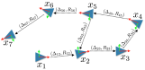
https://dellaert.github.io/files/Carlone16tro.pdf
Lecture notes
This slide introduces the data structure the back-end works on: the pose graph. Set point clouds aside and picture SLAM as a physical network of springs.
The figure, from Carlone et al. (dellaert.github.io/files/Carlone16tro.pdf), shows seven blue triangles labeled x_1 through x_7. Each triangle is a robot pose with small red and green axes showing its orientation. Dotted arrows connect consecutive poses: x_1 to x_2, x_2 to x_3, up to x_4, then back left through x_5, x_6 and x_7. Each arrow is labeled with a pair, Delta_ij and R_ij, the relative translation and rotation measured between pose i and pose j. One extra arrow, Delta_52 and R_52, runs from x_5 back down to x_2. That arrow is the loop closure.
The nodes are robot poses, one per keyframe. The edges are relative constraints, such as "these two nodes should be 1 m apart." Each edge acts like a spring. Its natural length is the measurement, which comes from the front-end's ICP or odometry. Its stiffness is how confident you are in that measurement. A confident scan match is a stiff spring, and noisy wheel odometry is a soft one.
Odometry edges alone form a chain, so drift accumulates with nothing to correct it. A loop closure adds a spring between two distant nodes and suddenly pulls them together. Relaxing the graph to minimum energy spreads that correction across every pose, and the balanced configuration is the optimal trajectory.
A common mistake is to treat edges as absolute positions. Edges are always relative. Only the nodes hold absolute poses, as the next slides develop.
To check your understanding: what happens to the trajectory if you make the loop-closure spring far stiffer than the odometry springs?
112. The Pose Graph (2/4)
https://federicosarrocco.com/blog/graph-slam-tutorial

Lecture notes
This slide makes the spring-network picture from the last slide concrete with a real example. It is a plot titled "Optimization Step 0," taken from Federico Sarrocco's Graph SLAM tutorial at https://federicosarrocco.com/blog/graph-slam-tutorial.
The plot shows the pose graph before any optimization has run. Blue dots joined by a blue line are the robot trajectory, one dot per node, or keyframe pose. The robot drives a back-and-forth lawnmower pattern. It starts at (0, 0) and sweeps five horizontal rows from x of about 0 to about 95, at y of roughly 0, 10, 20, 30 and 40. It ends near (93, 45) in the upper right.
The rows are not straight. The path is jagged and wobbly, and the turns at each end are kinked. That is odometry drift: each small motion estimate has some error, and the errors stack up.
Light green lines are the edges, the constraints. Many link poses within the same row. Others link poses in neighboring rows, where the robot revisits ground it has already scanned. A few long diagonal lines cross the whole plot, including one from the start pose all the way to the end. These are loop closures: places where scan matching recognized "I have been here before" and added a spring between two poses that are far apart in time.
The word "Step 0" matters. Here the springs are stretched and unbalanced. In the optimization steps that follow, the solver relaxes the network until the edge tensions balance, and the rows straighten out.
Quick check: which green edges do you expect to pull hardest on the trajectory, and why?
Next, we look closely at what a node stores and when you create one.
113. The Pose Graph (3/4)
A node xᵢ stores the absolute pose of the robot at time tᵢ: (xᵢ, yᵢ, θᵢ)
When would one want to create a new node? Why that frequency / reason?
Nodes are NOT created every sensor tick - only at 'keyframes' (e.g., after 30 cm of motion)
Keyframing bounds the graph size, keeping optimization real-time
A typical 30-minute mission produces 500-2000 nodes - tractable for modern CPUs
Each node can also anchor a submap, making the graph a skeleton of the world
https://dellaert.github.io/files/Carlone16tro.pdf
Lecture notes
This slide zooms in on the first ingredient of the pose graph: the nodes. On the right is the same seven-pose graph from the Carlone et al. paper (dellaert.github.io/files/Carlone16tro.pdf). Poses x_1 through x_7 are drawn as triangles with their own small coordinate frames, joined by dotted edges labeled with relative translations and rotations, plus the loop-closure edge from x_5 back to x_2. Node x_6 is boxed in red, and a red arrow points to it from the text: this is what one node is.
A node x_i stores the absolute pose of the robot at time t_i, written (x_i, y_i, theta_i): position x and y in the world frame plus heading theta. This is what the optimizer adjusts when it "relaxes the springs."
The slide asks when you should create a new node, so pause and answer it before reading on. The answer is not every sensor tick, only at keyframes, for example after 30 cm of motion. Two scans taken a few centimeters apart are nearly identical, so they add almost no new information but they do add unknowns. A LiDAR at 10 Hz produces 18,000 scans in 30 minutes. Keyframing reduces that to the 500 to 2000 nodes of a typical mission, which a modern CPU can optimize in real time. Many systems also add a keyframe after a large enough turn.
Each node can also anchor a submap, such as the local scan or grid captured at that pose. When the optimizer moves a node, its submap moves with it, so the graph becomes a skeleton of the world.
Next, the edges that connect these nodes.
114. The Pose Graph (4/4)
An edge zᵢⱼ connects node xᵢ to node xⱼ
It stores the expected relative pose: 'from node i's frame, node j should be here’
What would the sources of edge be from?
Edges come from two sources:
- odometry (between consecutive nodes) and
- loop-closure matches
Each edge also carries an information matrix - the spring stiffness
High information = stiff spring (trustworthy edge).
Low information = loose spring (noisy edge).
https://dellaert.github.io/files/Carlone16tro.pdf
Lecture notes
This slide reuses the pose graph figure from the Carlone et al. paper: seven robot poses, x_1 through x_7, each drawn as a triangle with its own small coordinate frame. Dotted arrows connect consecutive poses, and one extra edge runs from x_5 back down to x_2. A red box and a long red arrow highlight one edge, the one between x_5 and x_6, labeled (Delta_56, R_56): a relative translation Delta and a relative rotation R.
Last slide covered nodes, the absolute poses (x_i, y_i, theta_i) saved at keyframes. Now we look at edges. An edge z_ij connects node x_i to node x_j. It stores the expected relative pose: "from node i's frame, node j should be here." The edge is a measurement relative to node i, not an absolute position. The optimizer later moves the nodes so their actual relative poses agree with these edges as closely as possible.
The slide asks where edges come from, so pause and guess before reading on. There are two sources. The first is odometry, which links consecutive nodes, such as x_1 to x_2 from wheel encoders or ICP between successive scans. The second is loop-closure matches, which link non-consecutive nodes when the robot recognizes a place it has visited before. The x_5 to x_2 edge is a loop closure, and it is what lets the graph correct accumulated drift.
Think of each edge as a spring pulling two nodes toward their measured offset. Each edge carries an information matrix, which sets the spring stiffness. High information means a stiff spring, a trustworthy edge. Low information means a loose spring, a noisy edge. Next we look at that information matrix in detail.
115. The Information Matrix
If we trust an edge perfectly in X and Y but not in θ, information is high on X/Y and low on θ
What is the size for a 2D system? What about for a 3D system?
a 3x3 matrix for 2D, 6x6 for 3D
What does it mean for identity matrix?
All constraints are equally stiff, uncertainty is equal for all components
During optimization, each edge's contribution is weighted by its information - noisy edges contribute less
(information = inverse covariance)
High (uncertain) → low (soft spring). Low (certain) → high (rigid spring).
Lecture notes
This slide zooms in on the spring stiffness from the previous slide: the information matrix attached to every edge of the pose graph.
The slide opens with an example. If you trust an edge perfectly in x and y but not in theta, the information is high on the x and y entries and low on the theta entry. It then asks two questions and answers each. What size is the matrix? It is 3x3 for a 2D system, because a planar pose has three components: x, y and theta. It is 6x6 for a 3D system, because a 3D pose has x, y, z, roll, pitch and yaw. What does the identity matrix mean? All constraints are equally stiff, so the uncertainty is equal for every component and there are no correlations between them.
A highlighted box at the bottom gives the key equation: Omega = Sigma^(-1), read "Omega equals Sigma inverse." In words, information equals inverse covariance. The caption explains that a high Sigma, meaning an uncertain measurement, gives a low Omega, a soft spring. A low Sigma, meaning a certain measurement, gives a high Omega, a rigid spring. The caption's last symbol is a typo: it should read "high Omega."
Why does this matter? During optimization, each edge contributes an error cost of e^T * Omega * e, where e is the mismatch between the measured and current relative pose. A noisy edge has a small Omega, so it barely pulls on the graph. A trustworthy loop closure has a large Omega, so it dominates.
A common mistake is putting the covariance where the information belongs. That inverts your trust.
Next, we generalize pose graphs into factor graphs.
116. Factor Graphs
Lecture notes
This is a section title slide reading "Factor Graphs" in dark blue on the orange Grainger Engineering background, with faint hand-drawn sketches of equations, molecules and diagrams behind it.
You just saw the pose graph: poses linked by edges, each weighted by an information matrix that acts like spring stiffness. Pose graphs only connect poses to poses. Next, we generalize to factor graphs, which also track landmarks and sensor biases and let you fuse odometry, LiDAR, GPS and IMU measurements in one optimization.
117. The Factor Graphs (1/7)
Pose graphs connect poses to poses - but reality has more than just poses to track
Factor graphs have two types of nodes:
- Variables (poses, landmarks, biases)
- Factors (measurements)
Every sensor reading - LiDAR match, odometry, GPS, IMU becomes a factor
Now we can fuse many heterogeneous sensors in one graph!
GTSAM and Ceres libraries are built around this abstraction - and it's the industry standard today
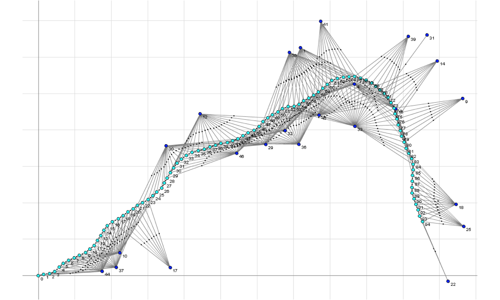
https://gtsam.org/2020/06/01/factor-graphs.html
Lecture notes
This slide generalizes the pose graph you just saw into a factor graph. The text points out that pose graphs only connect poses to poses, but a real robot has more to estimate than its own poses.
A factor graph has two kinds of nodes. Variables are the unknowns you want to solve for: robot poses, landmark positions, and sensor biases such as an IMU gyro bias. Factors are the measurements, and each one connects only the variables it constrains. Every sensor reading becomes a factor: a LiDAR scan match, an odometry step, a GPS fix, or an IMU reading. This is the payoff. You can fuse many heterogeneous sensors in one graph, and each factor carries its own information matrix, so noisy sensors count less, just as noisy edges did in the pose graph. The slide notes that the GTSAM and Ceres libraries are built around this abstraction and that it is the industry standard today.
The figure, from gtsam.org/2020/06/01/factor-graphs.html, shows a 2D SLAM factor graph. About 95 numbered robot poses, drawn in cyan, form a path that starts at the bottom left, arches up to a peak right of center, and drops steeply on the right. Odometry factors chain consecutive poses together. About 45 dark blue numbered landmarks are scattered around the path. Gray lines link each landmark to every pose that observed it, and a small black dot on each line marks a measurement factor.
A common mistake is to think a GPS fix links two poses. It is a unary factor: it attaches to a single pose variable.
Next, you will see how all of these factors combine into one optimization problem.
118. The Factor Graphs (2/7)
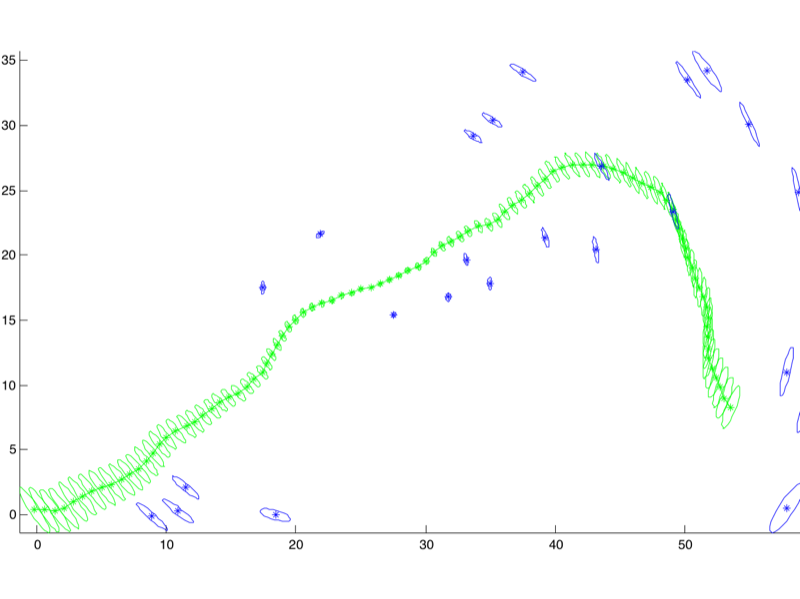

https://gtsam.org/tutorials/intro.html
Lecture notes
This slide shows what a solved factor graph looks like. Both plots come from the GTSAM tutorial at https://gtsam.org/tutorials/intro.html.
The left plot is landmark-based SLAM, with x from about 0 to 58 and y from 0 to 35. A green chain of robot pose estimates starts near the origin, rises to about (42, 27), then curves down to about (53, 8). Each pose carries an elongated uncertainty ellipse, and the ellipses grow toward the end of the path. Blue asterisks mark estimated landmarks, each with its own blue covariance ellipse. Landmarks far from the path, or seen only a few times, have larger ellipses.
The right plot is pose-only SLAM, in meters, roughly minus 10 to 5 horizontally and minus 5 to 7 vertically. The green line is the raw odometry estimate, which drifts badly. The blue line is the optimized trajectory, with an ellipse at every pose. Through the squares on the left the ellipses swell with distance traveled. On the right, the robot drives the same square repeatedly, and those loop closures keep its ellipses tiny.
The takeaway is that the optimizer returns two things: a best estimate of every variable, and its uncertainty. Uncertainty grows with dead reckoning and collapses when the same place or landmark is re-observed, because those extra factors constrain the graph.
Quick check: why does the right-hand square stay so certain? Next, you see how each edge's error is defined and summed into the total "strain" the optimizer minimizes.
119. The Factor Graphs (3/7)
Every edge contributes an error vector eᵢⱼ - how wrong this edge's prediction is, given the current node positions
The total “strain energy” is the sum of all edge errors, weighted by their information matrices
The job: find the set of node poses X = {x₁, …, xₙ} that minimizes this total strain
This is a nonlinear least-squares problem - we cannot solve it in one step
Lecture notes
This slide turns the factor graph into an optimization problem. It has four statements and one centered equation. Every edge contributes an error vector, e_ij, which measures how wrong that edge's prediction is given the current node positions. The total "strain energy" is the sum of all edge errors, weighted by their information matrices. The job is to find the set of node poses X = {x_1, ..., x_n} that minimizes this total strain. This is a nonlinear least-squares problem, so it cannot be solved in one step.
The equation reads: F of X equals the sum, over all pairs (i, j) in the constraint set C, of e_ij of x_i and x_j, transposed, times Omega_ij, times e_ij of x_i and x_j. In plain text: F(X) = sum over (i,j) in C of e_ij(x_i,x_j)^T * Omega_ij * e_ij(x_i,x_j).
Picture each edge as a spring between two poses. If the poses sit exactly where the measurement says they should, the spring is relaxed and contributes zero. If they are pulled apart or twisted, the spring stores energy. Omega_ij is the information matrix from a few slides ago, the inverse of the measurement covariance. It sets the spring's stiffness. A precise LiDAR match is a stiff spring, and noisy wheel odometry is a soft one. The optimizer relaxes the whole network until the total energy is as small as possible.
A common mistake is putting the covariance where Omega goes. Doing that makes uncertain measurements count the most, which is backwards.
The problem is nonlinear because the poses include headings, and rotations involve sines and cosines. That is why the solver linearizes and iterates, which is where the upcoming Taylor expansion and Gauss-Newton slides lead.
Quick check: what is F(X) for a perfectly consistent graph? It is zero. Next, we define exactly what e_ij computes.
120. The Factor Graphs (4/7)
What is the error vector?
It is the error between what the edge predicts and what the current layout sys.
Given absolute poses xᵢ and xⱼ, the implied relative pose is xᵢ⁻¹ ⊗ xⱼ
The edge predicts a specific relative pose, zᵢⱼ
The error is the “difference” between predicted and implied, expressed as a small pose correction
What should this error vector return at a minimum?
A perfect graph has zero error everywhere - every prediction matches every implied pose
Lecture notes
This slide opens with the cost function from the previous slide: F(X) = sum over (i,j) in C of e_ij(x_i, x_j)^T * Omega_ij * e_ij(x_i, x_j). In words, the total cost F of the set of poses X is the sum, over every edge (i, j) in the constraint set C, of the error vector transposed, times the information matrix Omega_ij, times the error vector again. Last slide called this the total strain energy. This slide defines the error vector itself.
The slide asks, "What is the error vector?" It answers that it is the error between what the edge predicts and what the current layout says. The slide text reads "sys"; it means "says."
A second equation follows: e_ij(x_i, x_j) = log( z_ij^-1 ⊗ (x_i^-1 ⊗ x_j) ). Read it from the inside out. You have the absolute poses x_i and x_j, so x_i^-1 ⊗ x_j is the relative pose they imply: where node j sits as seen from node i. The edge carries its own measurement z_ij, the relative pose that odometry or scan matching predicted. Composing z_ij^-1 with the implied pose gives the leftover transform between the prediction and the current layout. The log turns that small pose correction into an ordinary vector, such as (dx, dy, dtheta) in 2D.
The slide then asks what this error should return at a minimum. When prediction and layout agree, the inner transform is the identity and its log is zero. A perfect graph has zero error everywhere.
Two common mistakes to avoid. First, order matters: x_i^-1 ⊗ x_j is not x_j ⊗ x_i^-1. Second, real graphs have conflicting measurements, so the optimum gives the smallest weighted error, not zero.
Next, we unpack what ⊗ and log actually compute.
121. The Factor Graphs (5/7)
When you see (not the element-wise product), it means "apply transformation , then apply transformation .“ or “"If I am at , where do I think is based on my current map?"
Depending on how your poses are represented, this operator maps to specific mathematical operations:
- Homogeneous Transformation Matrices: If is a matrix in the Special Euclidean Group , is simply standard matrix multiplication.
- Quaternions/Rotations: If represents a rotation, is the quaternion product or rotation matrix multiplication.
- Translation + Rotation: It accounts for the fact that the second translation must be rotated by the first orientation before being added.
(the log is not an actual log, but maps the transformation matrix into a vector)
Lecture notes
The slide shows the full error equation for one edge of the factor graph, followed by an explanation of the circle-times symbol. In words: the error e_ij of the edge between nodes x_i and x_j equals the log of z_ij inverse composed with the quantity x_i inverse composed with x_j. In plain text: e_ij(x_i, x_j) = log( z_ij^(-1) ⊗ ( x_i^(-1) ⊗ x_j ) ).
The symbol ⊗ is pose composition, not an element-wise product. x_i ⊗ x_j means "apply transformation x_i, then apply transformation x_j." So x_i^(-1) ⊗ x_j answers the question: if I am at pose i, where does my current map say pose j is? That is the implied relative pose from the last slide. Composing it with z_ij^(-1) removes what the edge actually measured. If the map agrees with the measurement, the result is the identity transformation, meaning no motion at all.
How ⊗ is computed depends on how you represent poses. For homogeneous transformation matrices in the Special Euclidean group SE(3), it is ordinary matrix multiplication. For pure rotations, it is the quaternion product or rotation matrix multiplication. For a translation plus a rotation, the second translation must first be rotated by the first orientation and only then added.
The "log" on the slide is not a scalar logarithm. It maps the leftover transformation to a small vector, such as [dx, dy, dtheta]. The identity transformation maps to the zero vector, which is why a perfect graph has zero error.
A common mistake is to subtract pose vectors directly, as in x_j minus x_i. That ignores rotation and angle wrap-around. Next you see how this formula simplifies in 2D.
122. The Factor Graphs (6/7)
The standard error formulation simplifies in 2D as:
Lecture notes
This slide gives the pose-graph edge error twice: first in general form, then written out for a 2D robot like ours.
The top equation reads: e_ij of x_i and x_j equals log of ( z_ij inverse composed with ( x_i inverse composed with x_j ) ), or e_ij(x_i, x_j) = log(z_ij^-1 ⊗ (x_i^-1 ⊗ x_j)). Recall from the last slide that x_i^-1 ⊗ x_j is the relative pose the current map implies. Composing it with z_ij^-1 "undoes" the measured relative pose, and log turns the leftover small transformation into a vector.
Below it, the text says the standard error formulation simplifies in 2D as a stacked 3-by-1 vector. The top two entries are R_z transpose times ( R_i transpose times (t_j minus t_i), minus t_z ), written R_z^T(R_i^T(t_j - t_i) - t_z). The bottom entry is theta_j minus theta_i minus theta_z.
Here t_i and t_j are the x, y positions of the two poses. R_i is the 2-by-2 rotation matrix built from theta_i. The measurement z_ij has its own translation t_z, rotation R_z and angle theta_z. Read it step by step:
1. t_j - t_i is the offset between the poses in world coordinates.
2. Multiplying by R_i^T expresses that offset in robot i's frame.
3. Subtracting t_z compares it with what the edge measured.
4. R_z^T rotates that difference into the measurement frame.
Quick check: pose i is at the origin facing 0, pose j is at (1, 0) facing 0, and odometry says (0.9, 0, 0). The error is (0.1, 0, 0).
A common mistake is forgetting to wrap theta_j - theta_i - theta_z into the range -pi to pi. Without wrapping, a tiny real error can look like nearly 2*pi.
Notice that R_i contains cos(theta_i) and sin(theta_i). That is why the error is nonlinear, which the next slide addresses.
123. The Factor Graphs (7/7)
The error depends on θ through and making it non-linear
There is no closed-form solution like the SVD we used for vanilla ICP
We must solve iteratively:
- guess an initial X,
- linearize around it,
- step,
- repeat
Each step refines the guess, eventually the error stops dropping meaningfully
Classic tool for this: the Gauss-Newton algorithm, and its more robust cousin Levenberg-Marquardt
Lecture notes
This is a text-only slide titled "The Factor Graphs." It makes five points. First, the error depends on theta through sin and cos, which makes it nonlinear. Second, there is no closed-form solution like the SVD we used for vanilla ICP. Third, we must solve iteratively, in four numbered steps: guess an initial X, linearize around it, take a step, and repeat. Fourth, each step refines the guess, until the error stops dropping meaningfully. Fifth, the classic tools for this are the Gauss-Newton algorithm and its more robust cousin, Levenberg-Marquardt.
Look back at the 2D error from the previous slide. The relative translation between two poses is rotated by the heading theta, so terms like cos(theta_i)*(x_j - x_i) + sin(theta_i)*(y_j - y_i) appear. Because theta sits inside sin and cos, the total squared error is not a simple quadratic in the unknowns. Here X means all the poses in the graph stacked into one vector. Setting the derivative to zero no longer gives a linear system you can solve in one shot.
So we iterate. Start from a reasonable guess, usually the poses from integrating wheel odometry. Approximate the error as linear near that guess, solve the resulting least-squares problem for a small correction, apply it, and repeat. Stop when the drop in error per iteration becomes tiny.
Gauss-Newton does exactly this. Levenberg-Marquardt adds a damping term that shrinks the step when the linear approximation is poor, which makes it safer far from the solution.
A common pitfall is a bad initial guess. Iterative solvers can then settle into a wrong local minimum. Next, we carry out step one: linearizing with a Taylor expansion.
124. The Factor Graphs – Taylor Expansion (1/6)
Step 1. Linearizing with Taylor Expansion,
Assume our current guess is close to the true optimum
Parametrize the correction as a small perturbation
is the Jacobian, partial derives of the error with respect to ALL poses!
Lecture notes
This slide begins the Gauss-Newton recipe from the previous slide. Its heading reads "Step 1. Linearizing with Taylor Expansion." Below that are two statements: assume our current guess X is close to the true optimum X-star, and parametrize the correction as a small perturbation delta x. A centered equation follows: e_ij(X ⊗ delta x) ≈ e_ij(X) + J_ij * delta x. In words, the error on edge i-j, evaluated at the guess X with the small correction delta x applied, is approximately the error at the current guess plus the Jacobian J_ij times delta x. The last line says J_ij is the Jacobian, the partial derivatives of the error with respect to all poses, with "ALL" in bold.
The key idea is that the error is nonlinear because of the sines and cosines of theta, but any smooth function looks like a straight line if you zoom in close enough. That is a first-order Taylor expansion. If X is already near the answer, you can replace the hard nonlinear problem with a linear one in delta x, which you can solve exactly.
The circled-times symbol ⊗ means "apply the perturbation to the poses." For x and y it is plain addition, but for headings it must compose rotations and wrap angles correctly. That is why the slide does not write a simple plus.
A common mistake is forgetting the assumption: the linearization only holds near the guess. With a poor initial X, which odometry usually provides, Gauss-Newton can settle in a wrong minimum.
Next, look at the bold "ALL": what shape does J_ij have, and how many of its entries are actually nonzero?
125. The Factor Graphs – Taylor Expansion (2/6)
The Jacobian Jᵢⱼ has as many rows as the error dimension (3 for 2D poses)
And as many columns as the total number of optimization variables
How many neighbors do each of the pose have?
Edges only have 2 poses, most poses do not have a lot of neighbors
Most entries are ZERO - an edge only touches two poses, so only those columns are non-zero
This sparsity is what makes graph SLAM scale to thousands of nodes!
Modern autodiff libraries (Ceres, GTSAM) compute Jacobians automatically - no manual derivation
Lecture notes
This slide is all text, under the title "The Factor Graphs – Taylor Expansion." It asks what shape the Jacobian J_ij from the previous slide has, and why that shape matters.
Recall the linearization: e_ij(X + delta_X) ≈ e_ij(X) + J_ij*delta_X. That reads as "the error of edge i-j at the perturbed state is approximately the current error plus the Jacobian times the perturbation." The slide states that J_ij has as many rows as the error dimension. For 2D poses that is 3, one each for x, y and theta. It has as many columns as the total number of optimization variables. With N poses of 3 variables each, J_ij is 3 by 3N.
The slide then asks how many neighbors each pose has. The answer is not many, because every edge connects exactly two poses. So most entries of J_ij are zero. Only the columns belonging to pose i and pose j are non-zero.
To make this concrete, take a map with 1000 poses. J_ij has 3000 columns, and only 6 of them are non-zero, which is 0.2 percent. The slide stresses that this sparsity is what makes graph SLAM scale to thousands of nodes. Sparse solvers skip the zeros entirely instead of storing and multiplying them.
Finally, the slide notes that you rarely derive Jacobians by hand in practice. Automatic differentiation libraries such as Ceres and GTSAM compute them for you.
Quick check: if you switch to 3D poses with 6 variables each, what size is J_ij, and how many columns are non-zero? The answer is 6 by 6N, with 12 non-zero columns.
On the next slide, you see this "ribbon of zeros" picture explicitly, with its two non-zero blocks A_ij and B_ij.
126. The Factor Graphs – Taylor Expansion (3/6)
The resulting matrix is a wide ribbon of zeros, interrupted only by two non-zero blocks:
: The block of derivatives with respect to .
: The block of derivatives with respect to .
Lecture notes
This slide shows what the Jacobian of a single edge actually looks like. The text says the resulting matrix J_ij is a wide ribbon of zeros, interrupted only by two non-zero blocks. The centered equation reads: J_ij equals the partial derivative of e_ij with respect to X, which equals a row of blocks: zero, dots, A_ij, dots, B_ij, dots, zero. In plain text, J_ij = d(e_ij)/dX = [0 ... A_ij ... B_ij ... 0]. Below it, two definitions: A_ij is the 3 by 3 block of derivatives with respect to x_i, and B_ij is the 3 by 3 block of derivatives with respect to x_j.
Here is why the matrix is so wide. X stacks every pose in the graph, and each 2D pose has three numbers (x, y, theta). With N poses, X has 3N entries, so J_ij has 3 rows and 3N columns. The error e_ij depends only on poses i and j, so its derivative with respect to every other pose is exactly zero. The only non-zero columns are the three belonging to x_i, which form A_ij, and the three belonging to x_j, which form B_ij.
To make this concrete, take a graph with 1000 poses. That gives 3000 columns, and only 6 of them are non-zero. This is the sparsity from the previous slide, and it is what lets solvers like Ceres and GTSAM handle thousands of nodes.
Quick check: if pose 5 is connected only to poses 4 and 6, how many edge Jacobians have a non-zero block in pose 5's columns? The answer is two.
Next, you derive A_ij explicitly, splitting it into translational and rotational parts.
127. The Factor Graphs – Taylor Expansion (4/6)
Block (Derivative w.r.t )
We differentiate the error with respect to (translation) and (rotation):
Translational part:
Rotational part: requires deriving the rotation matrix .
Lecture notes
This slide begins the hand derivation of the Jacobian blocks from the previous slide. At the top is the 2D pose-graph error function. In words: e sub ij of x_i and x_j is a stacked vector. The top entry is R_z transpose times the quantity R_i transpose times (t_j minus t_i), minus t_z. The bottom entry is theta_j minus theta_i minus theta_z. In plain text: e_ij(x_i, x_j) = [ R_z^T*(R_i^T*(t_j - t_i) - t_z) ; theta_j - theta_i - theta_z ].
Here R_i and t_i are the rotation matrix and position of pose i, and R_z, t_z and theta_z are the measured relative pose from odometry or scan matching. So the error asks: where does pose j appear when viewed from pose i, and how far is that from what the sensor reported? The top two rows are the translation error and the bottom row is the heading error, giving the 3 rows mentioned on the previous slide.
Under the heading "Block A_ij (derivative with respect to x_i)", the slide splits pose i into its translation t_i and its rotation theta_i. In plain text: A_ij = de_ij/dx_i = [ de_ij/dt_i , de_ij/dtheta_i ].
The translational part is easy because t_i enters linearly with a minus sign: de_ij/dt_i = -R_z^T*R_i^T, a 2 by 2 block. The heading row does not contain t_i, so its derivative with respect to t_i is zero.
The rotational part is harder because theta_i is hidden inside R_i^T. You must differentiate the rotation matrix itself, and that is the subject of the next slide.
Quick check: why does t_j - t_i get multiplied by R_i^T? It rotates the world-frame displacement into pose i's own frame, which is the frame the measurement was taken in.
128. The Factor Graphs – Taylor Expansion (5/6)
Let be the derivative of w.r.t .
Putting it into a matrix:
(Note: )
Lecture notes
This slide finishes the Jacobian block A_ij, the derivative of one edge's error with respect to pose x_i. At the top is the error function from before: e_ij(x_i, x_j) = [ R_z^T (R_i^T (t_j − t_i) − t_z) ; theta_j − theta_i − theta_z ]. In words, the top two entries are the translation error. You take the difference of the two positions, rotate it into frame i with R_i transpose, subtract the measured offset t_z, and rotate by R_z transpose. The bottom entry is the heading error: theta_j minus theta_i minus the measured rotation theta_z.
The slide defines R_i'^T as the derivative of R_i^T with respect to theta_i. Since R_i^T = [cos theta_i, sin theta_i; −sin theta_i, cos theta_i], differentiating each entry gives the note at the bottom: R_i'^T = [−sin theta_i, cos theta_i; −cos theta_i, −sin theta_i].
These pieces form the 3 by 3 matrix A_ij = [ −R_z^T R_i^T , R_z^T R_i'^T (t_j − t_i) ; 0 0 , −1 ]. The first two columns are derivatives with respect to t_i, and the third column is with respect to theta_i. The top-left 2 by 2 block has a minus sign because t_i enters the error as −t_i. The top-right 2 by 1 column comes from the chain rule: only R_i^T depends on theta_i, so you replace it with its derivative. The bottom row says the heading error does not depend on position, so those entries are 0 0. Its derivative with respect to theta_i is simply −1.
A common mistake is forgetting the minus signs, or differentiating R_i instead of R_i transpose. Quick check: what would the bottom row of B_ij be? Next you build B_ij, the derivative with respect to x_j, which is much simpler.
129. The Factor Graphs – Taylor Expansion (6/6)
Block (Derivative w.r.t )
This one is much simpler because appears linearly in the error function and isn't rotating any coordinate frames.
Putting it into a matrix:
Lecture notes
This slide finishes the Jacobian of the edge error by computing the second block, B_ij, the derivative with respect to the later pose x_j.
At the top is the error function from the previous slides. In words, e_ij of x_i and x_j is a stacked vector. The top two entries are R_z transpose times the quantity (R_i transpose times (t_j minus t_i), minus t_z). The bottom entry is theta_j minus theta_i minus theta_z. In plain text: e_ij = [ R_z^T*(R_i^T*(t_j - t_i) - t_z) ; theta_j - theta_i - theta_z ]. Here t and theta are each pose's position and heading, R_i is the rotation for pose i, and t_z, R_z, theta_z describe the measured relative pose z_ij.
The slide notes that this block is much simpler because x_j enters the error linearly and does not rotate any coordinate frame. B_ij = d e_ij / d x_j is split into two column blocks: the derivative with respect to t_j and the derivative with respect to theta_j.
The final 3 by 3 result is B_ij = [ R_z^T*R_i^T , [0;0] ; 0 0 , 1 ]. The top-left 2 by 2 block is R_z^T*R_i^T, because t_j is just multiplied by those fixed rotations. The top-right column is zero because theta_j never appears in the translation error. The bottom row is 0, 0, 1: the angle error does not depend on t_j and changes one-for-one with theta_j.
Compare this with A_ij on the last two slides. A_ij carries minus signs and the extra derivative of R_i^T, because rotating frame i moves everything.
Quick check: why is there no theta_j term in the top rows? Because pose j's position is expressed in frame i, so only pose i's heading rotates it.
With A_ij and B_ij in hand, the next slide assembles them into the Gauss-Newton normal equations.
130. The Factor Graphs – Gauss-Newton Normal Equations (1/4)
Step 2: Gauss-Newton Normal Equations
Substituting the Taylor approximation and minimizing yields a linear system in
The matrix aggregates the “stiffness” of every edge at the current guess
The vector aggregates the “pulling force” of every edge at the current guess
Solve once, apply to all poses, re-linearize, repeat until convergence
, where and
The heart of every graph-SLAM solver
Lecture notes
This slide, titled "The Factor Graphs – Gauss-Newton Normal Equations," is Step 2 of the optimization. It says that substituting the Taylor approximation and minimizing gives a linear system in delta x, the correction to the poses. A highlighted yellow box holds the key equation: H times delta x equals negative b, written H*Δx = −b, where H is the sum over all edges of J transpose times Omega times J, H = Σ J^T*Ω*J, and b is the sum over all edges of J transpose times Omega times e, b = Σ J^T*Ω*e. The caption under the box reads "The heart of every graph-SLAM solver." Below the box, the slide says H aggregates the "stiffness" of every edge at the current guess, b aggregates the "pulling force" of every edge, and you solve once, apply delta x to all poses, re-linearize, and repeat until convergence.
Here is the step the slide skips. The total cost is F = Σ e^T*Ω*e. On the last slides you built the Jacobian blocks, so each edge error is now linearized as e(x + Δx) ≈ e + J*Δx. Plug that in and expand. You get a constant, plus 2*b^T*Δx, plus Δx^T*H*Δx, which is a quadratic bowl in delta x. Setting its derivative to zero gives H*Δx = −b.
The spring picture helps. Each edge is a spring. J^T*Ω*J is how stiff that spring is, and J^T*Ω*e is how hard it pulls given its current stretch. Each edge touches only two poses, so H is sparse, and that sparsity is why large graphs solve fast.
A common mistake is to stop after one solve. The Jacobians depend on the current guess, so you must re-linearize every iteration.
Quick check: what does a large Omega on one edge do to H?
The next slide gives the dimensions of every one of these terms.
131. The Factor Graphs – Gauss-Newton Normal Equations (2/4)
: Total number of poses (nodes) in your graph.
: Degrees of freedom per pose (for 2D, , representing ).
: Dimension of a single edge measurement (for a 2D relative pose constraint, ).
- Error Vector ():
- Information Matrix ():
- Jacobian Matrix ():
- Global Info Matrix ():
- Global Info Vector ():
- Update Vector ():
, where and
The heart of every graph-SLAM solver
Lecture notes
This slide repeats the boxed equation from the previous slide, "the heart of every graph-SLAM solver": H times delta x equals minus b, written H · Δx = −b. Here H equals the sum over all edges of J transpose times Omega times J, H = Σ J^T Ω J, and b equals the sum over all edges of J transpose times Omega times e, b = Σ J^T Ω e. Below the box, the slide defines three sizes and then lists the dimension of every term.
The three sizes are N, k and d. N is the total number of poses, or nodes, in your graph. k is the degrees of freedom per pose; in 2D, k = 3, for x, y and theta. d is the dimension of one edge measurement; a 2D relative pose constraint also has d = 3.
The per-edge terms come first. The error vector e_ij is d by 1, and the information matrix Omega_ij is d by d. The Jacobian J_ij is d by (k·N), because it is written against the full state of all poses.
Then the global terms. H is (k·N) by (k·N), and b and the update Δx are both (k·N) by 1.
Check the shapes yourself. J^T Ω J is (kN by d) times (d by d) times (d by kN), which gives kN by kN. J^T Ω e is (kN by d) times (d by d) times (d by 1), which gives kN by 1.
A key detail is that J_ij is almost entirely zeros. An edge connects only poses i and j, so only those two k-wide column blocks are nonzero. Each edge therefore adds to only four k by k blocks of H.
A common mistake is to confuse k with d, or to drop the minus sign on b.
Quick check: for a 3D robot with 6-DOF poses, what is k, and how large is H for 1,000 poses? (k = 6, so H is 6,000 by 6,000.)
Next, you see how Levenberg-Marquardt makes this solve robust, and then why H's size, for example 30,000 by 30,000 for 10,000 2D poses, demands sparse solvers.
132. The Factor Graphs – Gauss-Newton Normal Equations (3/4)
Gauss-Newton is fast near the optimum but unstable far from it, can be near-singular
Levenberg-Marquardt (L-M) adds a damping factor to the diagonal of H:
Large → behaves like slow, safe gradient descent (small, conservative steps)
Small → behaves like fast Gauss-Newton (full-size, ambitious steps)
is adaptively tuned at runtime, shrunk on successful steps, grown after failures
(you just need to know that it is used for robustness)
Lecture notes
This slide continues from the Gauss-Newton normal equations, H*delta_x = -b. It is all text plus one centered equation. The first line says Gauss-Newton is fast near the optimum but unstable far from it, because H can be near-singular. The fix is Levenberg-Marquardt, abbreviated L-M, which adds a damping factor lambda to the diagonal of H. The equation reads: H plus lambda times the identity matrix, times delta x, equals negative b, written (H + lambda*I) * delta_x = -b.
Why the problem? Gauss-Newton trusts the linearization fully. Far from the solution, the Taylor approximation can be poor, so a full step can overshoot and increase the error. H can also be nearly singular, for example when some direction in the graph is barely constrained. Then the solve produces huge, meaningless steps.
The slide gives two limits. With large lambda, H + lambda*I is dominated by lambda*I, so delta_x is roughly -b/lambda. That is a small step in the direction of steepest descent, which is slow but safe. With small lambda, the equation reduces to plain Gauss-Newton, with full-size, ambitious steps. Adding lambda*I also keeps the matrix well conditioned and invertible.
Lambda is tuned automatically while the solver runs. If a step reduces the total error, the solver accepts it and shrinks lambda, behaving more like Gauss-Newton. If the error grows, it rejects the step and grows lambda.
As the slide says, you only need to know that L-M is used for robustness. Solvers such as g2o, GTSAM and Ceres do this for you.
Quick check: if the solver keeps rejecting steps, which way is lambda heading? (It keeps growing, so the steps become smaller and closer to gradient descent.)
Next, we look at how to actually solve this large linear system efficiently.
133. The Factor Graphs – Gauss-Newton Normal Equations (4/4)
How would one solve this system of equation for ?
, where and
What is the problem? Think computationally.
For a 10,000-pose graph in 2D, has the size of , is a 30,000 × 30,000 matrix - 900 million entries
Dense inversion would take minutes and gigabytes - completely infeasible!
But remember that was sparse, so 99.9% is zero and is thus also sparse!
Sparse solvers exploit this structure: they only store non-zeros and skip zero rows/columns!
Cholesky decomposition of a sparse runs in milliseconds, not minutes
Lecture notes
This slide asks a practical question: once you have the Gauss-Newton normal equations, how do you actually solve them for the update Δx? The slide shows the system H · Δx = −b, read as "H times delta x equals negative b," where H = Σ Jᵀ Ω J (the sum over all edges of J transpose times omega times J) and b = Σ Jᵀ Ω e (the sum of J transpose times omega times the error e). It then prompts you: what is the problem, thinking computationally?
The problem is size. H is (k·N) × (k·N). For a 2D graph each pose has k = 3 degrees of freedom (x, y, theta), so 10,000 poses give a 30,000 × 30,000 matrix with 900 million entries. Stored as 8-byte doubles that is about 7 gigabytes. Inverting or factoring it as a dense matrix would take minutes, which is infeasible when the robot needs updates while it drives.
The way out is sparsity. Each edge connects only two poses, so its Jacobian J is zero everywhere except two 3-column blocks. As a result, about 99.9 percent of H is zero. H has nonzero 3×3 blocks only on the diagonal and where two poses share an edge. Sparse solvers store only the nonzeros and skip the zero rows and columns.
Because H is symmetric and positive definite, you factor it with Cholesky decomposition, H = L·Lᵀ, where L is lower triangular. You then solve for Δx by forward and back substitution. For a sparse H this runs in milliseconds.
A common mistake is to write Δx = −H⁻¹·b and compute the inverse explicitly. Never form H⁻¹: it is dense even when H is sparse.
Next, you add loop-closure edges, which put a few off-diagonal blocks into H while keeping it sparse.
134. Loop Closure
Lecture notes
This section divider reads "Loop Closure" in large dark blue text on the orange Illinois background, with faint decorative sketches of equations and diagrams behind it.
You now know how the back-end optimizes a sparse factor graph quickly. But odometry and scan-matching edges alone still accumulate drift. Loop closure is how you fix that: when the robot recognizes a place it has visited before, it adds an edge from the current pose back to the old one, and the optimizer then spreads the correction across the whole trajectory.
135. Detecting Loop Closure (1/8)
Loop closure:
- The front-end periodically compares the current scan against historical keyframe scans
- Candidate matches are ranked by scan-match score (after an initial coarse filter)
- A candidate is promoted to a loop closure only when its score exceeds a strict threshold
- To avoid false positives, some systems also require geometric consistency across nearby frames
- When confirmed, a new edge is added connecting current pose back to the matched historical pose
Lecture notes
This slide is a text-only overview titled "Detecting Loop Closure." It lists five numbered steps that take you from "have I been here before?" to an actual change in the pose graph.
Step one: the front-end periodically compares the current LiDAR scan against historical keyframe scans. A keyframe is a stored pose and scan, saved when the robot has moved far enough, so you are not comparing against every scan ever taken.
Step two: candidate matches are ranked by a scan-match score. This happens after an initial coarse filter removes obviously impossible candidates.
Step three: a candidate is promoted to a loop closure only when its score exceeds a strict threshold.
Step four: to avoid false positives, some systems also require geometric consistency across nearby frames. For example, the frames just before and after should agree on the same relative pose.
Step five: once a match is confirmed, a new edge is added to the pose graph, connecting the current pose back to the matched historical pose.
Why so strict? A missed loop closure only means drift stays uncorrected a little longer. A false loop closure tells the optimizer that two different places are the same place. The Gauss-Newton solver from the last few slides then faithfully warps the whole map to satisfy that wrong constraint. Being conservative is the right trade-off.
That new edge is exactly the kind of sparse constraint the sparse Cholesky solver handles in milliseconds. One edge reaching far back in time is what pulls accumulated drift out of the whole trajectory.
Quick check: which costs more on your robot, a missed loop closure or a false one?
Next, you see how this runs in software as a separate worker thread, followed by a closer look at each step, starting with the coarse filter.
136. Detecting Loop Closure (2/8)
![Software architecture diagram of the SLAM system. External C/C++ LiDAR and odometry processes write to shared memory (/lslam_lidar: 228 by 2 float32 points per sweep; /lslam_odom: x, y, theta) and signal Python reader threads via semaphores. Readers feed lidar_q and odom_buffer to the SLAM main loop, which updates the iSAM2 factor graph. The main loop sends new keyframe indices through loop_in_q to a LoopClosureWorker thread. The worker reads keyframe scans and poses under slam_lock and returns relative pose and RMSE through loop_out_q.](L24-25_files/efe5ec454a87.svg)
Lecture notes
This slide shows the software architecture of our SLAM system, so you can see where loop closure detection actually runs.
On the left are two external C/C++ processes. The LiDAR Driver writes each sweep into a shared-memory block called /lslam_lidar, which holds a sequence number, a timestamp, a sweep count, and 228 by 2 float32 points. The Odometry Node writes /lslam_odom, which holds a sequence number, a timestamp, and x, y, theta. After each write, the process calls sem_post on a named semaphore (/lslam_lsem or /lslam_osem). A matching Python reader thread, LidarReader or OdomReader, is blocked in sem_wait. It wakes, copies the data, and pushes it into lidar_q (a queue) or odom_buffer (a deque).
In the center, the SLAM Main Loop, the orchestrator thread, consumes those buffers. It updates factors in the iSAM2 factor graph (gtsam::ISAM2) and gets back the pose estimate. When it creates a new keyframe, it sends only that keyframe's index through loop_in_q to a separate LoopClosureWorker thread.
The worker reads the stored keyframe scans and poses (kf_scans, kf_poses) under slam_lock. It has read-only access, while the main loop has read/write access. It returns a relative pose and its RMSE through loop_out_q, and the main loop decides whether to add a loop-closure edge to the graph.
Why the extra thread? Scan matching against old keyframes is slow. If it ran inline, the main loop would fall behind the sensors. The lock keeps the worker from reading a list the main loop is halfway through appending to. A common mistake is to hold that lock for the whole scan match instead of copying the data and releasing it.
Even in its own thread, matching against every keyframe is too expensive, which is why the next slide adds a coarse filter.
137. Detecting Loop Closure – Coarse Filter
The initial Coarse Filter,
The front-end periodically compares the current scan against historical keyframe scans.
Comparing the current scan to every single historical frame is computationally too expensive for real-time systems.
What can we do? (hint: technique used in ICP)
We apply an initial coarse filter using spatial data structures like KD-Trees to find poses within a specific radius (e.g., 2.5 meters) before running full alignment.
For our specific robot what another filter could we use?
We also apply a heading limit filter to instantly reject candidates facing a completely different direction. We can do this because our LiDAR is only 240 degrees of FOV, so it can’t see the back.
Lecture notes
This slide, titled "Detecting Loop Closure – Coarse Filter," is text only. It repeats that the front-end periodically compares the current scan against historical keyframe scans, and notes that comparing against every single historical frame is too expensive for a real-time system. It then poses two questions, each followed by a centered answer.
The first question asks what we can do, with the hint "technique used in ICP." The answer: apply a coarse filter using a spatial data structure such as a KD-Tree to find keyframe poses within a specific radius, for example 2.5 meters, before running full alignment. Recall that ICP used KD-Trees to find nearest neighbor points quickly. Here you build the tree over keyframe positions (x, y) instead of scan points, so a radius query returns only nearby candidates. Each query costs roughly log(N) time instead of N full scan matches.
The second question asks what other filter fits our specific robot. The answer is a heading limit filter, which instantly rejects candidates facing a completely different direction. This works because our LiDAR has only a 240 degree field of view and cannot see behind itself. Two poses at the same spot but facing opposite ways see different walls, so their scans will not match anyway.
A common mistake is choosing the radius too small. The search uses the drifted pose estimate, so if drift exceeds the radius, the true match is never considered.
This is the first stage of the LoopClosureWorker pipeline from the previous slide. Next, voxelization makes the surviving candidates cheaper to score.
138. Detecting Loop Closure – Voxelization
Raw LiDAR scans produce thousands of points per sweep (for more expensive sensors, ours only has 228!), many hitting the same flat surfaces redundantly.
What can we do to reduce the amount of computation?
Why process 50 points on a flat wall when 1 point could reliably represent that entire local area?
Voxelization divides the 2D space into a grid of 'cells' (voxels).
All points falling inside the same cell are averaged into a single representative point, massively speeding up the scan-matching pipeline.
This can divide the number of LiDAR points but 10x (thus 10x or more computational gains!)
If we set the voxel size too large (e.g., 1 meter), how would that affect our ability to detect small obstacles like chair legs?
Lecture notes
This slide is titled "Detecting Loop Closure – Voxelization." It is text only, with no figures. It covers a second way to cut computation before scan matching: reduce the number of points in each scan.
The slide notes that raw LiDAR scans from expensive sensors produce thousands of points per sweep, while our robot's LiDAR gives only 228. Many of those points land on the same flat surfaces and add little new information. The slide then asks why you would process 50 points on a flat wall when one point could represent that whole local area.
The answer is voxelization. You divide the 2D space into a grid of cells, called voxels, which is short for volume elements; in 2D they are really square pixels of space. Every point that falls inside the same cell is averaged into one representative point, its centroid. For example, with 5 cm cells, all the wall hits inside one 5 cm square collapse into a single point. The slide states this can cut the point count by about 10x, giving 10x or more computational savings. The savings can exceed 10x because building the KD-tree and running the nearest-neighbor searches inside ICP both get cheaper as the cloud shrinks.
This follows the coarse filter on the previous slide. There we cut the number of candidate keyframes; here we cut the number of points per scan. Next, these downsampled points feed the scan-match scoring step.
The slide ends with a check question: what happens with a 1 meter voxel? A chair leg returns only a few points. Those points get averaged together with nearby floor or wall returns, so the leg's shape is lost and its location shifts. Corners also get rounded off. Voxel size is therefore a trade-off between speed and geometric detail. Choose it relative to the smallest feature you need to keep.
139. Detecting Loop Closure – Scan-Match Scoring (1/6)
For Scan-Match Scoring
We start with an initial guess (often from high-frequency IMU/odometry integration) and transform the incoming scan points into the global frame.
To measure the error, we need to know which new point corresponds to which historical point in the map.
Instead of checking every single point in the map, we use the cached KD-Tree to rapidly find the two nearest neighbors for each transformed point.
Lecture notes
This slide is text only, titled "Detecting Loop Closure – Scan-Match Scoring." It lists the first three steps of scoring how well the current scan matches a candidate historical keyframe: start from an initial pose guess, transform the scan into the global frame, and find correspondences using a cached KD-Tree.
At this point the coarse filter has narrowed the candidate keyframes by radius and heading, and voxelization has thinned the points. Now you need a number that says how well the current scan lines up with a candidate.
The first step is the initial guess. This usually comes from integrating the IMU and wheel odometry at high frequency. It is good enough to start from, but it carries drift. You use that guess to move every scan point from the robot frame into the global frame: p_global = R(theta)*p_robot + t, where R(theta) is the rotation by the guessed heading and t is the guessed position.
The second step is data association. To measure error, each new point has to be paired with the map point it most likely corresponds to. Checking every map point is order N work per point, which is too slow. The KD-Tree built for that keyframe is cached, so it is not rebuilt for every query. Each nearest-neighbor search then costs roughly order log N.
Why two nearest neighbors instead of one? Two points define a line segment. That lets you measure point-to-line distance, as in PL-ICP from earlier in the lecture, which suits walls seen by a 2D LiDAR.
Quick check: what happens to these correspondences if the odometry guess is badly off? Some of them will be wrong. That sets up the next slide, which covers rejecting bad associations.
140. Detecting Loop Closure – Scan-Match Scoring (2/6)
Before calculating how to correct the pose, we must filter out bad associations (e.g., points hitting a person walking by).
- First, we reject target pairs that are too far apart, as they likely bridge a gap rather than form a solid surface (objects too far away for the LiDAR or such potential errors).
- Second, we sort the residuals and drop the worst percentage (e.g., rejecting the top 15% of errors). This is called Trimming or Trimmed ICP.
- Finally, we apply Huber Loss weights: small errors get a full weight of 1.0, while large errors are scaled down inversely to their magnitude.
Why is scaling down the weight of a mildly large error via Huber Loss often better than simply applying a hard cutoff and deleting the point entirely?
Huber Loss prevents the complete loss of information for mildly large errors
Lecture notes
This slide is text only. It says that before you compute a pose correction, you must filter out bad associations, such as LiDAR points that hit a person walking by. It then lists three filtering steps and ends with a question and its answer.
On the last slide, the KD-tree gave each transformed scan point its two nearest map neighbors. Those two neighbors form the target line for point-to-line ICP. Not every pairing is trustworthy, though, so we filter in three stages.
First, you reject target pairs whose two map points are too far apart. A wide gap usually means the "line" bridges empty space, for example a doorway or an object beyond the LiDAR's reliable range, rather than lying on a solid surface.
Second, you sort the residuals, meaning the point-to-line errors, and drop the worst percentage, for example the top 15 percent. This is called trimming, or Trimmed ICP. It works even when you do not know the outlier threshold in advance.
Third, you apply Huber loss weights. If the residual magnitude |r| is at most a threshold delta, the weight is 1.0. Otherwise the weight is w = delta / |r|, so a larger error gets a smaller influence.
The slide asks why scaling down a mildly large error beats deleting it with a hard cutoff. The answer on the slide is that Huber loss prevents the complete loss of information. A point slightly off because of noise, or because the initial guess is still imperfect, still pulls the solution in the right direction, just more gently.
A common mistake is to set the trim percentage or delta so aggressively that you throw away good points early in the iterations, when every residual is still large.
Next, you see the Huber loss curve plotted against the ordinary squared loss.
141. Detecting Loop Closure – Scan-Match Scoring (3/6)
The Huber loss is a very common robust loss metric that ensures that we do not give too much weight to large errors,
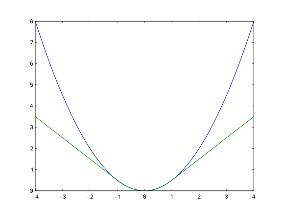
Lecture notes
This slide gives the formula and the picture behind the Huber weighting from the previous slide, the last step of our outlier filtering before we decide which points count as inliers.
The text says the Huber loss is a very common robust loss metric that keeps us from giving too much weight to large errors. The weight equation is w(e) = 1 if |e| < delta, else delta/|e|. In words: the weight of a residual e is one when the absolute error is below a threshold delta; otherwise it is delta divided by the absolute error.
The plot shows loss versus error from minus 4 to 4. The blue curve is the ordinary squared loss, one half e squared, a parabola that climbs to 8 at both ends. The green curve is the Huber loss with delta = 1. It matches the parabola exactly between minus 1 and 1, then continues as straight lines, reaching only 3.5 at plus and minus 4. The Huber loss beyond delta is delta*(|e| - delta/2), so at e = 4 that is 1*(4 - 0.5) = 3.5.
Why these weights? In iteratively reweighted least squares, the weight equals the slope of the loss divided by the error. In the quadratic region the slope is e, so the weight is 1. In the linear region the slope is a constant delta, so the weight is delta/|e|. A point 4 units off gets weight 0.25. It still contributes, as the last slide's question pointed out, but it can no longer dominate the fit the way it would under squared loss.
A common mistake is treating delta as unitless. It is a distance, typically meters for LiDAR residuals, and you should choose it relative to your sensor noise. Quick check: with delta = 0.05 m, what weight does a 0.2 m residual get? (The answer is 0.25.)
142. Detecting Loop Closure – Scan-Match Scoring (4/6)
In scan-matching, an inlier is a point from the current LiDAR scan that successfully and reliably aligns with a known physical surface in the historical map.
Conversely, an outlier is a point that fails to match the map, usually caused by dynamic objects (like a walking person), sensor noise, or newly placed obstacles.
For an inlier to be considered valid in our PL-ICP algorithm, it must pass a strict distance threshold-meaning its perpendicular distance to the target line segment must be extremely small.
It is also to make it ensure that it also pass geometric sanity checks, such as ensuring the two target points forming the reference line are close together, proving they represent a solid, continuous surface rather than empty space.
Finally, valid inliers are the only points used to calculate the final RMSE (Root Mean Square Error) score; outliers are discarded to prevent them from artificially inflating the error of an otherwise good pose guess.
Lecture notes
This slide is text only, with five short paragraphs defining the vocabulary we use to judge a scan match. It turns the filtering steps from the last two slides into the terms used in the final score.
An inlier is a point from the current LiDAR scan that reliably lands on a known physical surface in the historical map. An outlier is a point that fails to match the map. Typical causes are a person walking past, sensor noise, or an obstacle that was not there when the map was built.
In our PL-ICP, point-to-line ICP, a point counts as a valid inlier only if it passes two tests. First, its perpendicular distance to the target line segment must be very small. Remember that PL-ICP measures distance to the line through two neighboring map points, not to a single point. Second, those two target points must themselves be close together. If they are far apart, the "line" between them may span a doorway or open space rather than a real wall.
Only valid inliers enter the final score, the root mean square error: RMSE = sqrt( (1/N_in) * sum over inliers of e_i^2 ). In words, it is the square root of the average squared residual, taken over the N_in inliers. Outliers are excluded so that one passerby cannot make a good pose guess look bad.
A common mistake is to trust a low RMSE by itself. If almost every point is rejected, the few survivors can fit perfectly while telling you very little. That is why the next slide adds a second number, the inlier ratio.
143. Detecting Loop Closure – Scan-Match Scoring (5/6)
We then perform the factor-graph optimization with the ICP matching pose.
Once the iterative optimization converges, the system must decide if the resulting match is trustworthy enough to alter the map.
It calculates the RMSE (Root Mean Square Error) of the residuals, but only for the valid inlier points.
It computes the Inlier Ratio: the fraction of the original LiDAR points that survived the strict filtering and weighting process.
A candidate is promoted to a confirmed loop closure only if it has a low RMSE (a tight geometric fit) and a high Inlier Ratio (plenty of overlapping geometry).
Can you describe a real-world scenario where the optimizer returns a perfect RMSE of near 0.0, but a terrible Inlier Ratio of 5%?
You only have 2 valid LiDAR points, being face on to a corridor with a 180-degree FOV.
Lecture notes
This slide is all text. It explains how the system decides whether a loop-closure candidate can be trusted once the scan matching has finished, and it ends with a question for you and its answer.
The process works like this. The system runs the factor-graph optimization using the pose that ICP matching produced. Once the iterative optimization converges, it has to decide whether the match is reliable enough to change the map. It checks two scores.
The first is the RMSE, or Root Mean Square Error, computed over the valid inlier points only. In words, it is the square root of the average squared residual: RMSE = sqrt((1/N_in) * sum over inliers of r_i^2), where r_i is the perpendicular distance from point i to its matched line. As the previous slide explained, outliers are excluded so they cannot inflate the error of an otherwise good pose.
The second is the Inlier Ratio, the fraction of the original LiDAR points that survived the strict filtering and weighting: Inlier Ratio = N_in / N_total.
A candidate becomes a confirmed loop closure only if both conditions hold: a low RMSE, meaning a tight geometric fit, and a high Inlier Ratio, meaning plenty of overlapping geometry. Neither score is enough by itself.
The slide's question asks when you could get an RMSE near 0.0 but an Inlier Ratio of only 5%. Think about it before reading on.
Its answer: the robot faces straight into a corridor with a 180-degree field of view, and only 2 LiDAR points are valid. Two points fit almost perfectly almost anywhere, so the error is tiny, but the match tells you nothing. This is why the two scores work together.
Next, you see what this gating achieves on a real map with 95 loop closures.
144. Detecting Loop Closure – Scan-Match Scoring (6/6)
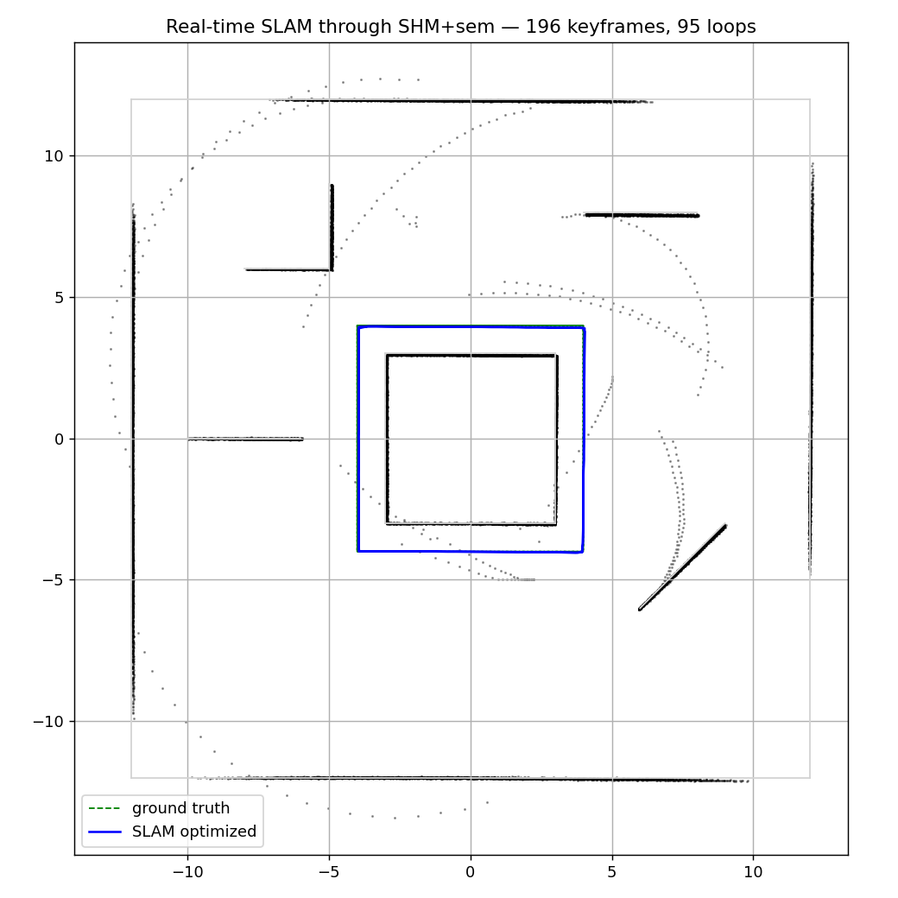
Lecture notes
This slide is a single result plot titled "Real-time SLAM through SHM+sem, 196 keyframes, 95 loops." SHM+sem indicates the pipeline ran in real time using shared memory and semaphores. The plot is a top-down map with both axes in meters, running from about minus 12 to 12.
The gray LiDAR points form sharp, thin walls:
A large outer square about 24 meters on a side.
A central box about 6 meters across, spanning minus 3 to 3.
Several interior segments: an L-shaped corner near the upper left, a short horizontal wall near the top right, a short wall at the left, and a diagonal wall at the lower right.
The robot drives a square loop from minus 4 to 4 around the central box. The legend lists ground truth as a green dashed line and the SLAM-optimized trajectory as a solid blue line. The blue line sits almost exactly on top of the green, so you can barely see the ground truth.
This is the payoff of the scoring gate from the last slide. Each of the 95 loop closures passed the low-RMSE and high-inlier-ratio test before being added to the factor graph. Notice that the walls appear single and crisp, not doubled, which is the visual sign that drift has been removed.
A few curved arcs of stray gray points remain, sweeping across the open space. These are leftover points that do not lie on any wall, so they did not become solid surfaces in the map.
Quick check: if the gate had accepted a false loop closure, what would you expect to see in this map? You would see warped or duplicated walls and a trajectory pulled away from ground truth.
Next, we look at what happens inside the solver when a confirmed loop closure is added.
145. Detecting Loop Closure (3/8)
Once the scan has passed all the criteria's and has been added to the Factor Graph,
The new loop closure edge carries a HUGE initial error (equal to the accumulated drift)
The L-M solver sees this massive residual and is compelled to reduce it!
To minimize total energy, it distributes the correction proportionally across every pose in the loop
The result: the entire trajectory 'snaps' into global consistency in a handful of iterations
Double walls collapse into single walls, curved corridors straighten, the map becomes useful again!
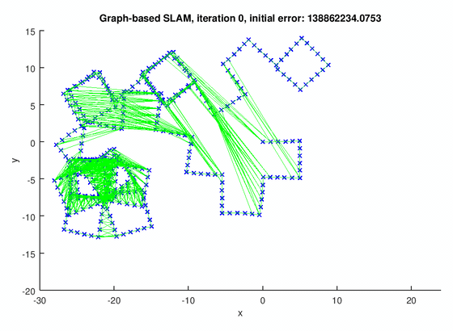
Lecture notes
This slide explains what happens after a loop closure candidate passes the RMSE and inlier-ratio checks from the previous slides and is added to the factor graph as a new edge.
The slide makes six points. First, the new loop closure edge carries a huge initial error, equal to all the drift accumulated around the loop. Second, the Levenberg-Marquardt, or L-M, solver sees this massive residual and works to reduce it. Third, to minimize total energy it spreads the correction proportionally across every pose in the loop. Fourth, the whole trajectory snaps into global consistency in a handful of iterations. Finally, double walls collapse into single walls, curved corridors straighten, and the map becomes useful again.
The figure on the right is from the Medium article at https://medium.com/@anushkasatav07/how-does-a-robot-recognize-where-its-been-place-recognition-and-loop-closure-intuitively-f5e3e3e6346e. It shows a graph-based SLAM pose graph at iteration 0, before any optimization, with an initial error of about 138.9 million. Blue x markers are robot poses spanning x from about minus 28 to 9 and y from about minus 13 to 14. They form disjointed, misaligned rectangular loops. Dense green edges stretch long distances between poses that should coincide, and every green line is error the solver must remove.
"Total energy" is the cost you saw with Gauss-Newton: E = sum over edges of e_ij^T * Omega_ij * e_ij. That is the sum of each residual squared, weighted by its information matrix. Because the error is squared, one huge residual dominates E. The cheapest way to shrink it is for many poses to each move a little.
A quick check for you: why does the error get spread out instead of moving only the newest pose? The next slide answers this.
146. Detecting Loop Closure (4/8)
The reason why we distribute the error to all the nodes for the loss is the following:
If we dump all the correction into a single pose, every intermediate pose now has an inconsistent neighbourhood ( everything has shifted by a huge amount).
Local accuracy suffers to restore global accuracy - that's a bad trade
By distributing proportionally, each intermediate pose moves by a small amount
Local relationships (each short-range edge) remain nearly satisfied - we preserve local accuracy
This is why L-M minimizes the sum of squared errors: it naturally spreads the blame
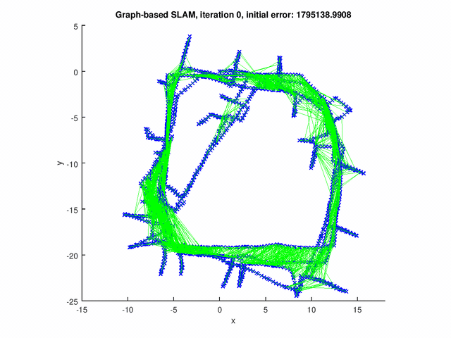
https://yangfan.github.io/projects/SLAM/Graph-based-slam
Lecture notes
This slide answers the question left by the previous one: when the loop closure edge arrives with a huge error, why does the solver spread the correction over every pose instead of fixing just one? The text makes the argument in steps, and the figure on the right, from yangfan.github.io/projects/SLAM/Graph-based-slam, shows a pose graph at iteration 0, before optimization. Its title gives an initial error of about 1,795,139. Blue x markers trace a robot driving a roughly square loop, about x from minus 10 to 15 and y from 3 to minus 24. Repeated laps are smeared and misaligned, short spurs stick out, and dense green constraint edges crisscross between poses that disagree.
Suppose you dump the entire correction into a single pose. The loop closes, but that pose now jumps a long way relative to its neighbours. Its odometry and scan-match edges, which were nearly perfect, are suddenly badly violated. You buy global accuracy by destroying local accuracy, which is a bad trade.
The squared-error cost avoids this automatically. Say the loop must absorb a total correction D across n edges. Putting it all on one edge costs D^2. Spreading it evenly costs n*(D/n)^2 = D^2/n, which is n times smaller. Levenberg-Marquardt (L-M), minimizing the sum of squared residuals, therefore prefers many small adjustments. In practice each residual is weighted by its information matrix, so uncertain edges absorb more of the correction and confident ones absorb less. That is what "spreading the blame proportionally" means.
Quick check: with an absolute-value cost instead of a squared one, would the solver still prefer to spread the error?
Next, we see that this snapping causes a problem for a single global occupancy grid.
147. Scaling (1/2)
Lecture notes
This section slide reads "Scaling" in large white text, underlined by a short orange-red line, on the dark blue Illinois background with faint sketches of equations and diagrams.
You just saw loop closure snap the whole trajectory into global consistency. That success creates a new problem: the occupancy grid you built from the old, drifted poses is now wrong. This section looks at why one big global grid breaks down, and how dividing the world into submaps lets the map scale.
148. Scaling (2/2)
So far we've assumed a single large 2D array holding every cell of the world
The problem is that when, the graph optimizer snaps the trajectory ( through loop closure), ALL prior raycasts become misaligned
Every deposited cell was computed assuming the old drifted pose - now those poses have moved
You can’t “un-bake” already-written cells without replaying every scan - way too expensive
The single-global-grid architecture is fundamentally incompatible with loop closure
Lecture notes
This slide is all text. It points out a problem with how the map has been stored so far. Up to now you have assumed one large 2D array, a single occupancy grid holding every cell of the world. When loop closure fires and the graph optimizer snaps the trajectory into place, every raycast you already made becomes misaligned.
Here is why. Each time a scan arrived, you raycast it from the robot's estimated pose at that moment. You marked cells along each beam as free and the endpoint as occupied, adding log-odds into the grid. That pose was the old, drifted one. On the previous slide you saw the optimizer spread the loop-closure correction across all the nodes, so nearly every pose in the trajectory now moves a little. The cells were written in the wrong places, and nothing in the grid records which scan or which pose put them there.
You cannot "un-bake" those cells. The log-odds from many scans are summed together in each cell. The only fix is to clear the grid and replay every scan from its corrected pose. On a long run with thousands of scans, doing that after every loop closure is far too expensive to run online. So the single-global-grid design is fundamentally incompatible with loop closure.
Quick check: if only the last ten poses moved after optimization, could you avoid a full replay? Not cleanly. Their contributions are mixed into shared cells with every other scan's.
Next, you see the fix: break the world into small submaps, each pinned to a pose node.
149. Detecting Loop Closure (5/8)
The solution, divide the environment into tiles — typical submap size: 10 m × 10 m at 5 cm resolution
As the robot moves, it builds the local submap (small grid, few scans)
When the robot crosses the edge of the current submap, it freezes it and starts a new one
Each submap is independent - no information is shared across boundaries during construction
Critically: each submap is anchored to a node in the pose graph
![Four-panel comparison of one global grid versus submaps for loop closure. (a) A single occupancy grid: the robot path runs from start o around to end c, but accumulated drift leaves a misaligned wall and gap alpha, so correction is ambiguous (A or B). (b) The resulting 3D point cloud is smeared and doubled. (c) The same path covered by small, overlapping, rotated submaps anchored to path nodes; after loop closure, the submaps shift rigidly so c meets o. (d) The resulting point cloud is clean and consistent.](L24-25_files/cf6f27c70b4b.svg)
https://www.cs.cmu.edu/~kaess/pub/Ho18iros.pdf
Lecture notes
This slide gives the solution to the problem from the last two slides: a single global grid cannot be corrected after loop closure because every cell was baked in using old, drifted poses. The fix is to divide the environment into tiles called submaps. A typical submap is 10 m by 10 m at 5 cm resolution, which is 200 by 200 cells, or 40,000 cells, small enough to build and store cheaply.
The text makes four points. As the robot moves, it builds the current local submap from only a few scans. When the robot crosses the edge of that submap, it freezes the submap and starts a new one. Each submap is independent, so no information is shared across boundaries while submaps are being built. Most important, each submap is anchored to a node in the pose graph.
The figure, from the paper at https://www.cs.cmu.edu/~kaess/pub/Ho18iros.pdf, compares the two approaches. In panel (a), a single occupancy grid holds a path from start o around to end c. Drift leaves a misaligned wall and a gap labeled alpha, so the correction is ambiguous: it could be A or B. Panel (b) shows the resulting 3D point cloud, which is smeared and doubled. In panel (c), the same path is covered by small, overlapping, rotated submaps pinned to path nodes. After loop closure, the submaps shift rigidly so that c meets o. Panel (d) shows the resulting point cloud, which is clean and consistent.
A common misconception is that submaps help because they are smaller. Size is not the key. They help because each one is tied to a pose node, and the next slide shows why that anchoring lets the optimizer simply move whole submaps.
150. Detecting Loop Closure (6/8)
Each submap is a rigid object pinned to one pose node
When the pose graph optimizer moves that node, the ENTIRE submap moves with it - translation + rotation
No raycasts need to be re-baked. No cells re-computed. The submap is just transformed as-is.
The global map is implicitly re-assembled on the fly at render time
Lecture notes
This slide has no figures, just four statements that finish the argument from the last two slides. On slide 148 you saw that one global grid breaks under loop closure, because every cell was baked in using poses that later move. On slide 149 you saw the fix: split the world into small submaps, each anchored to a pose graph node. This slide explains why that fix works.
First, each submap is a rigid object pinned to one pose node. Its cells are stored in the submap's own local frame, not in world coordinates.
Second, when the pose graph optimizer moves that node, the entire submap moves with it, both translation and rotation. If the anchor pose is (x, y, theta), a cell at local coordinates (u, v) lands in the world at x_w = x + u*cos(theta) - v*sin(theta) and y_w = y + u*sin(theta) + v*cos(theta). Correcting the map just means updating three numbers per submap.
Third, no raycasts are re-baked and no cells are recomputed. The submap's contents never change; only its placement does.
Fourth, the global map is never stored as one fixed grid. It is reassembled on the fly whenever someone asks for it, which the next slide covers.
A common misconception is that this fixes all drift. It only corrects drift between submaps. Drift inside one submap stays baked in, which is why submaps are kept small, around 10 m by 10 m, built from only a few scans.
Quick check: if a loop closure rotates one anchor node by 5 degrees, what happens to the occupancy values inside that submap? Nothing. They are only drawn rotated.
151. Detecting Loop Closure (7/8)
When the user (or planner) requests the current global map the system fetches every submap + its anchored pose from the optimized graph
Transforms each submap into the world frame using the current node pose
Blends overlapping cells by taking maximum occupancy (or averaging probabilities)
Result: a fresh, geometrically-consistent global map, rebuilt in milliseconds
Lecture notes
This slide is text only, under the title "Detecting Loop Closure." It lists four steps for producing the global map from submaps. First, when the user or the path planner asks for the current global map, the system fetches every submap together with its anchored pose from the optimized pose graph. Second, it transforms each submap into the world frame using that node's current pose. Third, it blends cells where submaps overlap, either by taking the maximum occupancy or by averaging the probabilities. Fourth, the result is a fresh, geometrically consistent global map, rebuilt in milliseconds.
This finishes the idea from the previous slide. Each submap is a rigid object pinned to one pose node, so the global map is never stored as one big grid that you must repair after a loop closure. You build it only when someone needs it. For a submap anchored at node pose (x, y, theta), a point p in the submap's own frame lands in the world at p_world = R(theta)*p + [x, y], where R(theta) is the 2D rotation matrix. That is one rotation and one translation per submap, which is why the rebuild takes milliseconds and not minutes.
The blending choice matters. Taking the maximum occupancy is conservative: if any submap thinks a cell is a wall, the planner treats it as a wall. That is the safe choice for obstacle avoidance on your robot. Averaging the probabilities smooths out noise but can wash out thin obstacles.
Quick check: after a loop closure shifts node 40, what changes in submap 40's cells? Nothing. Only its pose changes. Next, you see this in action in Google Cartographer.
152. Detecting Loop Closure (8/8)
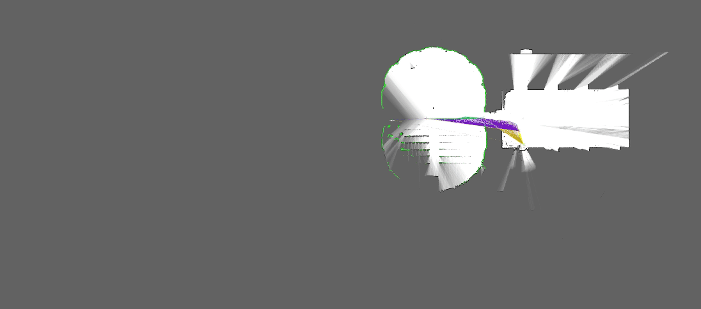
https://wilselby.com/2019/06/ouster-os-1-lidar-and-google-cartographer-integration/
Lecture notes
This slide shows a real example of what we have been building up to: a screenshot from Google Cartographer making a 2D occupancy grid map from scans taken with an Ouster OS-1 lidar. The source is the blog post at https://wilselby.com/2019/06/ouster-os-1-lidar-and-google-cartographer-integration/ if you want to read the full setup.
Here is what the image contains. The gray background is unknown space, meaning cells the lidar has never observed. White areas are free space that the robot has seen. On the left there is a roughly circular scanned region, outlined in green. The green dots are the hits from the current scan. On the right is a rectangular room that was mapped earlier, and light beams fan out from it where the rays pass through doorways. A purple and yellow band connects the two regions. This band is the robot's trajectory as it heads back toward space it has already mapped.
That return to known space is the moment loop closure becomes possible. Cartographer scan-matches the new scans against the old submaps, using the coarse filtering and scoring we just covered. If the match score is high enough, it adds a constraint to the pose graph. The optimizer then moves the pose nodes. As the last two slides described, every submap moves rigidly with its node, and the global map is re-assembled on the fly with the drift removed.
For your own robot, notice how much accumulated drift a single good loop closure can correct.
With that, let's open it up for questions.
153. Questions? (2/2)
Lecture notes
This slide shows the word "Questions?" in large white text on the dark blue Illinois background, with faint hand-drawn sketches of equations, molecules and diagrams behind it.
We have now gone through the whole SLAM pipeline. Scan matching with ICP and NDT, Monte Carlo localization, occupancy grid maps, pose graphs and factor graphs, and loop closure all lead to the rebuilt global map you just saw in Cartographer. Ask now about any step, especially how loop closures correct drift, before we wrap up the semester.
154. Thank you everyone for this fantastic semester!Best of luck on the final project!! 🫡
Lecture notes
This closing slide shows white bold text on a dark navy background with faint, chalk-style sketches of equations and diagrams: "Thank you everyone for this fantastic semester! Best of luck on the final project!!" followed by a saluting-face emoji. The Illinois "I" logo sits in the top right corner, and the footer reads Systems Engineering and Grainger Engineering.
With SLAM wrapped up, you have now covered the whole path from Red Board peripherals to mapping and loop closure. Bring all of it to your final project robot.
155. End of Lectures 24–25
Lecture notes
This closing slide marks the end of Lectures 24 and 25, the final lectures of SE 423. It is the orange Grainger College of Engineering title card: the blue Illinois block I logo beside the words "The Grainger College of Engineering, University of Illinois Urbana-Champaign." Faint hand-drawn sketches decorate the background, including a cube with diffusion equation terms, a sphere with marked angles, chemical structures, and an arrow diagram. These are decorative and not course content.
The SLAM story ends here. You started with front-end scan matching (ICP and NDT), then Monte Carlo localization and occupancy grid mapping. From there you built the pose graph and factor graph back-end, and you finished with loop closure to correct drift. Bring these tools to your robot's final project.